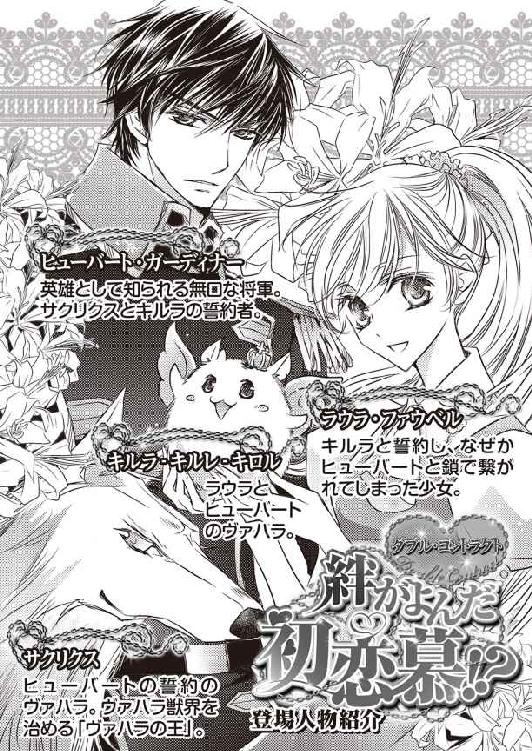
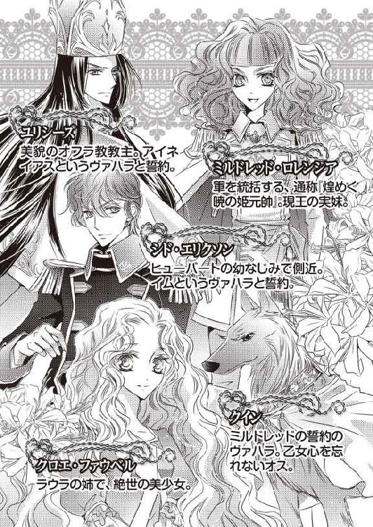
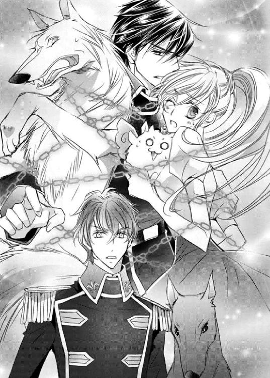
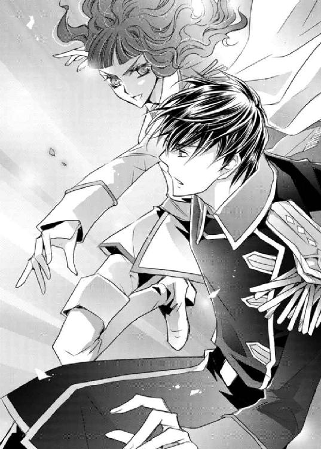
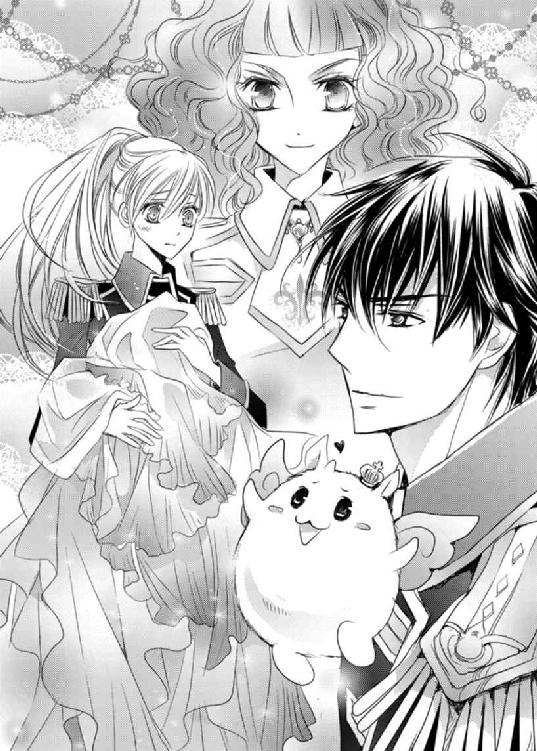
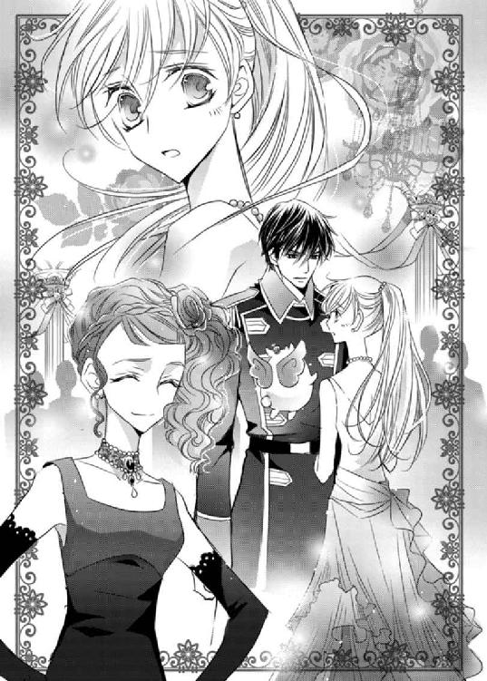
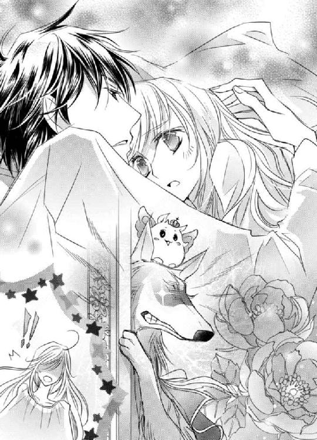
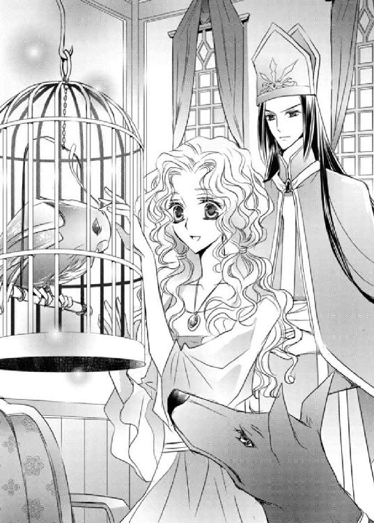
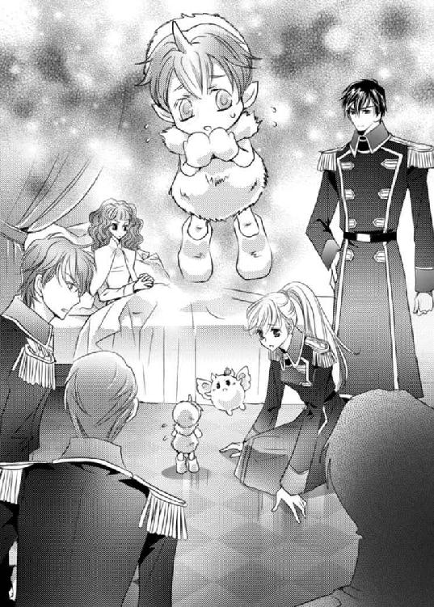
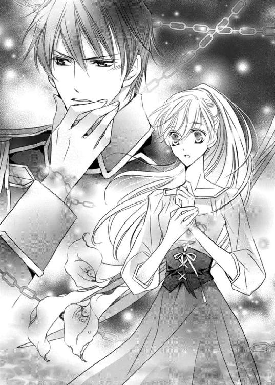

| ダブル・コントラクト2 絆がよんだ初恋慕!? (ビーズログ文庫) | |
| 香月 沙耶 | |
| エンターブレイン (2012) | |
本作品の全部または一部を無断で複製、転載、配信、送信したり、ホームページ上に転載することを禁止します。また、本作品の内容を無断で改変、改ざん等を行うことも禁止します。
購入時にご承諾いただいた規約により、有償・無償にかかわらず本作品を第三者に譲渡することはできません。
本作品は、底本の表現や演出を考慮して本文縦組で制作しております。また一部のページを改変しております。ごらんになるリーディングシステムにより、表示の差が認められることがあります。


ふわふわの砂糖菓子のような、甘い、甘い、音色。
澄んだ音を奏でる楽器か、心地よいそよ風か、王に召された上級歌人の歌声か――。
初めて聞くのに、どこか郷愁を感じさせる不思議な音だった。
しばし美しい音色に聴き入る。
降り零れる音を全身で享受していると、そこにひとしずく、異音が落ちてきた。
さびしい。
ひとの声ではなかった。けれど確かにそう、心の中に響いた。
会いたい。
会いたい。
会いたい。そばにいたい。そばにいて。
ああ、うち震えるほど甘く美しく響くのに、この音は嘆きだったのか。
誰かを希求する、切なる願いを乗せた歌、だ。
今にも途切れてしまいそうな、か細い歌は、わたしの心をぎゅっとわし摑みにする。
誰に会いたい？ 誰に、そばにいてほしい？
問うても、歌の主は応えてくれない。
歌は、
嘆きの音を、ただひたすらに世界へと降らせ続ける。
それ以外の雑音には見向きもしない。
どんなに心を傾けても、決してわたしの声は聞こえない、聞いてはもらえない。
それはまるで、つれないあのひとのようで―――――。いつもと同じ朝を迎え、いつもと同じ昼を過ごし、いつもと同じ夜がやってきた。
ローデリー地区『オフラ教』教堂内に住まう教主ユリシーズは、夕餉を終え、就寝する前の時間を読書に充てていた。
静かな夜だった。
気候は暖季に差しかかっており、開け放たれた窓から吹き込んでくる夜風は涼やかだ。長い黒髪がさらりと頰にかかる。
ユリシーズの足元で寝そべっていたアイネイアスが、尖った耳を震わせた。そして窓の外をじっと見つめる。
「どうかしましたか？」
己の誓約のヴァハラを見下ろすと、アイネイアスは音も立てずに立ち上がった。
小さく鼻をうごめかせる。
「アイネイアス？」
「......気のせいか？」
そう言いつつ、アイネイアスの身はふわりと宙に浮いた。そのまま窓から外へと出ていくヴァハラを目で追うと、少し置いてユリシーズを呼ぶ声がした。
ユリシーズはランタンを持って中庭へと向かった。
半端な膨らみを見せる月明かりと手にしたランタンのみでは、周囲の闇を駆逐できない。
それでもユリシーズの足は躊躇せず、真っ直ぐに己のヴァハラの呼ぶ方へと進んだ。
こぢんまりとした中庭には、先代の教主が好んで植えた低木や草花が生い茂っている。
アイネイアスは隅に並んで植えられた、小さな白い花を咲かせる低木の根元をじっと見据えていた。
視線の先を追う。
「アイネイアス、それは」
「んー、ちょっと厄介なお客さんだ」
低木の葉陰の下、生い茂る草の中に埋まるように落ちている『それ』。
明かりを手向けたユリシーズは、黒らかな瞳に『それ』を映し......、我が半身の言う通り、これは厄介なことだと、細い吐息を漏らした。
◆◆◆
ラウラ・ファウベルは毎朝、ほぼ同じ時刻に起床する。
寝付きがよく、また眠りも深いため、寝起きはすっきり爽やかだ。
最近は特に、目覚めるのが楽しい。
隣に眠る存在が、ラウラにとろけるような至福を与えてくれるからだ。
ラウラにとって、唯一無二の、愛しのヴァハラ――キルラ‐キルレ‐キロルが、すぴすぴと寝息を立てて眠っている。
野生にあってはちょっとどうかと思う、へそ天状態での寝方も、ラウラの目には、ただただ可愛らしく映る。
――今朝もほんっとうに可愛いわ、わたしのキルラは。
愛らしい寝顔に、胸いっぱいに幸せが広がり、ラウラはふふ、と笑みを浮かべた。
しばらくキルラの寝顔を堪能してから静かに身を起こそうとしたラウラは、だがそこでぎょっとする。
キルラとは逆側に、こちらは一緒のベッドでなんて絶対に眠れない存在――英雄将軍、ヒューバート・ガーディナーの姿があったからだ。
「し......ッ！」
将軍、と叫びそうになって、だがキルラを起こさないよう、慌てて口を塞ぐ。
視線だけで、どうして？ と問うた時、ラウラはその人物が、ヒューバートではないことに気づく。
本来は漆黒のヒューバートの髪が、白銀色になっていた。
髪の色が違う、ということは――、
「サ、サクリクス、さん、ですか？」
英雄将軍ヒューバートの誓約のヴァハラである、白銀のヴァハラの名をそぉっと呼ぶ。
だが彼はあっさりと首を横に振った。
「違う」
否定の言葉、そしていつもと同じ、感情がうかがえない平坦な声に、ラウラは目を剝く。
「なんで将軍が......え、でもサクリクスさんと同調してますよね？ サクリクスさんは？」
「中で眠っている」
「へ、......へえ」
「俺が寝ている間にサクリクスが同調をしたようだ」
「同調した『ようだ』ですか？ じゃあ将軍の意思は無視？」
『同調』とは、誓約者の中にヴァハラが入ることなのだが、そう簡単にできるものではない。
ラウラもかつて危機的状況に陥った際におこなえたのだが、同調解除後が最悪だった。
身体に力が入らなくて、誰かの手を借りなければ立つことすらできなくなる。
ところがヒューバートと誓約のヴァハラ、サクリクスは、いとも容易く同調できてしまうのだ。
そのサクリクスが、ヒューバートが眠っている間に無断で同調をし、さらにこのベッドに入った、と。
ラウラは眉間にしわを寄せると、ベッドの上で居住まいを正し、ヒューバートを見据えた。
「ガーディナー将軍、そろそろ本気で誓約解除をしていただきたいと、将軍からもサクリクスさんに言ってください。サクリクスさんはヴァハラの王なんでしょう？」
ヴァハラ――。
それは人界とは異なる世界......ヴァハラ獣界に住まう獣で、犬や狼に似た姿をしている。
だがそれらの獣とは、決定的に違うところがある。
翼もないのに、自由に空を飛べるのだ。
そればかりか、その身は大気に溶け、口からは太陽とも思しき眩い光を発し、またひとの言葉を喋ることまでできる。
ここ、ロレンシア王国では、ヴァハラは神の使い、あるいは神そのものと崇められ、人間以上に賢いその獣と誓約を望む者は多い。
切羽詰まった事情から、ラウラもまたヴァハラを心の底から欲していた。
ヴァハラと人を繫ぐことを命とした教団『オフラ教』の舞台で、ラウラがヴァハラ召喚の儀をおこなったのは、今から十ツ日ほど前のこと。
だが召喚したヴァハラ――キルラ‐キルレ‐キロルが、儀式の作法を知らなかったため、誓約者をふたり選んでしまった。本来ならば、誓約者とヴァハラは一対一でなければならないにもかかわらず。
そんなイレギュラーなことをしでかしてしまったためか、大変なアクシデントが起きた。
ヴァハラと誓約者を繫ぐはずの『誓約の鎖』が、誓約者同士――ラウラとヒューバートを繫いでしまったのだ。
距離ができると金色の誓約の鎖が出現し、ふたりを強引に近づける。これまで何度か誓約の鎖が現れたが、そのたびにラウラがヒューバートの方へと引き寄せられた。
引っ張るその力は強く、手首がもげるのではないかと恐怖するほどの痛みをラウラに与える。
だからこうして生活も行動もともにし、結婚もしていないのに同室というドキドキハラハラな日々を過ごしているのだった。
誓約したての頃は、ラウラもヒューバートも事情があったから今の状態を甘受していた。というか、渋々のみ込まなければならない状況だった。
でも、のっぴきならないふたりの『事情』も無事解決。
ラウラばかりではなく、ヒューバートだって、いつまでも一介の平民と鎖で繫がれている生活は窮屈に違いない。
それ以上に、ヒューバートは今、二体のヴァハラと誓約をしている状態だ。
誓約の鎖が、ヴァハラと誓約者にどんな作用を及ぼすのか――。
誓約者自身にも知らされていない秘密を、ラウラは以前垣間見たことがあった。
サクリクスとキルラと誓約していることで、ヒューバートの身に、通常の誓約とは違うことが起きるのではないか......。
強靭な精神と肉体を持つヒューバートだから、心配する必要などないのだろう。だがそれでも、ラウラは不安な気持ちを払拭することができずにいた。
それなのに、誓約解除ができるヴァハラの王、ヒューバートの一番目の誓約のヴァハラでもあるサクリクスは、首を縦に振ってくれない。
サクリクスには彼なりの思惑があるのだろう。が、そろそろヴァハラの王には本気になってもらわなければ。
――このままずっと、将軍と鎖で繫がれ続けているわけにはいかないんだし。
「――そうだな」
「え？」
これまで誓約破棄を訴えても、そのうち、とはぐらかしていたヒューバートが、初めて同意したものだから、ラウラは逆に戸惑う。
「明日王都に行くことになった。いつこちらに戻れるか未定だ」
「王都......オージアルに。軍務、ですよね？」
ああ、とヒューバートはうなずく。
いつ戻れるか未定ということは、ずっと行ったきり、ということもあり得るのか。
巷では英雄将軍と呼ばれているヒューバートの正式階級は『少将』。
彼より上の階級は、中将、大将、それから元帥のみ。
加えて新貴族の称号を持つガーディナー家の次男であるヒューバートとは、あらためて考えるまでもなく、まったくの身分違い。
――本来なら、会うことはおろか、口すら利けない存在なんだ。
ヒューバートがとても遠いひとであることを再認識して、胸の内側が小さく軋んだ。
誓約解除をする気になってくれてありがたいはずなのに、喜ぶばかりではない自分の心情に、ラウラはひっそりと眉をひそめる。
「おまえとおまえの姉は引き続きここで暮らす。それが条件だ」
ヒューバートにそう言われるなり、ラウラはえっと顔を上げた。
「以前から言っているだろう。ここで暮らすなら誓約解除を考えると」
「それは、ええと、聞いてはいましたけど。......いや、ですけど」
慌てるラウラに対し、ヒューバートはいつも通りの無表情だ。
何がそんなに問題なんだ？ とでもいうかのように平然としているヒューバートに、ラウラはむっとする。
「ガーディナー将軍、いくつか言っておきたいことがあります。ひとつ、貴族の方に命令をされて、表面上は従ったとしても、心までは隷属させることはできません。ふたつ、ひとにはひとの都合があるんです。少しはこっち側の言い分も聞いてください。みっつ、将軍のベッドはあっちで、こっちはわたし、十六歳女子のベッドなんです。そんな自分のベッドの上みたいに寛がないでください！」
ヒューバートは一度、瞬きをした。
ラウラが今言ったことを咀嚼でもしているのか、少しの間無言を通す。
それが案の定長い時間で、返答を待っているラウラは、なおも眉間にしわを寄せた。
お得意の『面倒』では済ませないぞと、迫力が出るように一生懸命目に力を込めていると、ふっとヒューバートは息をついて起き上がった。
向かい合う形になって、ラウラはちょっと退いてしまう。
「命令したつもりはない」
「命令しているように聞こえます」
すかさず返すと、ヒューバートはそうか、と軽くうなずいた。
「では言い直す。俺がキルラ‐キルレ‐キロルと誓約解除をしたら、おまえとは縁が切れる。俺はそれが惜しいと思う。これまでともにいた間、おまえを興味深く面白いと感じた。もっと別の面があるなら、それをすべて見たい。だからここにいろ、と言った」
――将軍が長ゼリフを喋った......！
だがその言葉を聞いているうちに、ラウラの頰がじわじわと熱くなっていく。
「す、すべて、見たいって、そんなお見せするような特技や特異な面なんてございませんよ!? わたし普通ですから！」
「普通でも特異でも構わない。おまえがおまえであれば、ずっと見ていたい」
ひーっ、と内心で悲鳴をあげる。
――待って待って、何言ってんのこのひと！
「言い分があるなら聞こう。何が不満で、何をしたい。できることであれば叶えよう」
「うっ、そんないきなり言われても......、あの、誓約解除したら学校に通わないとですし」
「ここから通えばいい。遠くはないだろう」
「そ、そうですけども」
「あとは寝場所のことか。――善処しよう。以後気をつける」
あ、そんなあっさりと。
「ほかは」
「ほ、......ほかは、えっと」
よもやヒューバートに言葉で追いつめられるとはと、ラウラはじりじりと後ずさる。
なぜ距離を取る、というふうに、ヒューバートが近づいてきて、あっ、と思った時には、仰向けにベッドに倒れ込んでしまった。
「んー......、ラウラ、どうしたのじゃ？」
ラウラの横で眠っていたキルラが、目元をコシコシしながら、ぼんやり見上げてくる。
「な、なんでもないよ、おはようキルラ！」
「おはようなのじゃ。うむ？ 何故ヒューバートの髪が白銀なのじゃ？」
ラウラを覗き込むようにしていたヒューバートを見て、キルラは首を傾げた。
「キルキル～、おまえ昨夜のこと忘れたのか？ ヒューともラウラちゃんとも寝たいって言ってオレに同調させて、こっちのベッドに引っ張り込んだんじゃないか」
ヒューバートの口から、突然サクリクスの声が出たものだから、ラウラは悲鳴をあげて間近にあった身体を思いきり突き飛ばしてしまった。
「うっ、おっ、ぅわ！」
ふいをつかれたヒューバート――に同調しているサクリクス――が、ベッドから転がり落ちてしまう。
ドキドキしすぎて、突き飛ばしたサクリクスに謝ることもできない。そっと胸を掌で押さえて、どうか動悸が収まりますようにと細く長い息をついた。
「......何をしておるのじゃバカ王め。子どものようじゃな」
どういうわけか、彼に対してだけは大層辛辣なキルラがそう言うと、ベッドの下からひょいと顔を上げたサクリクスが、ニッと笑った。
――いつも思うけど、中身が違うと、表情も全然違う......。
「何言ってんの。子どもはキルキルだろ？」
「我は子どもではない！」
「オレはキルキルの養い親なんだから、キルキルはどんなに年取っても、オレの子どもだって」
「貴様に育てられた覚えなどない」
キルラはつんとそっぽを向いた。
「ん？ じゃあキルラはひとりで暮らしていたの？」
よくよく考えれば、サクリクスはヒューバートの誓約のヴァハラなのだから、誓約の鎖で繫がれている以上、ヴァハラ獣界に戻ることはできないのではないか？
「じじと一緒にいた」
「じじ、って誰？」
「このバカ王の前の前の王じゃ」
「あ、そうだったんだ」
サクリクスがいなかったヴァハラ獣界で、キルラがひとりぼっちではなかったと知って、ラウラはよかったと、内心胸を撫で下ろした。
――前の前の王様かあ。お会いしてみたいな。
ヴァハラ好きなラウラが想像してうっとりしていると、ヒューバートが立ち上がった。と同時に、サクリクスとの同調を解くと、ヒューバートの髪が、白銀からいつもの黒へと戻る。
「サクリクス、今日中に俺とキルラ‐キルレ‐キロルの誓約解除をする」
「そりゃまたずいぶん急だな。ラウラちゃんと話はついたのか？」
ヒューバートはちらりとラウラに視線を寄越した。ドキリと、小さく鼓動が跳ねる。
と、ラウラが返事をする前に、またヒューバートが口を開くより先に、キルラがヒューバートに向かって飛んでいく。そうして肩に乗ると、至近からヒューバートをじっと見つめた。
「二番目、何故二番目と誓約解除をせねばならんのじゃ？ 二番目は我が嫌いか？」
「......」
「あー、前から言ってるだろ？ ふたりの人間が、ずっと一緒にいるのは難しいんだって」
昨夜も寝る前に話したよな、とサクリクスが言い添える。
「じゃがラウラは我を家族じゃとゆうた。ヒューバートも家族になってもいいとゆうたのじゃ。家族は一緒にいるべきじゃろう？」
「キルキル、一緒にいなくても家族は家族だぞ」
「我は、家族とは一緒にいたいのじゃ」
ぺしょんと耳を伏せるキルラを見ていると、ラウラの胸も痛む。
それでも、ヒューバートは軍人であり、ラウラはまだ十六歳、本来ならば学校に通う年齢だ。
身分や性別の違いだけでなく、生活環境がまるで違う。
短期間ならともかく、やはりこれから先、ヒューバートと鎖で繫がれたままではいられない。
だがそんな人間側の事情を、まだ幼いであろうキルラに、理解し、納得しろというのは難しいのかもしれない。
キルラにしてみれば、ラウラもヒューバートも、己の誓約者なのだから。
「キルラ‐キルレ‐キロル」
どう言ったものかと考えあぐねていたラウラより先に、ヒューバートが重々しく口を開いた。
「......なんじゃ」
拗ねてはいないが、うつむいて目を合わせようとしないキルラの背に、ヒューバートは軽く触れた。
金色の羽の間から上に向け、王冠を被っていない方の角を、指先で優しく撫でる。
「こ、こしょばゆいぞ」
「今までのようにずっと一緒ではないが、おまえがラウラ・ファウベルとともにいる限り、俺との縁も切れることはない。この屋敷にいれば、俺はここに帰ってくる」
それはいつものように平坦に響く声なのに、ラウラの耳を、優しく打った。
「......誓約解除しても、我らは家族か？」
「おまえがそれを望むなら」
ふっと目を細めるヒューバートを、キルラはまじまじと見つめ......、
「望むぞ！」
きゃふー、と笑顔を見せながら、小さな両前肢で、ヒューバートに抱きついた。
キルラの機嫌が直ったことにホッと安堵したラウラだったが、
――ん......？
ちょっと待って、ちゃんと考えてみて。
ラウラはヒューバートの今の発言を振り返り、そうして、あっと声をあげる。
――それってつまり、ここで暮らすことになっちゃわない？
慌てて反論しようとして、だが喜ぶキルラを見てしまえば、口を噤まざるを得なくなる。
「............」
や、やられた。
なし崩しに、これからもこの屋敷で暮らすことになってしまった。
「なんていうかね、ラウラちゃん。拗ねっ子と唯我独尊将軍には敵わないってことで」
サクリクスの慰めの言葉に、ますますラウラはがっくりと肩を落とした。
◆◆◆
「んん、あたしはいいわよ、どこで暮らすんでも」
ラウちゃんと一緒ならね、と言う我が姉の笑顔の麗しさに、ラウラもつられてにっこりしそうになるが、すぐに現状を思い出し、ため息を零した。
「一緒にいる理由がなくなったのに、ここで暮らすのは、道理的におかしいと思うんだけど」
ラウラの姉、クロエは、朝餉に出されたパンを小さく千切ってぽんと口に放り込みながら、「ラウちゃんは真面目ねえ」と目を細めた。
「本や姿絵をいっぱい買っちゃうくらい将軍のファンだったんだから、この状況を楽しんじゃえばいいのに」
「ねっ、姉さん、しぃ......！」
その件についてはもうすっかり露見してしまっているけれど、当の本人がいるところで言わないでほしいと慌てる。そんな妹に、姉はくふんと笑った。
「じゃあね、こう考えたらいいんじゃないかな？ そもそもキルちゃんの最初の誓約者はラウちゃんでしょう。そこに割り込んできたのがガーディナー将軍。つまりラウちゃんは、ラウちゃんの誓約のヴァハラ――キルちゃんの力を将軍に貸してあげていた、と。その力の貸し賃として、この屋敷に住む、っていうのはどう？」
クロエの論に、ラウラは目を丸くした。
「貸しっぱなしっていうのは公平じゃないでしょ」
「......えっと、いや、わたしが力を貸したわけじゃないんだけど」
「ガーディナー将軍も、ラウちゃんに借りっぱなしじゃあ落ち着かないと思うわよ」
そう耳打ちされて、ラウラは向かい側に座るヒューバートに、ちらりと視線を向けた。
誓約者とそのヴァハラという関係ではなくなるということもあってか、キルラは今日を、ヒューバートに甘え倒す日と決めたようだ。
肩に乗って、「これが食べたいのじゃ」「あれを所望するぞ」と指し示しては、雛鳥のようにヒューバートに料理を口に運んでもらっていた。
その、意外にも面倒見のいいヒューバートを見ながら、ラウラは小さく息を漏らした。
――将軍がここに住めって言うのも、実はわたしに借りを返そうとしてのことなのかしら。
面白いとか興味深いとか言われたけれど、クロエの言葉の方が、ちょっとだけ納得できる気がする。
「あたしもラウちゃんたちに助けてもらったから、あとで恩返しさせてね」
「そんなの......！」
たったひとりの大事な姉を助けたのは、ラウラがそうしたかったからだ。そのことで恩返しなんて、水くさいではないか。だがクロエはそんなラウラを、笑み交じりに睨みつけた。
「ほーら、そうやって恩返しさせてくれようとしない。性格にもよるけど、恩返しできないことで困っちゃう相手だっていると思うよ」
黙って恩返しされるのも相手のためになるものよ、とクロエは言う。
――そういうものなのかなあ。
自立心旺盛なラウラは、他人から何かをしてもらうことが少し苦手だ。
可愛く甘えるのだって、どうやったらいいのか戸惑う。
クロエのようにあっけらかんと――内心ではちゃんと考えたうえで口にしているのかもしれないが――「ここに住んだらいいじゃない」というふうには言えない。
だがそんな、少し融通の利かない自身にも気づいているから、ラウラは努めてフラットに今の状況を考えることにした。
己の屈託はひとまず置いておき、キルラの気持ちを優先しようと思う。
キルラがここにいたいと、ヒューバートとここで暮らしたいと言うのであれば、その願いを汲むのも、一番目の誓約者であるラウラの務めではないか。
――キルラが喜んでくれるのなら。
胸の内でそう呟いた。
でもラウラはそんな気持ちの隅っこで、少しだけ利己的な自分もいることに気づいていた。
それは、ガーディナー家を出たら、ファウベル姉妹はまず住む家を探さなければならないという事情もあったし、五ツ月もの間眠りについていたクロエの体調が回復するまでは、静養ができるここにいさせてもらった方がいいのではないか、という考えもあった。
そしてそういうことだけではなくて、誓約解除を心底願っているかといえば......そうではなかったから。
本当は、誓約解除を拒むヒューバートに、ほんのちょっとだけホッとしていた。
もしかしたらヒューバートは、そんなラウラの心の奥底を看過して、これまで誓約解除にとり合わなかったのかもしれない。
『恩返し』あるいは『借りを返す』つもりで。
「あのね、あたし今日から占術館でお仕事再開するから」
「え、大丈夫なの？ もう少し休んでいた方がいいんじゃない？」
体調を慮る妹へ、姉は平気だよと首を振った。
「もう元気。何かしていた方が気も紛れるし、休んでいた分、バリバリ稼がないと」
「稼ぐのは置いといて、気も紛れるって、......嫌なものを透視た？ あ、それとも夢？」
占者であるクロエの、神秘的なグレーバイオレットの瞳は、現実ではない世界を透視することができる。だがその力は、楽しく美しいものばかりを視せるわけではない。
「んんん。いつものことだよ。ま、今回は透視たんじゃなくて聴こえたんだけどね」
「聴こえた......」
「うん。なんか誰かが迷子になっちゃったみたい。その誰かを探している声なの」
嫌なものじゃないから大丈夫、とクロエはラウラの心配を一笑に付した。
「なら、いいけど。でも何かおかしなことがあったら、ちゃんと教えてね」
もちろん、と笑顔でうなずくクロエに、ラウラもまた笑みを返した。
ちらりとヒューバートを見ると、今の会話が聞こえていたのか、心なしかその表情はやわらかかった。
ヴァハラの儀をおこなうのは、月満ちる日と月在らずの日の夜、『オフラ教』内の舞台上でと、厳密に決められている。
そのためラウラは、誓約解除の儀をする時にもオフラ教堂に足を運ばなければならないと思っていたのだが、それをサクリクスは「行かないよ」と笑って否定した。
「あの美人教主に会いたい気持ちもなくはないが、あそこでやるとオフライトも来てやたらと大がかりになるだろ。軍人がヴァハラ持ちってのは、あんまり口外しない方がいいんだよ」
儀式は『オフラ教』があえてヴァハラに神秘性を持たせようとしているようなものだ、と。
「えっと、軍人さんはヴァハラの誓約者じゃダメなんですか？」
「ダメじゃないよ。現にロレンシア王の実妹で軍のトップもヴァハラ持ちだし」
え、そうなんですかと驚くラウラに、サクリクスはそうなんだよとうなずいた。
「たださ、ヴァハラってのは結構使えるだろ？ 空を飛べるし姿を消すこともできる。諜報活動にうってつけってな。ヴァハラ持ちはそういう意味で、警戒される。軍人ならなおさらな」
諜報活動。
生活するうえで、滅多に......というか、まず聞かない言葉の、少し不穏な響きに、ラウラは小さく喉を鳴らした。
「オフラ教と軍部の仲があんまりよくないのも、昔軍の上層部全員にヴァハラを宛がえって言われて、オフラ教がそれを突っぱねたのが発端らしいしな」
ま、噂話だけどよと、サクリクスは牙を見せて笑ってみせた。
「ヒューはコソコソ策略を巡らせるの好きじゃねーんだよ。つか、好きじゃねーから王都から飛ばされたんだけど」
「飛ば......。あ、もしかして、以前イムさんが言っていた『外れ部隊』って、そういうこと」
「いやいや、『外れ部隊』こと『王仕隊』ってのは、元帥の直属の部下なんだ。で、王か元帥の命令で、独自の動きをするわけさ」
つまり、通常の軍隊とは別の働きをし、王と元帥以外の命令には従わなくていいということかと、ラウラは合点がいった。
――だから毎日軍部に足を運ばなくていいんだ。
「陰謀やら噓偽りが渦巻く宮廷内じゃあ、あいつてんで役立たずだからさ。元帥が、ヒューが動きやすい場所に飛ばしてくれたってこと」
「......なるほど」
サクリクスは、それにしても、と呟きながら、室内の机に向かっているヒューバートへ、呆れたような視線を向ける。
「おまえ、ラウラちゃんになーんも話してないんだな。ずっと一緒にいなきゃならない相手には、そういう大事なことはちゃんと話しておけよ」
ヒューバートはちらりとラウラたちを見やったが、ごく軽く肩を竦めた。
あ、出るぞ、「面倒」が、とラウラが待ち構える、その直前で、
「そんなんだからいいようにも悪いようにも誤解されるんだぜー。おまえはもっと口を鍛えろ。面倒だと思っても、ちゃんと喋れ。気持ちを言葉で表現しろ」
サクリクスが先に口を開いたかと思うと、滑らかな口調で説教を始めてしまう。
「ラウラちゃん、質問があったらちゃんと聞いてなあ？ ヒューに訊けないことがあったら、こっそりオレに言って？ いろいろ教えてやるからさ」
「はあ、ありがとうございます」
「だいたいこいつはガキの頃からほんっと口下手でなあ。あ、初めて会ったのはオレがヴァハラの王になったばかりの頃、こいつが三歳の時でさ、その時からもー口が重くて、ま、それも上に姦しい姉ちゃんが三人いたうえに豪放磊落を地で行くじいちゃんに振り回されていたから、気持ちもわからなくはないんだけど、それにしても喋らなくてよー」
――サクリクスさん、ガーディナー将軍が無口になった理由、ひとつわかりましたよ......。
常に一緒にいる誓約のヴァハラがこんなお喋りでは、口を挟む隙もなかっただろう。
もともと口数が少なかったところに、サクリクスが誓約のヴァハラになったことでそれに拍車がかかったのではないか。加えて誓約のヴァハラならば、ヒューバートの言おうとすることを、たやすく予想できるだろう。
そうやってサクリクスは無意識のうちに先回りし、ヒューバートの言葉を代弁し続けてきたのではないか？
「ラウラ、こやつの話は右から左へ流すがよいぞ。真面目に聞いておると、頭の中がパンクしてしまうからな」
キルラの助言に、ラウラは苦笑した。
「とりあえず、不測の事態が起こらないこともないかもしれないから、広い場所に移動すっか。おいヒュー、その仕事一段落ついたら誓約解除、しようぜ」
「終わった」
ヒューバートはひと言告げると書類を伏せ、椅子から立ち上がった。
「んじゃ行くか。外だな？」
ふさふさの白銀の尾をのんびり揺らしながら、サクリクスが先頭を歩く。半歩後ろをヒューバートが、さらにラウラが続いた。
「キルラ？」
振り返るが、キルラがついてこない。
一旦は納得したが、やはりいざ誓約解除となると、ごねたい気分なのかもしれない。
「キルラ」
ラウラが手を差し出すと、渋々飛んできた。そのままラウラの腕の中にすっぽりと収まる。
「ごめんね、キルラ」
ひと側の都合で、誓約解除を望むことを。
ラウラの謝罪に、キルラはふるふると首を振った。
「あのなあ、ラウラ」
「ん？」
「昨夜寝る前に、バカ王に誓約のことや人界のことをたくさん聞いたのじゃ。こっちに来る前に、じじにも聞いていたのじゃが、我は、まだまだ勉強不足だったようじゃの」
「わからないことがあったら聞いてね」
わたしにわかることだったら。
キルラの誓約者だもの、と小さく笑う。
キルラは大きな黒い目でラウラを見つめ、そうしてきゅっと首に抱きついてきた。
「ラウラはダメじゃぞ」
「ん、何が？」
「ラウラは我と誓約解除をしたいとゆうてはダメじゃ」
ずーっとずーっと一緒じゃないと嫌じゃぞと、キルラはすり寄ってくる。
その、あまりにも愛らしい甘えに、ラウラの胸はきゅぅんと音を立てた。
「言うわけないじゃない、わたしたちずっと一緒よ、キルラ！」
ラウラはそう言うや、キルラを思いきり抱きしめた。
「ぐぁ......っ、ラ、ラウラ手加減するのじゃ。昇天したらどうするのじゃ！」
はっと、ラウラは慌てて手を緩めた。
「ラウラはほんに力持ちじゃのう」
「うう、ごめんねごめんね......」
大事にキルラを腕に抱え直すと、少し距離ができたヒューバートたちを追う。
サクリクスは屋敷を出ると、前庭へ向かった。
ヒューバートの祖父の家だというここは、変わったオブジェが多い。
貴族の屋敷や庭といえば、美しい花が溢れ、噴水やコテージなどが配された、絵本に描かれるように整ったものだとラウラは想像していたのだが......。
ラウラの前には、成人男性の背丈の三倍、胴回りは五倍もあろうかという、巨人像がある。
ラウラが知らない国の人間がモデルらしく、見たこともないデザインの服を着、ロレンシアでは使われない、大ぶりな剣を振り上げていた。
石像は巨人像だけではない。牙を持つ獣像や、羽が四枚もある猛禽像といった、ラウラの知らない動物のものもあった。
広大な庭に、大小さまざまなそれらが、所狭しと、無造作に据えられている。
今はもう慣れたが、この屋敷にやってきた当初は、景観だとか調和とかをまったく無視しているこの庭を見るたびに、非常に落ち着かなかったものだ。
「んーじゃ、いっちょやるか。キルキルおいで」
ラウラの腕の中にいるキルラは、抗うように身震いをひとつしたが、きゅっと口を引き締めると、ヒューバートのもとへ向かった。
ヒューバートはキルラを励ますように、大きな掌でぽんと触れた。
「ラウラちゃんは、ちょっと離れててね」
「あ、はい」
鎖の出現を警戒しながら、ゆっくりとヒューバートから離れ、三十ガラン（歩数にして三十歩程度）ほど距離を取った。
ヒューバート、キルラと向き合うサクリクスが宙に浮き、ひゅう、と喉を鳴らした。
ラウラが初めて聞く音だ。
まるで口笛のように、高らかに響くその音は、もしかしたらヴァハラ本来の声なのかもしれない。
音は澄んだ高音から一気に低音へと駆け下り、その音の変化に同調してか、サクリクスが浮かんだ、すぐ下に生えている草が揺れた。
揺れはみるみるうちに大きくなってゆく。
ぐるり、と。
草が円状に倒れた。
ヒューバートの黒髪が強風に乱れ、キルラは彼の肩にぎゅっとしがみついている。
三十ガラン離れたラウラの場所には微風すら吹いていないが、彼らの周囲は相当強い風が渦巻いているのだろう。
深紅、朱、朱金と、めまぐるしく変化しながら、キラキラと光を散らし、風は鮮やかな色を纏う。
――すごい、なんて綺麗......。
不思議な光景に、ラウラは見惚れる。
「キルラ‐キルレ‐キロルとヒューバート・ガーディナーを繫ぐ誓約の鎖よ、ヴァハラの王たるサクリクスが誓約解除を命ず。オレのもとへ来い――！」
サクリクスが叫んだ刹那、光の中心にいてラウラからは見えなかったふたりが、くっきりと姿を現した。
ヒューバートとキルラの全身が、黄金色に包まれている。
その黄金色がそこかしこで捩れ、やがて一本の鎖になると、一気に空へと飛んでいく。
上へ上へと飛んでいった鎖が急降下し、さらに屋敷と並行して進みだす。その鎖の軌跡を言葉もなく見守っていたラウラは、次の瞬間目を瞠った。
「あっ！」
黄金色の鎖が、広い庭に点在する石像のひとつに、勢いよくぶつかったのだ。
――噓ぉ......！
大丈夫なのと焦るラウラをよそに、黄金色の鎖は石像を粉々に砕いてもなお、意気揚々と庭を進んでいく。
石像を一体壊しただけでは満足しないのか、まるで鎖自体に意思があるかのように、次々と石像を破壊する。
一体、また一体と、瓦礫の山を築く鎖の暴れっぷりに、ラウラは強い不安を覚えた。
「サ、サクリクスさん、サクリクスさん！ 大丈夫なんですか!?」
あんなに硬い石像にぶつかって、ヒューバートたちに影響はないのかと、離れたところからハラハラとサクリクスを呼んだ。
「ラウラちゃんはそこにいて！ 平気だから、多分！」
え、多分って、本当に大丈夫なの!?
だがラウラは、ヒューバートたちを心配する己の身までもが淡い光を纏っていることに気づかなかった。
ひとしきり暴れ回った誓約の鎖が、そのまま真っ直ぐサクリクスのもとへと向かった――と思いきや、黄金色の鎖はサクリクスをスルーして、一直線にラウラへとやってくる。
凄まじい勢いで飛んできた鎖は、だが直前で減速する。そうしてラウラの首下から腰までを何重にも巻くと、ぐん、と引っ張ったのだ。
「えっ、ああ......！」
転ばないよう、ラウラは引き摺られるまま懸命に走った。
「うぁっ？ なんじゃこりゃ！」
頓狂なサクリクスの声に、走りながら顔を向けると、サクリクスとヒューバートを繫ぐ赤い誓約の鎖までもが出現し、彼らを拘束していた。
三十ガランの距離は、あっという間にゼロになる。
ふたりと二匹は、団子状態で二本の鎖にグルグル巻きにされていた。
「バカ王！ 貴様何か間違いを犯したじゃろう!? なんじゃこのありさまは！」
「え、いや、別に間違っちゃいないんだけど。おぇ？ どういうことだ？」
「間違えていなければなんなのじゃ！」
「キ、キルラ、あんまり動かないで......」
ぎゅうぎゅうと鎖にまとめられているから、誰かが動くと、ヒューバートに強く身体を押しつけることになってしまう。
しかも場所が悪くて、ラウラはヒューバートの膝の上に乗った状態で、そのうえ顔の位置が近いため、今にも彼の唇が、耳に当たってしまいそうなのだ。
ヒューバートの息が耳朶に触れて、むず痒いような感触をラウラに与える。
――くすぐったい......ていうか、く、くっつきそう......！
「......おまえらさ、それなんのプレイさ」
いつの間に来ていたのか、ヒューバートの側近、シド・エリクソン少佐と彼のヴァハラ、イムが、誓約の鎖でグルグル巻きにされたふたりと二匹を、冷ややかな目で見下ろしていた。
「つまり、誓約解除の儀は失敗した、ということかな、ヴァハラの王様？」
尊大に脚を組んで居間の椅子に座るシドが、じろりとサクリクスを見下ろす。
本日顔を合わせた瞬間から、シドの冷ややかな眼差しは一向に温かくならない。
その視線を受けたヴァハラの王は、てへ、と笑ってみせた。
「なんかそうみたい？ どうしちゃったんだろうねえ？」
「......サクリクス、もっと真面目に話しなさい。仮にもヴァハラの王たるあなたが、誓約の鎖でグルグル巻きにされるなんて、みっともないことこのうえないですよ」
ヴァハラ獣界の者たちが見ていたら、なんと情けない、と嘆き悲しむでしょう。
シドだけでなく、彼の誓約のヴァハラ、イムの声もまた、少々手厳しい。
サクリクスはピンと尖った耳を、しおしおと伏せる。
「んなこと言われてもさあ......」
首を傾げるサクリクスを見ながら、ラウラもまた複雑な心境でいた。
このまま鎖に繫がれた状態で、普通の生活をしていけるはずもない。
誓約解除は、いずれ必ずしなければならない。......それなのに。
――わたし、ほんのちょっとだけ、ホッとしている？
「で、どうするんだよ」
シドはヒューバートを見、次いでラウラに目を向けた。
「......」
「明日には王都に行かなきゃならないんだよ。小娘も連れて行くつもり？」
ヒューバートはラウラをじっと見つめた。
紺碧色の瞳と視線を交わしても、彼が何を考えているのか、ラウラには想像もつかない。
「連れて行くには問題山積みだろう。といって、おまえが行かないわけにもいかないし。サクリクス、なんとかしろよ。おまえヴァハラの王だろうが」
「したいのはヤマヤマなんだけど、......うーん」
サクリクスは小さく唸ると、ふいによし、と立ち上がった。
「ちょっくらヴァハラ獣界に行って、じじいに訊いてくるよ」
「ヴァハラ獣界に？」
え、そんな簡単に、「ちょっくら行ってくるよ」で行けるものなのだろうかと、ラウラは驚きをあらわにした。
「それに、誓約者とそんなに離れても大丈夫なんですか？」
「平気だよ。だってオレ、ヒューの誓約のヴァハラになったあとも、しょっちゅう人界とヴァハラ獣界を行き来して、キルキルの面倒見てたし」
「あ、そうだったんですか」
誓約の鎖で繫がれたラウラとヒューバートは、せいぜい五十ガランほどしか離れられないのに、本家本元のヴァハラと誓約者は、長大な距離ができても大丈夫なのか。
ラウラは左手首を見下ろしながら、あらためて己とヒューバートを繫ぐ誓約の鎖のシステムに首を傾げる。
――どうして出現する距離が違うのかしら？
「バカ王め、貴様に面倒見てもらった記憶はないぞ」
「またまたキルキル、そんな憎まれ口叩いたって、可愛いだけだぞー」
ぷっくり膨らんで抗議するキルラに対し、サクリクスは親バカ丸出しの発言だ。
「確かにここで誓約解除ができるできないと話しているより、長老に知恵を授けてもらう方が建設的ですね」
とイム。
「長老？」
「じじのことじゃ」
ラウラの疑問に答えてくれたのはキルラだ。
前の前のヴァハラ王＝じじ＝じじい＝長老、というわけねと、ラウラはうなずいた。
「んじゃ善は急げってことで、行ってくるなー」
「え、もうゆくのか!?」
今にも出立しそうなサクリクスに、頓狂な声をあげたのはキルラだった。
だがその場にいた全員の目が己に向けられていることに気づいたキルラは、こほこほと咳をし、小さな前肢を外に向けた。
「い、行ってくるがよいバカ王！ 別に我は引き留めてなどおらんからな！」
「なんだよキルキル、やっぱオレがいないとさびしいか？ すぐに帰ってくるさあ」
よし来い、とサクリクスはキルラを両前肢でがっちり摑むと、床に寝ころんですりすりと頰ずりをした。
「うっやっやめろ！ 我はもう子どもではないのじゃぞ！」
キルラが後ろ肢でガシガシ蹴っても、サクリクスは離れようとしない。
あれではどちらが子どもかわからないわと苦笑していると、ヒューバートの静かな声が、ラウラを呼んだ。
「はい？」
「おまえの時間をもらうことになる」
悪かったと謝られる。殊勝なヒューバートなど滅多に見ることがないから、ラウラは聞き違いかと何度も瞬きを繰り返す。が、どうやら幻聴ではなかったらしい。
「え、いえ、誓約解除できなかったのは、将軍のせいじゃありませんし」
この場にいる全員が、まさかヴァハラの王たるサクリクスが誓約解除できないなんて思ってもみなかったのだから。
だがヒューバートは、ゆっくりと首を横に振る。
「明日からの王都行き、おまえにもついてきてもらわなければならなくなった」
そうだった、とラウラはちょっと顔をしかめた。
誓約解除ができたら、しようと思っていたことがたくさんあった。
ずっと休学している女学校への復学の準備をしたり、時間を気にせず思う存分レースアクセサリーをつくったり、それから人界は初めてというキルラと一緒に、いろんな場所へと遊びに出掛けよう、とも。
――でもわたし、そんなにがっかりしていない......。
謝罪するヒューバートの真っ直ぐな視線に、ラウラは目を伏せた。
「......軍務優先は仕方ないです、よね」
ロレンシア王国に住まう者として、国防を担う軍人の行動には、基本従わなければなるまい。
あえて、そう胸の内で呟く。
ラウラは細く長い息をつく。そうして、
「同行します。サクリクスさんがヴァハラ獣界で前の前の王様からお話をうかがってくるの、そんなに時間かかりませんよね？」
サクリクスさんが戻ってくるまで待ちますと、ラウラは告げた。
「潔いな小娘。その言葉、王都に着いても撤回するなよ？」
「エリクソン少佐はわたしがついていくのが不満なんですか？」
不安を煽るシドのセリフに、ラウラは小さく唇を尖らせる。だがシドは軽く肩を竦め、まさか、と首を振った。そうして垂れ目を細めて、にやりと笑う。
「ま、小娘のがんばりに期待してるさ」
王都にはとんでもないことが待ち受けているとでもいうの？ と胡乱にシドを睨むのに、相手はもうラウラのことなど見ておらず、いまだにじゃれているキルラたちをからかっている。
「ラウラ・ファウベル」
「あ、はい？」
「何か事が起こった時には、おまえは俺が守ろう」
「......えっと、それって、すっごく危険ということですか？」
王都での軍務が、とてつもない危険を孕んでいるということだろうかと、ラウラはにわかに青ざめる。
ラウラの緊張を受けて、ヒューバートにしては珍しく、ちょっと目を見開き、微かに唇の端を上げた。
「そういう意味ではないが」
え、じゃあどういう意味なのと混乱しながら、最近ごくたまに目にするヒューバートの微笑が、なおもラウラの心を乱れさせる。
――将軍がうろたえることなんてあるのかしら。
いつだって泰然としていて、ラウラは彼が慌てふためく場面を一度として見たことがないし、まったく想像できない。
またしばらくの間、ヒューバートと生活をともにすることになった。
その時間は、自分に何かを齎すだろうか？
気持ちは変わっていくだろうか。......どんなふうに？
変化が怖いような、けれどそっと覗いてみたいような、そんな気がした。
「あの、サクリクスさん、誓約の鎖の件でお訊きしたいことがあるんです」
「ん？ オレでわかることだったらなんでも訊いて」
ヴァハラ獣界へと出発する直前に声をかけたラウラへと、サクリクスは鷹揚にうなずく。
ラウラはありがとうございます、と笑みながら、疑問に思っていたことを口にした。
「どうしてキルラとではなく、将軍と繫がってしまったのかってことと、あと、鎖が出る距離がいつも違うことに、何か理由というか原因ってあるのかなあ、と」
誓約解除ができれば必要のない知識だが、サクリクスが帰ってくるまで、ふたりは繫がれたままだ。
鎖が出る理由がわかれば、対処のしようもあるのではないか。
「最初の質問だけど、見えないだけでラウラちゃんもヒューも、キルキルと繫がってるよ。ただふたりが繫がったのは、オレも勉強不足......つか、ふたりと誓約したヴァハラって、聞いたことないんだよ。前例がないから、オレにもわかんないなあ」
ごめんなー、と謝るサクリクスに、ラウラはいえと首を振った。
以前イムが言っていたことと同じだ。
それだけイレギュラーなものなのだと、これはもう仕方ないと諦めるしかあるまい。
「それとな、鎖の出る距離が違うっていうの、これまでどんな時に出現した？」
「ええ、と」
キルラとの誓約を終えて、ヒューバートから離れようとした時が最初。
次が、ラウラが露台から木へと飛びついた時。
姉が連れ去られたあとに、我を忘れてやみくもに走ろうとした時にも何度か出現した。その時には周りが見えていなかったから、危うく馬車に撥ねられそうになったのだ。
それからラウラが、姉を追ってヴァハラ獣界へと続く穴に飛び下りた時。
ラウラは指折り数えながらひとつひとつ挙げていった。
「なあるほどなあ」
サクリクスは呟くと、ちらりとヒューバートを見上げた。
「......？」
「全部とは言わないけど、命の危険がある時ってのが多くね？」
「......あ、確かに」
「だからさ、ラウラちゃんはヒューに守られてたら大丈夫だと思うんだよな」
サクリクスはそう言って、ニ、と牙を見せた。
――危険な時に、鎖が出るってこと？
だがそうではない時にも出現したし、それは違うのではないかと、ラウラは首を傾げる。
「ま、騙されたと思ってさ！」
「......はあ」
結局サクリクスにも真実はわからないということかと、ちょっとがっかりする。
だが今は出立の時。
ラウラは努めて笑顔を見せた。
「出掛ける前に訊いちゃってごめんなさい。気をつけて、行ってきてくださいね」
「おう。行ってくるぜ。キルキル、ラウラちゃんの言うこと聞いていい子にしてるんだぞ」
ふわり、とサクリクスの身が宙に浮く。
そのまま飛び立つかと思いきや、サクリクスは自らの誓約者の周囲をぐるりと回ると、右前肢をヒューバートの肩にぽんと置く。
目と目を交わし合うが、言葉はない。
まるで視線で会話をしているように、ラウラには思えた。
そうしてサクリクスは、開け放たれた窓から外へと飛び出した。
月光を紡いだような美しい白銀色の毛が、風にやわらかくなびく。
その姿は瞬きひとつの短い時間で、ほとんど見えなくなった。
「さびしくなっちゃうね」
いつもは憎まれ口を叩くキルラだが、サクリクスの出立の時には無言を通した。
喋ろうとすれば、「行くな」という、キルラ自身が言いたくない言葉が飛び出してしまいそうだと思ったのかもしれない。
ぐぐぐ、と眉間にしわを寄せ、すっぱいものを含んだように口を引き絞っている。
「キルラ」
呼ぶとキルラは無言のまま飛んできた。そしてラウラの肩口に、顔を埋める。
「すぐに帰ってきてくれると思うわ」
「別に、......別に、我は」
帰ってこずともよい、と虚勢を張りたくて、だがやはり言えなくて、キルラはぐりぐりと顔を押しつけてくる。
そんなキルラを、ラウラは優しく抱きしめた。
◆◆◆
――もう着ることはないと思っていたんだけど。
ひとつ息をついて、ラウラは軍服に袖を通す。
短いなあと零した下衣は自分で仕立て直しているから、長靴を脱いでもみっともなくない。
やるよ、と言われたシドのお下がりに、ラウラは手を加えていた。
表からは決して見えない立ち襟の裏側や、前身頃の内側、袖口に、同色の糸を使ってさり気なく刺繡を刺し、また万が一見えても目立たない黒いレース編みを施してみたのだ。
友人たちから似合うと絶賛された軍服だが、似合ってしまう自分にため息をつかずにはいられない。
ラウラはシンプルで大人っぽい格好や男装が似合うが、本当はもっと可愛らしい服装の方が好きなのだ。
だから、誰かに見せるわけではないが、こうして軍服に改良を加えれば、ラウラのテンションも少しは上がるというものだった。
王都オージアルへの同行は、ラウラを除いて五人。
ラウラはヒューバートとシド以外の、『外れ部隊』こと『王仕隊』のメンバーと初めて顔を合わせたのだが、自己紹介をしただけで三人はすんなりラウラを受け入れてくれた。
軍人ではないラウラが軍服を着用し、かつ軍務についていくことへの説明は、事前にシドが抜かりなくしていたようだ。
――何か問題が起きても揉み消すから、なんて、以前豪語していたものね。
寡黙な上官、ヒューバートを持つからか、シドはとてつもなく口が滑らかだ。
『王仕隊』隊員は、ロレンシア王国全土にまんべんなく散らばっている。いずれもヒューバートのように、元帥が直属の上官だ。配属された地域で、元帥の手足耳目となって動くよう命じられているのだという。
ラウラが住むローデリー地区に配属されている『王仕隊』は、はっきりとした数は聞いていないが、せいぜい二十人前後。あるいはもっと少ないのかもしれない。
精鋭という証か、あるいは軍のトップといえど、直属の部下はそうは持てないということか。
オージアルへは、騎乗する者と馬車を使う者とに分けられた。
ラウラは乗馬ができるが、終日乗りっぱなしの強行軍ということもあって、二頭引きの馬車を用意されたのだ。
馬車にはキルラと、必然的に離れられないヒューバートが同乗し、ほかは全員が馬で移動をしている。ちなみにイムは、人目のある場所では姿を消して同行した。
オージアルまでは、ヴァハラならば半夜程度で移動できるが、馬の場合は二ツ日強かかる。
馬車に揺られ、無事王都に着いたのは三ツ日めの朝。
「王都に入ったらまあ大丈夫とは思うが、一応気をつけて来いよ」
到着したことを告げるため、イムに乗ったシドが、先に軍本部へと向かった。
ひとの目につかないよう、一気に上空へと飛んだイムの姿を見送るラウラの横で、キルラがきゃっきゃとはしゃいでいる。
「ここが王都とやらか！ ずいぶんと華やかじゃのう！」
「わ、落ちちゃうよ、キルラ！」
馬車の窓から身を乗り出すキルラを、ラウラは慌てて押さえた。
だがキルラの興奮は、ラウラにも理解できた。
場所によっては田舎の風景が色濃く広がるローデリー地区と違い、オージアルは王都というだけあって、たくさんのひとが集う、賑やかな地域だ。
商業区域は特に発展し、どの店を見ても垢抜けている。
街を歩くひとびとが身につけているものも、ひとつひとつが洗練されていた。
「すごい、綺麗」
「まこと美しいのう。それに賑やかで、なんだかとても楽しそうじゃ」
大好きな小物やアクセサリーを扱う店のショーウィンドウのセンスのよさに、ラウラは目を奪われる。
「やーん、あれ素敵！ 見てキルラ、あのドレス、裾にいくに従って少しずつ色が変わって見えるわ。あれ、すっごく手間がかかるでしょうね」
「本当じゃ。あっ、あっちもふわふわじゃあ」
「いいな、近くで見てみたい」
「王都へは初めて来たのか」
目を輝かせるキルラと盛り上がっていたラウラは、ヒューバートの静かな問いに、はっと我に返る。
ヒューバートの視線に気づくと、急にはしゃいでいる自分が恥ずかしくなって、真っ直ぐに座り直した。
――ぐ、軍務で来ているのに、こんなに騒いじゃダメよね。
「子どもの頃、何度か家族と来ました。六ツ年ぶりです」
両親が失踪する直前に、家族全員で王都に来たのが最後だ。
――もう六ツ年も前のことなんだな......。
父や母の面影を思い出して、ラウラはひっそりと目を伏せた。
ロレンシア王宮を中心に、扇状に広がる王都商業区街の中央を、オージアル大通りが縦断する。その大通りには、たくさんの店が並んでいた。
四、五ツ日みっちり歩き通したとしても、店を回りきることはできないだろうほどに広い。
ラウラが暮らすローデリーの第二商業区にもさまざまな店が立ち並ぶが、オージアルと比べれば小規模なものだ。
ラウラたちは馬車や馬がたくさん通る大通りを進みながら、真っ直ぐに王宮に向かった。
だが途中で馬車が停止し、シドが乗り込んできた。
「行き先変更。本部じゃなくて、シェイン城に行けってさ」
ヒューバートが、微かに眉をひそめる。
大抵の王族にはそれぞれ持ち城があるため、自城で暮らしている者もいる。
ただ現王の妹姫でもある元帥は、普段から王宮に隣接している軍本部の執務室に身を置いていると聞いていたので、ラウラは首を傾げた。
「シェイン城って、誰のお城です？ 元帥様にまず会われるんじゃ......」
「その元帥の城だよ」
「え、元帥様、軍の本部にいらっしゃるんじゃないんですか？」
『王仕隊』は軍務で王都に呼ばれたのではないのかと問うと、シドは薄い唇を苦く歪めた。
「いないからどうしたんだろうってことだ。――またなんかやらかしたのか？」
『また』？
不穏なセリフに、嫌な予感を覚える。
その予感は大当たりだったと、のちにラウラは心底思うのだった。
◆◆◆
湖上に浮かぶ、真白き小城――それがシェイン城だ。
三代前の王であった人物が、身体の弱い愛后に静養させるため、この地に築城したという。
白を基調としたその城は、細く高い尖塔が何基もそびえていた。
主塔を含めれば、十ほどもあるだろうか。
深く澄んだ湖の上に建つ城は、夢のように美しい。
物であれ動物であれ、可愛いものが大好きなラウラは、うっとりと目を細めた。
「童話に出てくるお城そのものだわ。......素敵」
「まあ、外側はな」
常に斜に構える傾向のシドの返しにはもうすっかり慣れたラウラは、「外側があんなに素敵なんですから、中もきっと素晴らしいんでしょうね」と聞こえなかったように呟いた。
この辺りは基本的に民間人の立ち入りが禁止になっている。
湖のほとりには、頑丈そうな石づくりの建物があった。
詰所のようだ。
シェイン城への出入りをチェックするため、この建物には軍人が常駐しているのだという。
橋の周りにいた軍人たちは、ヒューバートたちとは異なる、焦げ茶色の軍服を着ている。
この色の軍服は、元帥の警護軍人が着用するものと、イムが教えてくれた。
「馬車と馬はこちらでお預かりいたします。お荷物もそのまま、のちほど運びますので、徒歩で城まで向かってください」
城へと真っ直ぐのびる湖上の橋は、幅五ガラン、距離百五十ガランといったところだろうか。
馬ならともかく、馬車では幅いっぱいになりそうだし、頑丈につくられているとは思うものの、ちょっと怖い気もする。
だったら自らの足で進んだ方がいいと、ラウラは素直に馬車から降りた。
早速進もうとした時、言いづらそうに、ひとりの兵が口を開いた。
「それから、全員剣をお渡しいただけないでしょうか」
「は？ なんで」
シドが不審もあらわに問うと、兵は、「元帥様からの命にございます。城には決して武器を携帯するなとの仰せですので」と言う。
「軍人に丸腰で行けって？ 何を世迷い言を......」
ブツブツ言うシドだったが、ヒューバートの方はひとつ息をついただけで、腰に佩いた長剣をあっさり兵に差し出した。
「お預かりいたします」
ヒューバートに続いてシド以外の三人も、不可解な顔をしながら剣を渡した。
納得できない、という顔を最後までしていたシドだったが、イムに宥められて、渋々従う。そうしてイムにまたがると、先んじてシェイン城へと飛んだ。
天翔けるイムの姿はことのほか美しい。大のヴァハラ好きなラウラが、ぽぅ、と見惚れていると、ヒューバートたちが移動を始めた。
「お気をつけて」
橋を守る兵の見送る低い声がちょっと気にかかったが、ラウラはキルラを腕に抱いてあとに続いた。
欄干に手を添えながら、ラウラは湖を覗き込む。
「すごく澄んでいる。でも底が見えないわ」
「深そうじゃの。......ラウラ、もうちょっと真ん中を歩くとよいぞ」
「キルラは水が苦手？」
お風呂は大好きなのにと首を傾げると、苦手ではないぞと言いつつ、耳がぴこぴこ動いて忙しない。
――そういえばお風呂でも溺れたわね。
ラウラは泳げるが、間違ってキルラが落ちちゃったら大変と、橋の真ん中近くを歩いた。
穏やかな波が橋にぶつかっては、小さな水しぶきを上げる。
シェイン城の背後には緑豊かな山がそびえ、その緑が城とともに湖に映っている。
やわらかな陽光が、水面で遊んでいるかのようにキラキラ瞬いて、大層美しかった。
シェイン城は湖に浮かぶ小島の上に建てられている。
この辺りの気候は温暖のため、湖上を渡る風は少し湿っぽいものの、優しく穏やかだ。
橋は防御の意味合いもあるのか、小島まで十ガランほどのところでぷっつりと途切れていた。
どうやって向こうまで渡るのだろうかと思っていると、 ギ、ギ、ギ、と鈍い音を立てて、跳ね橋が下りてきた。
渡ってきた橋とちょうどぴったり重なる。
「わぁ」
城を囲む塀の内側に入ったラウラは、歓声をあげた。
「なんと美しいのう」
キルラも目を丸くしている。
白を基調とした可愛らしい城の周囲には、花々が咲き乱れていた。
「リサーリァだわ」
国花である純白のサーリァとそっくりな形をしたリサーリァは、蕾の時には濃いピンク、開きはじめの頃には赤紫、そうして花びらが開ききると、燃えるような赤へと変化するのだ。
サーリァの香りは蜜のようにしっとりと甘いが、リサーリァのそれは、瑞々しく甘ずっぱい。
鮮やかな色彩の乱舞に、ラウラは目を奪われる。
だが突然ヒューバートに腕を引っ張られ、ラウラは彼の背後へと移動させられた。
どうして、と問おうとした言葉は、発することができなかった。
――赤い、......炎？
真っ赤な色がラウラの目に映る。次いで、目にも眩しい純白。そして金色。
それらの色が一気に近づいてきた。
ドン！
重い音が、ヒューバートにまともにぶつかった。
ズ、ズ、とヒューバートの足が背後に退く。
何が起きているのかラウラが理解する前に、赤と白と金の色はヒューバートから離れ、目にも留まらぬ素早さで、再び接近してきた。
――ひと。女のひと......!?
赤は髪の色、白と金は、身につけた服の色だ。
赤髪の女の動きは、これまでラウラが見たこともないほどのスピードだった。
「はっ！」
短い掛け声とともにヒューバートに背を向け、回し蹴りを繰り出す。
男性用の軍服より短めの上服は動きやすいのだろう、女の脚は高く上がった。
ヒューバートはしなやかで長い脚を、無造作に摑み取った。だが女は怯まず、もう一方の足で地面を蹴り、厚い靴底を持つ長靴で、ヒューバートの腹を手加減なしに蹴った。
「し、将軍......！」
ヒューバートの手が脚から離れる。自由になるや、赤髪の女は手刀でヒューバートの首筋を狙った。
紙一重でヒューバートがかわすと、チッ、と舌打ちが聞こえ、女の眉がわずかに歪む。すると凄まじい勢いで立て続けに拳を突き出した。
攻撃は数えきれないほど。
ヒューバートはそのほとんどを受け止め、あるいは避けたが、いくつかまともに入っている。
「なんと、ヒューバートとわたりおうているではないか......！」
ラウラはこれまで何度もヒューバートが戦う場面を見てきた。けれど、どんなに大勢に詰め寄られても、ヒューバートが相手の攻撃を避けられなかったことはほとんどなかった。
それが、一対一、しかも女性が、ここまでヒューバートの実力と拮抗していることに、ラウラは驚きを隠しきれない。
――あの女のひと、何者......？
「ふふ、相変わらずいい腕をしている。しばらくは退屈せずに済みそうだ！」
激しく動いているからというだけでなく、女の声は心なしか弾んで聞こえる。その時、ラウラは、あれ、と首を傾げた。
「どうして将軍からは反撃しないの」
「それはな、あの方がヒューの直属の上官であり、現王の実妹でもあられる、通称『煌めく暁の姫元帥』――ミルドレッド・ロレンシア様だからさ」
先に入城し、姿が見えなかったシドが、いつの間にかラウラの隣に立っていた。
「あのお方が元帥様!? て、どうしたんですか、その格好」
その説明に心底驚いたラウラがシドを振り返ると、そこにはなぜかボロボロになった少佐が立っていた。
服や髪は泥だらけのうえ、綺麗な赤い癖毛は、気の毒なほどくしゃくしゃに乱れていた。心なしか、しっとり濡れているようにも見える。
彼の足元にいるイムも同様だ。濃い灰色の美しい毛並みが無残にも毛羽立ってしまっている。
「ああ、ひどいわ、イムさん」
ラウラはその場に膝をつくと、あちこち逆毛になっているイムの毛を優しく梳いた。
「ありがとう、娘さん。元帥にしてやられました」
元帥にって、なんで？
「エリクソン、その恥ずかしい『煌めく暁の姫元帥』を口にするな！」
スコーン！ とシドの頭に、音を立てて何かがぶつかった。
「ぅぐっ！」
シドに当たったものを目で追うと、それは貴族の女性の大抵が持つ、小ぶりなレースの扇だった。
扇を拾ったラウラは、細工の見事さに、感嘆の声をあげた。
「これ、黒透石と赤華石だわ」
扇の縁に交互に配された黒と赤の石は大変希少で、王や王族に認められた者――そのほとんどは貴族だ――しか身につけることを許されないものだった。
こんな高価なものを無造作に投げちゃうなんて、とラウラは目を丸くする。
シドに扇を放った女――ミルドレッド・ロレンシア元帥は、こちらには目もくれずにヒューバートと組み合っていた。
めまぐるしくふたりの立ち位置が変わり、スピードはまったく衰えない。
ふたりを止める者は誰もおらず、同行した『王仕隊』のメンバーも十人を超える元帥の護衛たちも、周囲でおとなしく見守るばかり。
「と、止めなくていいんですか？」
頭をさすっているシドに問うが、最悪な機嫌らしい少佐は仏頂面で放っておけとにべもない。
ふたりの仕合はしばらく続いた。
やがて体力の限界がやってきたのか、ミルドレッドは拳を収め、大きく息をついた。
「ガーディナー」
ミルドレッドは一気にヒューバートに近づいた。そして彼の首に片方の腕を絡めると、ぐい、と引き寄せたのだ。
「......！」
「おまえが来てくれて嬉しいぞ。すごく退屈だったんだ！」
抱きつくというよりは、仲間同士が久しぶりに再会を果たした時にする、喜びの表現と見えた。
そこに色っぽい感情などうかがえないのに、ふたりの接近に、ラウラの胸はドキリと強い音を奏でる。
――あ、れ？
ふいに、ひどく心細いような気持ちになって、ラウラは胸元に掌を当てた。
そこへ、ドッドッ、と地響きが聞こえた。
「ヒィィュゥゥさぁぁ～～まぁぁ～～ッ!!」
突然耳をつんざかんばかりの大音が響いたかと思うと、赤茶の塊がヒューバートに突進してきた。
だがヒューバートはごく軽く半身を開き、赤茶の塊をさらりとかわす。
「うわ......ッ！」
赤茶の塊はヒューバートではなく、ミルドレッドとまともにぶつかる。
自分の身よりも大きなその塊を受け止めきれずに、女元帥はもろとも地面に倒れ込んだ。
「クイン、どけ！ 重い！」
「ぎゃっ、なんであんたに抱きつかなきゃなんないのよッ、あんたこそ邪魔よ、離れて！」
「だから貴様がどかなければ離れられないだろうが、このカマヴァハラが！」
「イヤだ、アタシの一張羅があんたのどっかに引っかかっちゃってるわよ！ 破れたらどーしてくれるのよぉ！」
「知るか、そんなチャラチャラしたマントを着てるからだ！」
「......えっと」
元帥の相手を終えてラウラたちのもとへと歩いてくるヒューバートを、そろりとうかがう。
「ミルドレッド・ロレンシア元帥と、誓約のヴァハラ、クインだ」
いまだにひとりと一匹は、組んず解れつ罵倒し合っている。
「のうラウラ、あの赤茶の毛のヴァハラは、アタシとゆうているが、メスじゃろうか？」
地の底から響くようなドスのきいた野太い声のメスじゃのうとキルラは首を傾げる。
キルラの声が聞こえた周囲のひとびとは、ブッと噴き出す。
「キルたん、あんなに飾りたててアタシって言ってるけど、紛うことなく、あれ、オスだから」
「シド、カラダはオスでも心は、オ・ト・メ！ オトメヴァハラクインよ！ 間違わないで！」
ミルドレッドと取っ組み合いをしながら、ヴァハラはキルラ曰く『ドスのきいた野太い声』でそう叫ぶ。
「つまりオカマだから」
「オカマとはなんじゃー？」
「だから、カラダはオスでも心はオトメの珍獣ってことだよ」
「珍獣だなんて、希少価値ありまくりってこと？ やーだ、シドってば、褒めすぎよぉ！」
「......いや、褒めてないし」
一張羅というマントがようやく外れたのか、赤茶のヴァハラは最初飛ぶように、次いでやけに静やかな足取りで、こちらに歩いてきた。
ヴァハラといえば、光り物やふわふわしたものが好きと聞くし、実際ラウラが会ったヴァハラたちは皆同様の傾向にある。
ローデリー地区のオフラ教教主、ユリシーズの誓約のヴァハラ、アイネイアスも、大の装飾好きだ。
だがこんなに飾りたてたヴァハラを、ラウラは初めて見た。
宝石をちりばめた重そうな首輪に、背を覆うようにマントをつけている。
起毛した深紅の布には金糸でびっしりと刺繡が施され、大変に手が込んでいるとは思うものの、身につける者をかなり選ぶだろう。
「せっかく感動の再会を盛り上げようしたのに、あの女のせいで台無しになってしまいましたわ。ご無沙汰しています。健勝そうで何よりですわ、マイスイートヒュー様！」
赤茶のヴァハラ――クインは、うっとり目を細めると、ヒューバートの脚にぐいぐい身を擦りつけてきた。
「......マイスイート、ヒュー、様？」
恐る恐るヒューバートを見上げるが、こんな時でもあっぱれ、彼の面には、一切の戸惑いや驚き、焦燥は浮かんでいない。
「クインも元気そうだ」
「ええ、ええ！ でもクインはさびしゅうございましたわ。ヒュー様にお会いするのはどれくらいぶりかしら」
熱烈にかき口説くかのごとく、会いたかった、と何度も言う。
クインの、あまりにもあからさまなヒューバートへの秋波に、言葉もなくただぽかんとしていると、腕の中からキルラが勢いよく飛び出した。
「ヒューバートは我の誓約者じゃぞ。そんなに馴れ馴れしくしてはならん！」
ぷんぷんじゃ、と頰を膨らませるキルラに、クインの赤い目が大きく見開かれた。
「......ヒュー様が、誓約者？」
「そうじゃ！」
そう言って胸を張ったキルラに、クインはこの世の終わりのような顔をする。
「サ、サクリクス様が奇妙な物体に変わってしまわれた～～ッ!?」
「き、奇妙な物体？ 物体とは我のことか!? 貴様失礼じゃぞ！」
「ああ、なんとおいたわしい。あれほどに立派であられたヴァハラの王が、こんな、こんなダムダム弾みそうな手毬のごときちんまいチビッ子に変わってしまわれ......うぐっ！」
「そのデカイ耳は飾りか、クイン。わたしの隣で報告を聞いていただろう。サクリクスとこの手毬っ子は別ヴァハラだ」
クインの頭を軽くげんこつで叩いたのは、ミルドレッド元帥だ。
クインと取っ組み合いをしていたからか、髪に草がくっついている。
せっかくの美しい赤い髪もくしゃくしゃだ。
だが、ブン、と勢いよく頭を振って髪をかき上げ、その小さな面ににっこり笑みを浮かべると、途端にその場の空気が晴れやかになった。
「ふーん、君がガーディナーやエリクソンとわたり合ったというラウラ・ファウベルくんと、ふたりと誓約をした変わり種のヴァハラくんか。ようこそ我がシェイン城へ」
眉毛の辺りで、真っ直ぐに切り揃えられた厚い前髪、肩ほどまでの後ろ髪は、癖毛なのか、ふわふわしている。
金色に近い黄褐色の瞳はつり目がちで大きく、びっしりと際を縁取る睫毛はくるんと愛らしい。
ヒューバートと同じくらいの見た目だが、元帥職につくくらいだから、もっと上なのだろう。どう見ても二十代前半にしか見えないが。
「我はキルラ‐キルレ‐キロルじゃ。そなたの名は？」
「わたしはミルドレッド・ロレンシアだ。よろしくな」
絶世の美女クロエとはタイプが違うものの、目を奪われずにはいられないほど可愛らしい造作をしている。
「ミルドレッドは可愛らしいのう。我の一番目と二番目には敵わぬが」
「ブッ」
遠慮もなく噴き出したのはクインのみで、あとの大多数は、キルラの不遜な物言いに真っ青になった。
――うわ～んっ、キルラってば、また！
「ふはっ、正直なヴァハラだな、キルラくんは。正直者は好きだぞ」
鷹揚な元帥にホッとしながらも、ラウラは大汗をかきつつ、深く頭を垂れた。
「ラウラ・ファウベルです。ミ、ミルドレッド元帥様におかれましては、ご機嫌麗しく......！」
声を上ずらせながら、挨拶の口上を唇に乗せる。
――いまさらだけど、ほ、本物の王女様だ。
「うん、機嫌はいいぞ。頭を上げて、よく顔を見せておくれ」
やわらかな声音でそう望まれて、ラウラはおずおずと顔を上げた。
黄褐色の瞳が、まじまじとラウラを見つめる。
「背が高くていいな！ わたしよりよほど軍服が似合っているが、やはり女子たるもの、可愛いドレスを着てほしいぞ。なにぶんここには女子が少なくて、彩りといえばご覧の通り花くらいしかなくてなあ」
ミルドレッドはヒューバート以下、『王仕隊』メンバーにそれぞれ視線を当て、次いでその場にいた自身の護衛たちを見回した。
「みんなわかっているとは思うが、ローデリー地区『王仕隊』の五人だ。今日から合流する。それとラウラ・ファウベルくんとキルラ‐キルレ‐キロルくん。軍服を着ているが、この子は普通のお嬢さんだから、あんまり下品なことを口にするなよ。あとキルラくんはちっちゃいが立派なヴァハラだから相応に接するように。何か質問があればあとで聞きにおいで」
ミルドレッドはそう言うと、にっこり笑った。
――まるでお陽さまみたい......。
鮮やかな微笑と、燃えるような深紅の髪。
ミルドレッド・ロレンシアは、キラキラとした生命力の塊のような、美しい王女だった。背もたれや肘乗せに大ぶりな金細工がついた、豪奢な椅子に座るよう示されたラウラは、おずおずとヒューバートの隣に腰を下ろした。
――なんか、息苦しくなっちゃいそう......。
白を基調とした外観のシェイン城は、ラウラの想像を大きく裏切る内装をしていた。
控えめに目をやった壁や床や窓掛けや天井など、いずれも黒、もしくは濃い灰色やくすんだ赤といった色で占められている。
金も多用されているのだが、艶消しをしているために、どこか沈んだ印象を受ける。
目に優しい穏やかな色が見当たらなくて、その重厚感に圧倒されっぱなしだ。
「外から見れば妖精の城、中に入れば魔女の城って呼ばれているんだよ」
ボソッと呟いたシドに、内心で力強くうなずく。
美しいが、どこかの部屋から魔物がひょいと顔を出してもおかしくない気がするほどに、鬱蒼とした雰囲気を醸し出していた。
さらに部屋を彩るオブジェがまた個性的だった。
ラウラたちが通されたのは執務室だ。
ところが仕事場であるはずの室内の壁には、天井まで届く見事な細工の巨大キャビネットが据えられていて、その中にはたくさんの人形が収められていた。
――お仕事部屋に数えきれないほどのお人形......。
その人形がまた、驚くほど精巧につくられていて、大きさはさまざまだが、いずれも、まるで生きているように見える。
温かみの感じられない人形たちの瞳がすべてこちらを見ているように感じて、とにかく落ち着かなかった。
だが、たったひとつだけ癒されることがあった。
きゅん、キュン。
甲高い鳴き声とともに、子犬がまろぶように部屋に入ってきた。
薄茶の毛色をした、二匹の子犬だ。
恐らく兄弟犬であろう、模様がそっくり、顔立ちも見分けがつかないほど似ている。
「可愛いのう！」
キルラがラウラの膝の上から飛び下りて、子犬たちに近づいた。
ところが幼犬とはいえ、キルラよりも大きい。
格好のおもちゃがやってきたと思ったのか、二匹の子犬はキルラにじゃれかかった。
「うひゃ、そんなに舐めちゃダメじゃ。こしょばゆいぞ！」
毛玉のような三匹がコロコロ転がる様を見て、その場にいた者たちの頰が緩む。
「あらあら手毬ちゃんてば可愛いこと」
心は乙女のクインの目にも、三匹の様子は微笑ましく映ったのだろう、アタシも交ぜてー、と近寄っていった。
「この城には動物がたくさんいるのう」
「みんなミルがいろんなひとからいただいたり拾ったりした子たちよ。このチビ二匹は、ちょっと前にオフラ教堂の近くで拾った新入りなの」
「拾われっ子なのか。我と同じじゃのう」
可愛がってやるのじゃ、とキルラは小さな前肢で、子犬たちの頭を撫でた。
きゅん、キュン。
子犬たちは勢いよく尻尾を振っている。
――うわぁ、キルラも子犬たちも、めちゃくちゃ可愛い......！
癒されること、それは――シェイン城では、たくさんの犬が放し飼いをされていたのだ。
あちこちでのんびり寛ぐ犬の多くは、ヴァハラと姿が似ていることから、ロレンシア国民に人気のある犬種だった。
よく躾けられているのだろう、誰に対しても友好的で、ラウラたち客にも吠えかからない。
ミルドレッドが座り、彼女の左右と背後に屈強な体軀の護衛三人が立ったところで、タイミングよく女性が入室してきた。
――わ。
ミルドレッドに仕える侍女なのだろうが、服装がびっくりするくらい華やかだった。
淡い紫色のドレスは、レースをふんだんに使っていて大層上質なものだと、布や糸に関して目利きのラウラはすぐに気づく。
とても仕事時に着るような服とは思えないが、その女性にとてもよく似合っていた。
ふんわりと膨らんだ裾を美しくさばきながら、侍女はひとりずつ茶と菓子を配った。
「まずは礼を言う。王の宮ではなくここまで足を運んでもらい、ご苦労だった」
ミルドレッドは滑舌よく、ヒューバート以下『王仕隊』メンバーの労をねぎらった。
「自城に籠もる理由はなんですか」
開口一番そう訊ねたのはシドだ。
『王仕隊』メンバーより一足先にシェイン城にやってきたシドとイムは、待ち構えていたミルドレッドらが用意していた罠にかかり、庭に掘られた落とし穴に落ちてしまったのだという。穴の底の土は湿っていたそうで、シドの軍服もイムの美しい被毛も泥だらけになってしまった。
『元帥に目通りするたびに何かしら仕掛けられるので、わたしたちも用心したんですけどね』
見事に引っかかってしまいましたと、目を細めて教えてくれたのはイムだ。
そういう悪戯には不寛容に見えるシドだったが、問う声は至極冷静だった。
元帥から明かされる話によっては、相当警戒しなければならないと緊張しているのだろう。
ほかの『王仕隊』の者たちも同様だ。
ひとり部外者のラウラは居心地悪い思いをこらえながら、邪魔をしないようにと息すらひそめた。
「体調を崩して、病気療養中だ」
――えっと、それはちょっと信じ難いっていうか、無理があるんじゃあ......。
その場にいた誰もが噓だと内心で呟いたに違いない。ラウラですらそうだったのだから。
体調を崩したひとが、あんなに飛んだり跳ねたりできるとは、到底思えない。
「ということにしておいてくれ。そう言って本部を出てきたものでな」
悪戯っぽく目をくるりとさせて、ミルドレッドは笑った。
「それで、本当の事情というのは？」
「あとで説明する」
怪訝な顔をしたのはシドだけではなかった。
だがミルドレッドはそのことについては口にせず、にっこり笑った。
「護衛たちの働きぶりには満足しているが、おまえたちをここに呼び寄せたのは、その力を信じているからだ。ことにガーディナー、おまえにはそばにいてほしい。今は何も聞かず、この城内でわたしの身を守ってくれ」
ミルドレッドがどんなトラブルに巻き込まれているのかわからないが、信用する護衛だけでは守りが足りないと思っているのかもしれない。
『そばにいてほしい』
――すごく信頼しているんだな......。
ヒューバートを伍長から少将へと一足飛びに昇進させたのは、王の命令だったというが、きっとミルドレッドの強力な後押しもあったのだろう。
ヒューバートはロレンシアの英雄と呼ばれるひとなんだと、そう再確認するたびに、そんなひとの近くにいる今の現実に、ラウラは戸惑う。
いまだに、長い夢を見ているのではないかと疑う時もあるくらいだった。
「これが城内図だ。頭の中に入れておいてくれ」
左側にいた護衛兵が、円卓にサッと図を広げた。
ヒューバート以下王仕隊は、少し身を乗り出して城内図を覗き込んだ。ラウラもまた、控えめに視線を向ける。
「城内にはわたしの護衛兵が二十人、侍女や従僕、料理人といった使用人たちが十五人。それから犬が、子犬を含めて二十二匹だ。あとはおまえたちだな」
ちなみに橋を渡ったところには十人詰めている、と言い添える。
軍のトップであるミルドレッドの護衛の人数としては妥当なのだろうか、ラウラには見当もつかない。
城の中心である主屋は二階建て、一部三階建てで、東西に横長の形をしている。
主屋のちょうど真ん中に、円柱の主塔がある。
展望塔、と名付けられているそうだ。
この展望塔のほかに、尖塔が七基。東西南北左右背後と主屋を囲んでいるそれは、物見台としてつくられたのだという。
「主屋のほかに離れが一棟。本来は使用人たちの住まいなんだが、部屋も余っていることだし、侍女たちには主屋の一階部分を使わせている」
え、とラウラは目を丸くする。
王族でありながら、ミルドレッドはまったく身分に頓着していないようだ。
――こんなサバサバしたお方だったんだ。
だが考えてみれば、美しい王女が未婚のまま軍のトップで在ることも、相当に珍しいことではなかろうか。
そんなことを考えながら、ひと部屋ずつ説明するミルドレッドの細い指先をじっと見つめる。
ミルドレッドは、護衛兵の立ち位置や巡回路を、一カ所ずつ記していく。
三階の、今いる執務室をぐるりと囲むと、
「で、ここ、執務室の隣がわたしの私室兼寝室で、こっちが護衛の部屋になるんだが、今夜からガーディナーがこの部屋を使ってくれ」
ミルドレッドは自身の部屋の隣を指した。
――隣。
あっさりと告げられたが、その時少しだけ、ドキリとした。
「皆も適当に空いている部屋を使っていいぞ。護衛長に確認して、好きなところで休んで構わないから」
また気前のいいことを言うミルドレッドの、そんな気性には慣れっこなのか、王仕隊のメンバーは特に異論を口にしない。
「城内の説明は以上だ。ガーディナーとエリクソン以外の三人は適当に城で寛いでいてくれ。城内を見て回るなり、外で護衛たちとゲームに興ずるなり、寝るなり、好きにしていいからな。その代わり、有事の際には存分に働いてもらう。では解散」
同行した三人はその命令に従い、静かに退出する。
「エリクソン」
手招きされたシドが近づくと、ミルドレッドは彼をグイと引っ張った。
「......ッ！」
「エリクソンもイムも、警戒しているわりには不意打ちに弱いな」
落とし穴に嵌まったことを揶揄したのだろう、ミルドレッドはからかうように笑うが、そんな彼女の物言いにはシドも慣れっこなのか、澄ました顔をしている。
「相変わらず子どものような悪戯がお好きな元帥で安心しましたよ。自城に引き籠もったというから、口うるさい側近どもにいじめられて泣き暮らしているのかと思っていましたから」
――うわぁ、エリクソン少佐の毒舌って、元帥様にも有効なんだ......。
まあ、一応階級としては上のヒューバートにも言いたい放題だったから、これもシドらしいといえば彼らしいのだろうが。
「元帥のお母上はエリクソン家出身ですので、シドとは遠縁なのですよ」
イムの説明に、へえ、とラウラはうなずいた。
そういえばミルドレッドが放った扇にあった赤華石は、シドの持つ剣にもついていた。
赤華石は、エリクソン家が使うことを許された石なのだろう。
「ふはっ、今頃側近どもの方が泣き暮らしているだろうよ。――エリクソン、おまえには別件で動いてもらう」
ミルドレッドはそう言うと、シドに耳打ちをする。
囁きかけられるシドの眉根がわずかに寄り、唇は引き結ばれ、そうして軽く目が眇められる。
「情報通のおまえの腕前拝見というところだ。いい報告を待つ」
シドは真顔でうなずき、ミルドレッドから距離を取った。
「詳細はロムロに聞いてくれ。よろしく頼むぞ」
シドは、ミルドレッドの背後に立っていた、ロムロという褐色の肌をした長身の男と、イムとともに、部屋を出て行った。
どこへ行くんだろう、と目で彼らを追っていると、
――ロンリィンランリィン。
なんの音だろう。優しく響くそれは、ラウラが初めて耳にする音だった。
「お、時間だ。――ラウラくん、おいで」
「は、はい？」
ひらひらと手を振った指先が、ラウラに差し出される。
慌てて立ち上がると、ぐっと腕を引かれた。
――う、腕組み......！
王女様に大接近という現実に目を回しそうになりながら、ラウラはミルドレッドに従う。
移動に気づいたキルラが、子犬やクインと一緒にやってきた。
「どこへ行くのじゃ？」
「庭だよ、キルラくん」
ミルドレッドの答えに、庭？ と首を傾げたのはキルラばかりではなかった。
「庭で何をするのじゃ？」
「ゲームだ。キルラくんも交ざっていいからな」
ふんふん、と鼻歌を口ずさみながら、ミルドレッドは庭に戻っていく。
「そういえばガーディナー、誓約解除の儀をするとかしないとか報告を受けていたが、ここにサクリクス王がいないということは、失敗したか？」
ミルドレッドの問いに、背後を歩くヒューバートは無言だ。だが無言であることで、失敗したと察したのだろう、ミルドレッドはそれ以上ヒューバートには問いかけなかった。
「久しぶりだから、ヴァハラの王にも会いたかったのだが」
残念、と肩を竦める。
到着した庭には、ミルドレッドの護衛兵と思しき男たちが十人以上いた。
「ゲームとはなんじゃ？ 我も参加するぞ！」
大丈夫かしらと心配になるが、キルラはすっかりその気だ。クインからゲームのルールを聞いて、ふむふむとうなずいていた。
「では、始めるぞ。残った者が勝ち！ 勝者にはわたしからたっぷり褒美をつかわす」
よく通る声でミルドレッドがそう言うや否や、護衛兵たちから歓声が沸いた。
「ヴァハラは飛んでもいいが、ひとの手が届かないほど上昇したら失格だ。ラウラくん」
「あ、は、はい」
「開始のボールを投げて合図をしてくれ」
わたしも今日は参加するぞ、とミルドレッド。
「わ、わかりました。――では、始め！」
開始の声とともに、ボールをポォンと投げると、その場にいた者のうち、ふたりがボールめがけて突っ込んだ。
ひとりがボールを取ると、味方へ放る。受け取った者がボールを手にしたまま走りだした。
クインの説明によれば、このゲームは武器を使わずに身体を楽しく動かし、かつ瞬発力や持久力を鍛えるという目的で、勤務中の兵以外は全員参加、この城にやってきてからもう何度もおこなっているのだという。
最初は追いかける側と追いかけられる側で競争する。ボールを持つチームが追いかけられる方だ。ボールを持つ者が捕まったら、その者は失格、今度は攻守交替するのだという。
動く場所は限られていて、花畑は荒らさない。裏庭に行ってはいけない。
庭にいくつもあけられた落とし穴に落ちても失格。
最終的にふたりになったところで、城の中央に立つ主塔の一番上まで駆け上がる。
一番上の展望スペースにボールを持って、最初に駆け込んだ者が勝者となるのだ。
護衛兵たちは楽しみつつも真剣だ。
そのなかで、キルラは意外にも仲良くなったクインとともに、走ったり飛んだりしながらゲームを楽しんでいた。
「キルラ、楽しそう」
「――さびしいか？」
誓約の鎖が出たら大変ということで、ヒューバートはゲームには参加していない。
庭に据え置かれたベンチに腰掛けたラウラは、軽く肩を竦めつつ笑った。
「少し。でもキルラが楽しんだり喜んだりしているのを見る方が嬉しいです」
ここまでついてきた二匹の子犬も、ラウラの隣で行儀よくゲームを見学している。
「友達もできたようだし、ね」
きゅん、キュン。
一緒に鳴く子犬たちの頭を、指先で優しく撫でた。
攻守を何度か交替していくうちに、どんどん残り少なくなっていくが、キルラやクイン、ミルドレッドはまだ残っていた。
「キルラとボールって、大きさほとんど変わりませんね。間違われないかしら」
ふとそんなことを口にし、まさかありませんよね、と笑った、まさに次の瞬間、
「ふぎゃぁ！」
キルラの悲鳴が聞こえた。
「おっと間違えた」
ラウラが冗談で言ったことが、目の前で展開されていた。
ほかより少し年長の護衛兵の大きな手に、キルラがぎゅっとされている。
「すまなかったな、チビッ子！」
簡単に謝られたあとで、リサーリァの葉陰に丁寧に置かれた。
「キルラ!?」
「ううう、ボールと間違えられたのじゃぁ......」
ふらふらと飛んできたキルラが、ラウラの膝の上に落ちた。
「痛かった？ 大丈夫？」
「痛くはないが、我の心は深く傷ついたのじゃ」
気の毒だが、確かに大きさといい色といい、ボールとそっくりだから、ラウラは思わず噴き出してしまった。
「ラウラは笑ってはダメなのじゃ～」
慌てて笑いをこらえながら、キルラの曲がってしまった王冠を真っ直ぐに直す。
「ごめんごめん、ゲームはもうリタイアしちゃう？」
うう、とキルラは呻きながら、ちらりとヒューバートに目をやった。
「ヒューバート、我のカタキを討ってはくれぬか？」
このままじゃ悔しいのじゃ、とキルラはぷうと頰を膨らませる。
「や、えーと、あのねキルラ」
誓約の鎖がいつ出るかわからないのに、ゲーム参加は危険だ。
だがヒューバートは、ラウラに視線を据えてきた。
――あ、いやーな予感......。
「わ、わたしは無理ですよ!? あんな屈強な方々との追いかけっこなん、......ひゃあ！」
「心配するな。担いでいく」
「ちょ......、将軍！」
ひょいと抱き上げられてしまう。
左の腕だけで支えられて、慌ててヒューバートの首に縋った。
「将軍ってば、......わ、わっ！」
「がんばるのじゃー、ラウラ、ヒューバート！ 絶対勝つのじゃぞ、一番で褒美じゃー！」
きゃっきゃと喜ぶキルラに、もう！ とラウラは唇を尖らせた。
「ヒ、ヒュー様、なんで娘っ子を抱っこしてるんですか！ 娘っ子を抱っこするくらいなら、アタシを抱っこして！」
クインが猛烈な勢いで駆け寄ってくる。
「ガーディナーも参加するか。では今から総当たり戦にする。ボールを持たない者でも、背中に触れられたら失格。主塔最上階までボールを運んだ者が勝者だ！」
ポンと放られたボールを、護衛兵のひとりが奪った。ゲームの間中、延々走っているだろうに、兵の体力はまだまだありそうだった。
だがヒューバートの脚は、ラウラを抱えていてもなお速かった。
一気に間合いを詰めると、目にも留まらぬ早業でボールを奪ったのだ。
「すご......！」
ヒューバートは奪ったボールをラウラに渡すと、落とすな、と短く告げる。
「あ、はい！」
ヒューバートの首に手を回しながら、間にボールを押し込む。
「ヒュー様待って！」
追いすがるクインと目前に迫る落とし穴を、ヒューバートはともに避けた。
ふわっと身体が浮く。
「ひゃっ」
「イヤァッ」
ヒューバートにしがみつきながら振り返ると、クインは見事落とし穴に嵌まっていた。
穴の中から、ヒュー様ぁ、とクインの声が聞こえてくる。
――相変わらず、すごすぎ......。
以前にも暴漢たちと対峙した時、ラウラを担いだままあっさりと相手を打ちのめしていた。
なんて身体能力なんだろうと、驚くばかりだ。
あるいは、もしかしたらゲーム中の護衛兵たちを見ていて、ヒューバートも身体を動かしたくなったのかもしれない。
ラウラという荷物を抱えていても、走るヒューバートは、どことなく嬉しそうに見えた。
残りはふたり、キルラをボールと間違えた年長の護衛兵と、ミルドレッドだった。
無精ひげを生やした護衛兵は、四十代半ばだろうか。軍人というより、荒くれ者が集まる飲み屋の店主といった、ちょっと癖のある風体をしている。
「久しぶりですな、ガーディナー少将。健勝そうで何よりです」
「おまえも元気そうだ」
知り合い？ と首を傾げると、護衛兵はラウラに向けて、ニヤッと笑った。
「少将が伍長時代の部下だよ、お嬢ちゃん。今は元帥の護衛長なんてものをやっている」
その頃の部下といったら、ヒューバートがクーデターを未然に防いだ時に、ともに行動をした五人のうちのひとりではないか。
「わあ」
ラウラはヒューバートが主人公として書かれた書物をいろいろ読んでいるから、その中に出てきたであろう人物が目の前にいることに感動を覚える。
「一番目、二番目、そ奴を倒すのじゃー！」
ベンチから飛び上がってキルラが叫んでいる。
「ははっ、チビッ子ヴァハラに恨まれてしまったか。では行きますよ、少将！」
護衛長がラウラの持つボールを奪いにやってきた。
右と思いきや、それはフェイントだった。ぐるりと回り、逆側からボールを奪おうとする。
その動きを読んでいたヒューバートがかわす。
長いリーチで何度もボールを奪おうとする。ヒューバートはさらに紙一重で避けた。
互いに相手の手の内がわかるのか、その攻防は決定的な結果をどちらにも齎さない。
最初こそどちらも余裕があったのに、次第に動きが白熱していく。
と。
「将軍、左......！」
護衛長とのボールの奪い合いのさなかに、ミルドレッドが突然勢いよく腕を突き出してきた。
危うくボールを落としそうになるも、ぎゅっと握り直す。ヒューバートは背後に一気に飛んで両者から間合いを取った。
「残念！」
ふたりのてだれから狙われたヒューバートは、しばしその場に留まる。
何か、策を練っているのかもしれない。
ヒューバートが呼吸でタイミングを計っていることに気づいたラウラは、努めてその息に合わせようとした。
ヒューバートの筋肉に、一気に力がみなぎる。その瞬間、落とされないようかつ邪魔にならないくらいの力加減で、ヒューバートにしがみついた。
ふたりの一瞬の隙をついて、その場を突破する。真っ直ぐに城の主塔へと走った。
「あっ」
「おっ！」
当然ふたりも追いかけてきた。
そこへ、そのまま一気に走ると思われたヒューバートが振り返る。突進し、腕を伸ばしてくる護衛長の背後に回り込んで、背中にトンと触れた。
「うぉ！」
勢い余ってつんのめった護衛長は膝をついてしまう。
「やったのじゃー！ 二番目すごいのじゃ～ッ！」
護衛長を失格にさせたのを見たキルラが、ここにまで聞こえるほどの大きな声で喜んでいた。
「やりましたね！」
ふっとヒューバートの口元に、小さな笑みが浮かんだ。
間近でヒューバートの微笑を見て、ドキリとする。
だがその笑みは一瞬で消え、表情を引き締める。
「行くぞ、ガーディナー！」
「わ、......わっ」
俊敏な動きでヒューバートの速さを上回ったミルドレッドが、突き刺すような鋭い手刀を繰り出した。
ヒューバートは片方の手のみで、攻撃にも似た突きをかわし、なおも主塔へと足を進める。
「元帥、そこです！」
「ああ、惜しい」
「ガーディナー少将、足止まっていますよ！」
「がんばるのじゃー！ 一番目、二番目～！」
すでに失格となった外野の護衛兵たちの声援は明るい。
本日二度目のヒューバートｖｓミルドレッドの戦いを、皆楽しんでいるかのようだった。
だがヒューバートに抱えられているラウラはといえば、彼の邪魔にならないよう、ボールを取られないよう必死だった。
――うわーん、どっちもすごい、速い......！
目にも留まらぬ攻防を間近で見せられて、クラクラしてくる。
ヒューバートのすごさは折に触れ知っているけれど、さすがは軍のトップたるミルドレッドだ。本当に、驚くほど強い。
長らく戦争のないロレンシア王国の元帥ともなれば、自ら動くことはほとんどあるまい。
にもかかわらず、ミルドレッドは毎日己を鍛えているのだろう。
細いが引き締まった体軀は、まるで鞭のようにしなやかだった。
それでも、ラウラという荷物がありながらも、ヒューバートの方が身体能力にたけていた。あるいは持久力において、ミルドレッドはヒューバートには及ばないのかもしれない。
――ロンリィンランリィン。リィン、リィン......。
一ツ刻前にも聞こえた耳慣れない音が響いた時、ミルドレッドの身がぴくりと震え、一瞬だけ隙ができた。
その隙を見逃さなかったヒューバートはミルドレッドを抜き去り、城の主塔へと走った。
「おお！」
護衛兵たちのどよめく声が聞こえた。
ヒューバートは振り返らなかった。ラウラを両手でしっかり支えると、靴音を響かせながら城内を走る。
中央にそびえる主塔の、開け放たれた入り口扉の先が螺旋階段になっているのを見て、ラウラは驚きに目を見開いた。
壁に添って緩やかにカーブする階段は、いったい何段あるのだろう。
見上げれば最上階は、はるか上にあるように見える。
――一番上まで駆け上がらないといけないの!?
背後からはミルドレッドの足音が聞こえてくる。
いくら荷物にならないようにとラウラががんばっても、ひとひとり抱えて階段を走って上るなんて、相当きついはずだ。
それなのにヒューバートは、驚異の三段跳びで、階段を上っていく。
「あ、わ、わぁ......ッ！」
ガクンガクンと揺れて、邪魔になりたくないと思いつつ、ヒューバートにぎゅっとしがみついてしまう。
「おま、体力ありすぎるだろう、何を食べてそんな身体になった！」
息を切らしながら、ミルドレッドが半階ほど下で叫んでいた。
ちらり、と下を覗く。
ミルドレッドの赤い髪と、その下に護衛兵たちが見えた。
「だが今度は負けるか！」
そう叫ぶや、ミルドレッドは二段飛ばしでラウラたちに迫る。その速さは驚異的だった。
あと一階分ほどで最上階に到着するというところで、今にも背に触れられそうなほどにまで追い上げてきた。
――すごい......！
どこでもいいから、と伸ばしたのであろうミルドレッドの指先が、ヒューバートではなくラウラの軍服にかかった。
肩章の房飾りをぐっと摑まれ、危うくヒューバートもろとも、後ろに倒れそうになる。
刹那。
目と目が合い、ラウラはヒューバートの考えを察した。
ピッ、と飾りがほつれ、ひと房がミルドレッドの手にむしられた。わずかに距離が空いたラウラとミルドレッドの間にヒューバートが身体を割り込ませる。さらに支える腕に力が入るのを感じたラウラは、ぐっと身を沈ませた。
ヒューバートの両腕が、ラウラを上空へとやわらかく放る。タイミングを計って、ラウラは思いきり飛んだ。
階段に降り立つや、ラウラは走り、最上階へと駆け込む。そうして円状の部屋の真ん中に、ボールをそっと置いた。
「やったのじゃー、ラウラが一番じゃ～！」
飛んでやってきたのか、今までボールを抱いていた腕の中に、キルラが飛び込んできた。
「さすが我の一番目じゃ！」
「え、いやいや、わたしなんにもしてないから」
「だがボールをここに据えたのはラウラくんだ。よって勝者はラウラくんということだな」
走り回り、最後には全力で階段を駆け上ったためか、ミルドレッドの息は乱れ、頰はまるでリサーリァの蕾のようにほんのり紅潮している。
ミルドレッドは、ニッと笑った。
「あとで褒美をつかわすぞ、ラウラくん！」
「あの、それでしたらガーディナー将軍に、ぜひ！」
「と、ラウラくんは申しているがどうする、ガーディナー」
息もほとんど乱していない、驚異の体力を誇るヒューバートは、だがあっさり首を横に振った。
「いりません」
「だ、そうだ、ラウラくん」
「ですが途中参加ですし、最初からゲームをなさっていた皆さんにも申し訳が......」
「おまえたち、構わないだろう？」
もちろん！ といくつもの声が聞こえてきた。
見ればここまでついてきた護衛兵たちが、我も我もと顔を覗かせている。
「......」
「な？」
ミルドレッドは見事に決まったウィンクを、ラウラに放って寄越したのだった。
◆◆◆
「わぁ」
「す、すごいのじゃぁ」
ラウラはもちろん、ふわふわひらひらキラキラが大好きなキルラもまた、目の色を変えている。
五十ガラン四方ほどもあろう室内に、呆れるほどの数のドレスや靴や小物が、ずらりと並んでいた。
褒美をつかわすぞとミルドレッドに招き入れられたのは衣装部屋だった。
「美しいのう、これは皆、ミルドレッドのものか？」
「まあわたしのものといえばわたしのものだが、わたしが着るのは、この中にはほとんどない」
通常軍服で過ごしているからな、とミルドレッドは笑う。
「ではこのドレスたちはなんなのじゃ？ ミルドレッドの道楽なのか？」
「キルラ！」
「ふふ、そうだな、道楽のようなものだ。さて、ラウラくんに似合うドレスはどれかなー」
白かな青かなピンクかな、と節をつけて口ずさむ。
「あの」
まさか本当に、褒美としてラウラにドレスを着せるつもりなのかと慌てていると、ミルドレッドがそうだ、とふいに不穏な笑みを浮かべた。
「ガーディナー、おまえが選んでやれ」
「ええっ!?」
ミルドレッドのむちゃぶりにラウラは驚いたが、ヒューバートもまたごく軽く眉をひそめる。
ミルドレッドはにまにま笑いながら、
「男たるもの、己の身近な女子に似合うドレスくらい選べないでどうする」
――いやいやいや、男のひとは普通ドレスなんて選べないですよ......！
しかも相手に似合うなんて条件付きでは、相当難しい。
『無骨』という言葉がぴったりなヒューバートだ。
女性の服などかけらも興味ないだろうに。
だが軍において上官の言葉は絶対なのだろう、任務とはかけ離れた命令だからと、断ると確信していたのに、あろうことかヒューバートは、ドレスの波の中へと一歩踏み出したのだ。
「将軍!?」
「サイズ別に並べてあるからな。ラウラくんの身丈だと、そっちからそっちだ」
「我も選んでやるぞ。これも可愛いのう......、あ、あれもよいな！」
キルラを連れて、ヒューバートも進む。
ラウラはそわそわしながらも、ここはミルドレッドの衣装部屋のはずなのに、どうしてサイズ別なのかしらと首を傾げる。
「そばにいてくれる者たちには一番似合う服を着せたいっていう、わたしのワガママだ。通り一遍の服じゃない方が、見ていて楽しいからな。機能的ではないものも多いのに、侍女たちはわたしの道楽に付き合ってくれているんだよ」
確かに茶と菓子を運んでくれた侍女らしき女性も、よく似合う可愛いドレスを着用していた。
ではこの衣装部屋には、使用人に与えるためのドレスもあるということか。
なんて気前のいい王女様、とラウラが半ば呆気に取られる。
「ところでラウラくん、ちょっと失礼」
ミルドレッドはひょいとラウラの襟元に指を引っかけた。
「肩章の房飾り、千切ってしまってすまなかったな。針子に言って......」
「あ、平気です。自分で直せますから」
慌てて首を振ったラウラだったが、ミルドレッドの指が、さらに中に差し入れられる。
「やっぱり！ さっきちらっと見えたんだ。――これ、刺繡とレース」
「あっ」
内緒で軍服に改造を加えた部分を、先刻のゲームの際に、ミルドレッドに見咎められてしまったようだ。
勝手に改造するなと叱責を受けるかもと首を竦める。
「これ、ラウラくんがしたのか？」
「はい」
正直にうなずくと、すごいなとミルドレッドは破顔した。
「手先が器用なんだな。すごく可愛い！」
ミルドレッドはいたく感動したようで、てっきり叱られるかと思ったラウラは拍子抜けする。
「あ、ありがとうございます」
ラウラたちが話している間にも、ヒューバートたちはドレスを選んでいた。
ヒューバートが動くたびに、一着ずつ掛けられているドレスが揺れる。
――真面目に選んでる！
むちゃなことを命じられたのだから適当なドレスを持ってくればいいのに、ヒューバートはあくまでも『ラウラに似合う（と思われる）ドレス』を選ぼうとしているようだった。
「こんなにあると、逆に難しいのう......。のうミルドレッド、一着しかダメなのか？」
「キ、キルラ......」
「ガーディナーとキルラくん、一着ずつでいいぞ」
「元帥様、あの」
「ふふ、見ろ、どちらも真剣な眼差しだ」
「......はい」
「ラウラくんはガーディナーのことをよくわかっているようだが、あいつはどうかな。君が好きなドレスを選べるかな？」
「......え。わかっているっていうか、そんなことはないと思うんですけど」
それどころかわからないことだらけだと内心ため息をついていると、ミルドレッドはにやりと笑って、いーや、と首を振った。
「だってさっきのゲームの時なんか、アイコンタクトをしていたじゃないか。ラウラくんはガーディナーが次に何をしようとしているのか、何がしたいのか、わかっていたんじゃないのか？」
「それは、えっと......」
ただなんとなく、そんなふうに感じただけで、絶対にそうだという確信があったわけではない。
「ガーディナーとは結構長い付き合いだが、わたしなどいまだによくわからないところがある。君はすごいね」
やっぱり鎖で繫がれているからかな、とミルドレッドは呟いた。
「ラウラ、我はこれに決めたぞ。これを着るのじゃ！」
そう言って指し示したのは、キルラ自身が大好きな、ふわふわでひらひら、腰から下の部分に花びらのような可憐で薄い布を何枚も重ねた、淡いピンク色のドレスだ。
どうじゃ、と飛んでくるキルラに、
「お、キルラくん、いいものを選んだな。それはフレッカーでつくらせた一点ものだ」
「ええ！」
フレッカーといえば、名門中の名門。レースショール一枚で、普通の平民が一ツ年働いてやっと買えるほどの値がつけられている。
そのフレッカーの一点もののドレスなんていったら......と、ラウラは目を回しそうになった。
やがてヒューバートもまた、一着のドレスを手にした。
上半身は温かみのあるクリーム色、腰から膝下辺りまでは瑞々しい浅黄色、そして裾は透明感のある緑へと美しいグラデーションを見せるドレスだ。
しかもよくよく見れば、緑の裾の部分には、光沢のある糸で繊細な刺繡が施されていた。
リボンやレースの装飾は控えめで、一見シンプルだが相当手の込んだドレスを、ヒューバートは差し出した。
こんな綺麗なドレスをヒューバートが選ぶとはと、ラウラはつかの間呆然とする。
「......え、えーと、ありがとう、ございます」
礼は言うものの、本当に受け取っていいものかと戸惑うラウラの隣で、
「驚いた。ガーディナーは意外と目利きだな。このグラデーションドレスは最近のオージアルの流行で、王都の貴婦人たちが競って仕立てている極上品だ」
そういえば王都にやってきた時に、ドレスが素敵と口走った記憶がある。
そのドレスも美しいグラデーションだった。
キルラと騒いだ時に発したたったひと言を、ヒューバートが覚えていてくれたのだと思うと、スゥ、と頰に朱の色がのぼってくる。
恥ずかしいような嬉しいような複雑な気持ちがコロコロと転がって、心をかき回す。
「二着ともラウラくんにぴったり合うよう、針子に仕立て直させよう」
城の彩りがまた増えるぞ、とミルドレッドは無邪気に喜ぶ。
「あの、元帥様、とても嬉しいのですが、ドレスはいただけません」
ドレスを着られるのは、それは確かに嬉しいけれど、困惑もしている。だって仕立て直したら、もう本当にこのドレスはラウラのものになってしまう。
「ラウラくん、女子は可愛く可憐に美しく、だよ」
「え」
「褒美と言ったが、それはラウラくんに対してだけじゃない」
「どういうことですか？」
「つまり目の保養さ。城にいる、少々むさくるしいが気のいい男たちを、晴れやかな気分にさせたいじゃないか。ラウラくんが綺麗なドレスを着れば、兵はもちろん、わたしも嬉しいぞ」
「......ええと、わたしが目の保養になるかどうか、すごく疑わしいですし、あの」
不敬と罰せられまいかと恐れながらも、ラウラは言葉を続けた。
目の保養というのでしたら、皆さん現状すでに、十分されているのではないでしょうか――と。
ふわふわの赤い髪と、魅力的な大きな瞳、生き生きした表情の、年齢不詳の元帥は、本当に可愛らしく鮮やかだ。
パッと明るい気持ちになれるような存在感を持つミルドレッドがそばにいるだけで、兵たちは大満足なのではないか。
今日のゲームを見ていてもわかる。
彼らは、上官であるミルドレッドが大好きなのだ。
だから掛け値なしに本音でそう言ったのに、ミルドレッドは腹を抱えて大笑いした。
大口を開けて、王女にあるまじき姿だ。
ようやく笑いを収めたミルドレッドは、それでもまだ目元に笑みを漂わせながら、ラウラの肩をぽんと叩いた。
「兵だけじゃなく、わたしも見たいんだって言っただろう、ラウラくんのドレス姿。ガーディナーもそう思わないか？」
それまで口を挟まずにいたヒューバートの眼差しが、真っ直ぐにラウラに向かってくる。
「裾の緑色が、おまえの瞳の色と似て美しいと思った。きっと似合う」
「――」
今度は顔ばかりか全身が熱くなった。
指先から湯気が出てしまうのではないかと思うほど、身体の内側が熱い。
――どうして、そ、そういう言葉ばっかり、サラッと言うんですか......！
「そうじゃぞラウラ。我らが選んだのじゃ。絶対絶対ラウラに似合うぞ」
恥ずかしすぎて、この場から逃げ出したくなってしまう。
もちろん本気で逃げるわけにもいかず、ラウラは半ば泣きそうになりながら、
「......ありがとう、ございます」
囁くように、礼を告げたのだった。
シェイン城に来て数日は特に何も起こらず、平穏な日々を過ごしてきた。
だが三ツ日目、城内では使用人たちが朝からバタバタと忙しそうにしていた。
何かあるのだろうかと問うラウラに、深紅の髪の姫元帥は、大きなため息をついた。
「急に叔母の城に行くことになった」
「叔母上、さまですか？」
首を傾げると、父上の妹で、ここから四ツ刻ばかり行ったところにある城だとミルドレッドが簡潔に教えてくれる。
「病気療養中とは、お伝えしなかったのですか？」
「叔母上にはわたしの噓などお見通しなのだよ。だから今はここを動けないと断ったのだが」
不興を買ったかな、とミルドレッドの表情は渋い。
「滅多なこと言うんじゃないの。タリアはあんたの数少ない味方でしょうが」
「わかっているさ」
クインの言葉に、だから困っているんじゃないかと、ミルドレッドは仏頂面だ。
どういうことだろうかと疑問を抱くが、消沈しているミルドレッドに問いを重ねるのも悪い気がして、ラウラはちらりとヒューバートを見上げた。
答えてくれたのは彼ではなく、ミルドレッドのヴァハラ、クインだ。
「今日はタリアの誕生日なの。だけどミルはこの城から出たくない。事情があるから祝いに行けないってお詫びの手紙とプレゼントを贈ったんだけど、顔を見せに来るよう、今朝返事が届いたってわけ」
「......そうなんですか」
そういえば、そもそもこの城に籠もる理由というのはなんだろうか。
城への剣の携帯を許されなかったし、初日にしたゲームのあとに気づいたのだが、ミルドレッドを守るはずの護衛兵すら、帯刀していない。
――武器を持っていてはいけないのは、どうして？
万が一、ミルドレッドの命を狙う輩が城に忍び込んだら......。
だがラウラは、赤茶のヴァハラの存在に気づいた。
誓約のヴァハラがいれば、大抵の不埒な輩は返り討ちにできるだろう。
「タリア叔母上の城に行くぞ。護衛は十人で。ガーディナー、王仕隊はエリクソン以外全員連れて行く。残り二十人は城に待機」
ミルドレッドは頭を切り替えたのか、テキパキと指示を始めた。
「昼には到着するように出発する」
はあ......。
今日はクインに乗っていく気分ではないから、馬車で向かうと乗り込んできたミルドレッドがため息をつくのは、これで何度目だろうか。
四ツ刻はかかるというから、ラウラはレース編みの道具一式を持参していた。
ところがため息が聞こえるたびに、レースを編む手がつい止まる。
それに気づいたミルドレッドが、顔を上げて苦笑した。
「悪い、ラウラくん」
いえ、と首を振るが、ミルドレッドの気鬱の理由がわからないから、少しだけ居心地が悪い。
城に来て以来、仲良くなった犬やクインと城内を遊び場に毎日飛び回っているからか、キルラは最近お寝坊だ。今もヒューバートの膝の上で、ぴーぷー寝息を立てて眠っている。
「タリア叔母上は、ヴァハラが大好きなんだ」
「あ、じゃあ誓約者なのですか？」
お話できたらいいなと思いながらにこりと笑うと、ミルドレッドは軽く首を振った。
「王族は基本的に、ヴァハラを持たない。特定の宗教に入信することを禁じられているから」
「え」
「ほら、ヴァハラには『オフラ教』が絡んでいるだろう？」
では、と馬車と並走するクインへと目をやった。
「クインとは『オフラ教』のヴァハラの儀で誓約を結んだんじゃないんだ」
「えっ？」
そんなことできるのかと、ラウラは目を瞠った。
「ガーディナーとサクリクスもそうだよ。なんだ、ラウラくんに話していないのか？」
「将軍とサクリクスさんもですか!?」
「ガーディナーは三歳の頃からヴァハラの誓約者だ。オフラ教でおこなわれる誓約の儀に臨む者は、大概十代半ば以上からだろう？」
うなずきながらも、ラウラの頭の中は初めて聞かされる事柄に、驚きでいっぱいになる。
――三歳......。
そんな子どもの頃から、ヒューバートはサクリクスと誓約を結んでいたのか。
そういえば、サクリクスの口から、ヒューバートとの出会いは三歳だったと聞いていた。
その時にはついうっかり聞き流したが、よくよく考えれば、そんな子どもがヴァハラの儀に選ばれることは、まずないだろう。
「誓約の儀は一生で一度のみ。だからヴァハラを欲すれば欲するほど、儀式をおこなうのが怖くなる。失敗したら、もう二度とヴァハラを得る機会がないからな。早く自分だけのヴァハラは欲しいが、欲する者ほど、儀式の年齢は上がる」
ふと、ラウラはオズウェルのことを思い出した。
ファウベル姉妹の後見人だったオズウェルもまた、ヴァハラが欲しいとずっと願っていた。
「話は逸れたが、オフラ教を介さずとも、ヴァハラと誓約はできる。ま、誓約の儀で成功するよりその率はものすごく少ないがな」
「どうやって、儀式ではないところで誓約ができたんですか？」
ミルドレッドは、ふっと笑った。
「オフラ教の祖師の話は？」
「知っています。五百ツ年前に、ヴァハラが出現する場所に教堂を建てた、と」
「ヴァハラ獣界と人界を繫ぐ通路のすべてに教堂が建っているわけじゃないんだ」
「じゃあ、ヴァハラがたまたま人界にやってきたということですか」
「あんまりないそうだがな」
わたしとクインは、そうやって出会ったのさ、とミルドレッドは言う。
「タリア叔母上はヴァハラを持つわたしを、とても可愛がってくれてな。ま、こっそりいろいろ助けてくれているわけだ」
そういうお方だから、今回の呼び出しに応じなければならなかったのかと、ラウラは合点がいった。
ならばミルドレッドが、自城を出ることを渋った理由というのはなんなのだろう。
叔母に会いたくないわけではないようなのに。
「レース編みの邪魔をして悪かったな」
続けてくれとミルドレッドは言うと、自身も手にしていた本をめくった。
表紙が目に入ったラウラは、あ、と呟いた。
顔を上げたミルドレッドが、ラウラの表情に気づいて軽く首を傾げた。
「もしかして、ラウラくんも好き？」
「好きです！ ブルーノ・ブルーノ！」
この方の作品、ほとんど読んでいます、と口早に言うと、ミルドレッドの面にも、パッと晴れやかな笑みが広がる。
「わたしも幼い頃から大好きで、子守唄代わりに母上によく読んでもらっていたんだ」
「子守唄代わりですか？ でしたらその夜に見る夢は、冒険活劇だったのでは？」
「そうそう、野を越え山を越え海を渡り狡猾な支配者に苦しめられるひとびとをカッコよく救う！」
ブルーノ・ブルーノとは、冒険家兼小説家だ。
たくさんの小説が世に出ているが、それらはすべて、自らが冒険してきたことを、物語風にアレンジしたものと言われていた。
中にはとんでもない秘境の話もあるし、聞いたこともない獣たちが出てくることもあったから、すべてが実際の出来事ではないだろう。
だが読み手にしてみれば、それが事実か否かはさしたる問題ではなかった。
ブルーノ・ブルーノの物語はどれも面白くて、時間も忘れて夢中で読める、素晴らしい良書だからだ。
ラウラが好きなタイトルを口にしつつ指折り数えていると、ごくなんでもないことのように、ミルドレッドが爆弾発言をした。
「ブルーノには会ったか？」
「......はい？」
会ったか、って、そうそう有名小説家に会えるはずもないのに、どうして？
きょとんと首を傾げると、ミルドレッドはヒューバートを軽くねめつけた。
「おまえは本当に口が重いな。ちゃんと説明してやりなさい」
「え。......な、なんですか？」
この場でラウラだけが知らないことがある、と気づいて、知らず眉間にしわを寄せた。
「ブルーノは祖父だ」
飾る言葉ももったいぶることもなく、至極簡潔に、ヒューバートは告げた。
「つまりローデリー地区のガーディナー家、今住んでいる屋敷は、ブルーノ・ブルーノことブルーノ・ガーディナーの家ということだ」
ラウラはぽかんとし......、
「ええええ―――ッ!?」
なんですかそれは本当に!?
「だ、だって、え、じゃあ、ブルーノ・ブルーノ、さんって、貴族なんですか!? ブルーノ・ガーディナー様？」
気ままな平民冒険家ではなかったのかと、突然の暴露話に、ラウラは驚きっぱなしだ。
「そんなに驚くことか」
「驚きますってば、普通！ だってわたし、知らない間に大ファンの作家先生のご自宅に間借りしていたってことですよ」
先に言ってくださいよ、とぎゅっと握った拳を振る。
「おまえがブルーノ・ブルーノの愛読者とは知らなかった」
「それは、......はい、確かに言っていませんでした」
ヒューバートの祖父は、確か旅行中、と聞いていた。
ずいぶん長期旅行をなさっているのだなと思ったこともあったが、まさか冒険中だったとは。
「まだ会っていないのか。残念だな」
「元帥様は、お会いになられたことは？」
あるぞ、とミルドレッドは、これまで見たこともないほど鮮やかに微笑んだ。
「ブルーノの口から、冒険談を聞いたこともある。まるで吟遊詩人のように朗々とした美声で、さまざまな国の話をしてくれた。――あれは本当に、得難く貴いひとときだった」
その時のことを思い出したのか、ミルドレッドはうっとりと目を閉じる。
う、羨ましい......。
「そんなに好きなのか」
不思議そうに問われて、ラウラはもちろんです、と力強くうなずく。
「将軍はおじいさまの小説を読んだことないんですか？」
「ない」
「もったいない。すごく面白いんですよ」
どこが面白いのか力説するラウラだったが、ヒューバートは口を挟むこともない。
あるいは家族だからこそ、読むのに抵抗、というか、照れがあるのかしらと首を傾げる。
「一冊だけでも読んでみてください。わたしのオススメは、ヴァハラ獣界をモデルにしたのではないかという、『シュバルツの世界』です。ヴァハラみたいな動物がたくさん出てくる世界に迷い込んだ、冒険家とおともの犬のお話なんですよ」
「わたしもその話は、特に好きだ」
「名作ですね！」
同じ本が好き同士、ラウラとミルドレッドは話に花を咲かせる。
「主人公の冒険家や犬ももちろんなんですが、出会うシュバルツの世界の生き物たちが、すごく生き生きしていて、大好きなんです」
「不思議な力を持つこびととか金色の羽を持つ鳥とか？」
「はい！」
好きなものの話題のせいか、先刻までため息ばかりだったミルドレッドの表情も明るくなる。
ふと、ミルドレッドはそんな自分に気づいたのか、口元に穏やかな笑みを浮かべた。
「ラウラくんのおかげで、少し気持ちが晴れた。ありがとう」
未亡人タリアの、自らの名を冠した城――タリア城は、白灰色の石をふんだんに使った、どっしりとしたつくりをしていた。
入り口門から城までのアプローチは、濃い緑の木々の枝葉がドームをつくり、そこから木漏れ日がキラキラと落ちてくる。
やがて城の正面入り口の馬車留に、ラウラたちが乗る馬車が停まる。するとすかさず外から扉が開けられ、まずヒューバートが、続いて就寝中のキルラを抱いたラウラが外へ出た。
最後にミルドレッドが降り立つと、いきなり入り口から十人ほどの女性たちが走ってきて、元帥の周囲を取り囲んだ。
「やはりタリア様の想像通りでいらっしゃいますわ」
「軍服は脱いでおいでくださいましと、あれほどタリア様が仰せでしたのに......」
「それにその上げ底靴！」
「ミルドレッド様、ささ、どうぞこちらへ」
「用意はできておりますわ」
「わ、こら、おまえらやめろ、ガーディナー！」
ボーッと見てるな、助けろ、と請われたところで、ヒューバートはため息をひとつつく。そして群がる女性たちの中から、ミルドレッドをひょいと持ち上げ、己の隣に移動させた。
「遅い。今日はおまえがわたしの護衛だろう」
「――」
ドキ、とラウラの胸が、強く鼓動する。そしてその鼓動は、どんどん速くなっていって、思わずキルラを抱く腕に力が入ってしまう。
「ガーディナー少将様ではありませんか！」
きゃあっ、と華やかな声があがる。
「揃ってタリア様の誕生日にお越しいただくとは、今日はなんという佳日でしょう。タリア様もお喜びになられますわ」
「ガーディナー少将様、今しばらくミルドレッド様を私たちに預けてくださいませ。これからミルドレッド様には、元帥様から姫様へと変身していただかねばなりません」
タリアの侍女らしきその者たちは、ヒューバートからミルドレッドを引き離しにかかった。
「うう......おまえらの手は借りん。ひとりで準備できるから」
「まあ、そんなわけには参りませんわ。私どもはタリア様からミルドレッド様の身の回りのお世話を任されております」
「護衛兵はたくさん連れてきておられますが、使用人はただのひとりも、お連れではないのでは？」
ミルドレッドは唇を引き締め、ふとラウラに目を留める。視線が合うなり、ミルドレッドは名案を思いついたというように、急いで唇を開いた。
「ラウラくんに手伝ってもらう」
侍女たちの目が、一斉にラウラに向かう。
なんですかこの娘、と視線で問われるものだから、覚えず首を竦めてしまう。
「ガーディナー家ゆかりの娘さんだ。ラウラくん、よろしく頼む」
「え......」
とにかく頼む～！ と目で訴えてくるミルドレッドに、ラウラははいとうなずいていた。
ミルドレッドのための控え室に入るなり、ラウラは目を丸くした。
「すご......」
ミルドレッドの衣装部屋を見た時にも驚いたが、こちらの控え室にあるものも、相当すごい。
鮮やかな色合いのドレスや小物類が、山のように用意されていた。
そのドレスの山を見て、はー、とミルドレッドはため息をついた。
「元帥様？」
「ふたりともすまなかった。......叔母上はいい方なのだ。だがご自身にお子がいらっしゃらないからか、わたしをいつまでも十歳の子どものように思っている節があってなあ」
ほら、とドレスの一着を手に取って、自身の胸に当ててみる。
「か、可愛らしい、ですね」
ミルドレッドによく似合っているように見える。が、そう言うと、ミルドレッドはがっくりと肩を落とした。
「こういうのが似合ってしまう自分の童顔が嫌なんだ。ラウラくんはいくつ？」
「十六歳、です」
「そう、十六歳ならこれを着てもとってもいいと思う。だがわたしは着たくない」
濃いピンク色のドレスを握りしめる。
「......可愛らしくない方が、いいのですか？」
「可愛いドレス姿の女子を愛でるのは大好きだが、わたし自身は可愛く在りたくないんだ」
「......」
そんな、もったいない。
可愛らしいという言葉が似合わないラウラには、可愛く在りたくないだなんて、暴言に思えてしまう。
だが背が高いことがコンプレックスのラウラに対し、ミルドレッドの場合のそれは、可愛いということなのだろう。
そのコンプレックスがいやがうえにも強調されるドレスの山を前にしては、ミルドレッドが落ち込みたくなる気持ちも理解できる。
ラウラはたくさんのドレスに近づいた。
色こそ豊富だが、どれも袖や裾がふんわりしていて、レースやフリルがたっぷりついているものばかりだ。
恐らく叔母のタリアが、ミルドレッドに似合うドレスをということで用意してくれたものなのだろうが......。
ドレスと、ミルドレッド本人を、交互に見る。
「ラウラくん？」
「少し、いじってしまいます？」
「いじる？」
「服をお直しするんです」
パーティは夕刻と聞いている。ものすごくがんばれば間に合うはず。
ミルドレッドはパッと顔をほころばせた。
「そうしてくれたらすごく嬉しい。君の手先の器用なところを見込んで、ぜひよろしく頼む」
「はい」
控え室には、シェイン城から持ってきた荷物も、護衛兵によって運び込まれていた。
むにゃむにゃと寝言を呟くキルラをヒューバートに預けると、ラウラは早速作業を開始する。
同行をしない侍女たちが用意してくれたものと、ラウラ自身が持ってきたレース糸などを、豪奢な飾りのついた卓上に並べた。
「どのお色のドレスがいいですか？」
黒、とミルドレッドは迷わず選んだ。
何着かある黒のドレスを並べ、ラウラがイメージする一着を手にする。
「ではこれで。フリル取っちゃいますね」
ラウラは鋏を取り出すと、ドレスをつくったひとに、乱暴なことをしてごめんなさいと心の中で謝ってから、過剰につけられたフリルを、一気に切る。
「おっ」
どんどん切った。
切ったフリルはあとで再利用だと、横に除けておく。
そうして鋏を入れた部分を、素早くかつ丁寧に縫った。
縫い目を見せないように、さらにその上から同色の、繊細な細いレースを縫いつける。近くから見ても、ほとんどわからない。
ラウラは驚異の集中力を見せた。
途中ミルドレッドに声をかけられ、返事をしたような気がするが、ちゃんと覚えていない。
切ってしまったドレスを綺麗に仕立て直して、ミルドレッドに喜んでもらえるようなものにしたかった。
やがてフリルを削ぎ落したドレスが仕上がった。
「......できた」
ほっと息をつく。
今何刻かしらと顔を上げた時、目の前にヒューバートがいることに気づいて、あっと小さく叫んだ。
「将軍、いつからそこに？」
キルラと一緒に、控えのソファで休んでいるとばかり思っていたのにと慌てながら、部屋にミルドレッドの姿がないことにも気づいて、ラウラは青くなった。
「もしかして、もうパーティー始まってしまっています!?」
「いや、元帥は城主に呼ばれ、起きたキルラ‐キルレ‐キロルと部屋を出ているだけだ。――行ってくるとふたりが声をかけた時、はいと返事をしていたが？」
「あ、わ......」
いくら集中していたとはいえ、王女様が声をかけてきた時に上の空だったなんて、と出来上がったばかりのドレスに、顔を突っ伏したくなる。
しかもキルラも部屋を出ただなんて、全然気がつかなかった。
「集中していたな」
「え、それはもう。失敗したらドレスにもドレスをつくったひとにも申し訳ないですし、せっかくのパーティーなんですから、元帥様にも楽しんで出席していただきたいですし」
ああ、でもよかった間に合って、と胸を撫で下ろし、出来上がったドレスを手に持って広げてみせた。
出来栄えに満足して、にっこり笑うと、ヒューバートの大きな掌がすいと伸びてきた。その指が、ラウラの頰に触れる。
何を、と身を引くと、ヒューバートの指に黒い糸があった。
夢中で縫っていたからか、糸くずが頰についていたようだ。
「......ありがとうございます」
でも言ってもらえれば自分で取ったのにと、じわじわと熱くなる頰を意識しながら呟いた。
「おまえの手は、他者のための手か？」
糸くずを取ってくれた指が、ラウラの手に触れた。
指に針の跡がついてしまっている。
ヒューバートはラウラの赤くなった指先を見下ろしながら、静かに口を開いた。
「姉のことといい元帥のことといい、――俺の時にもそうだったか。いつでもおまえは他者のことばかり考えて夢中になる。そういうところが」
――そういうところが？
だが待っていても、ヒューバートは『そういうところが』の続きを口にしない。
ラウラはあれ、と首を傾げた。
ヒューバートは普段無口だが、喋りはじめたら最後まで口にする。途中で思わせぶりに言葉を止めたり、言いよどんだりすることなど、これまで一度もなかった。
それはきっと、ヒューバートの心と口は真っ直ぐに繫がっているからだ。
外に出た言葉は、彼のまっさらな心そのものなのだろう、とラウラは思う。
そろりとヒューバートを見上げると、何か考え込んでいる。
「将軍？」
小声でヒューバートを呼ぶと、ふと我に返ったように、ラウラを見下ろしてきた。
紺碧色の瞳の中に、いつもと違う色がよぎる。
戸惑っているような、困惑しているような、いずれにしても普段のヒューバートの表情ではなかった。
「俺は、おまえのそういうところを気に入っている――のか？」
「は？」
そんなヒューバート自身の気持ちを疑問符付きで言われても、ラウラにわかるはずがないではないか。
――いつもの将軍と違う。
そんなヒューバートとふたりきり、という現状が落ち着かない。
ラウラは仕上げたばかりの黒いドレスを胸に抱いて立ち上がった。
「そ、それはそうと、元帥様もキルラも遅いですね」
そわそわと辺りを見回していたラウラの目に、ふと、飛び込んできたものがあった。
「あれ？」
ラウラの視線を辿ったヒューバートもまた、ああ、と呟く。
進み出て、一着のドレスを手に戻ってきた。
「荷物の中にあったそうだ。元帥が、おまえにこれを着るようにと言っていた」
シェイン城でミルドレッドの世話を務める侍女たちは、機転が利くのだろう。
パーティに参加するのだからと、ラウラにもドレスを用意してくれていたようだ。それは、仕立て直したグラデーションドレスだった。
――ガーディナー将軍が、わたしにと選んでくれた......。
自分のことはすっかり頭の隅に追いやられていたからか、いざドレスを差し出されると、どうにも照れくさくてならない。
さり気なく礼を言って受け取ればいいのに、ためらっていたラウラの前から、ヒューバートはあっさりドレスを引っ込めた。
「気に入らないならキルラ‐キルレ‐キロルが選んだ方を」
「気に入らないわけないじゃないですか。そんなもったいない！」
ヒューバートの言葉を途中で遮って、ラウラは目の前からなくなろうとするドレスを慌てて摑んだ。
「もったいない？ 元帥はいまさらドレスを返せとは言わないと思うが」
「いえ、そっちのもったいないっていう意味ではなくて！」
ヒューバートがラウラのために、何かを選んで、それを贈ってくれることなんて、今後あるとは絶対に思えない。
『ヒューバートが選んでくれた』そういう意味でもったいないと口走ったのに、ヒューバートはまるで理解していないようだ。
ではどういう意味だ、と真面目に返してくる。
「いえ、ええと、......っ、き、着ます、着させてください！」
わたし楽しみにしていたんです、とは心の中だけで呟く。
ヒューバートが選んでくれたドレスに袖を通す日を。
ヒューバートはそうか、とうなずいて、ドレスを渡してくれた。
軽く、しなやかで、肌に優しく沿う。
似合うかな、似合うといいな、とラウラはドレスを抱きしめた。
「ラウラくーん、ドレス、できたかな？」
扉が開くや、ラウラの耳に届いた声には、疲労が滲んでいた。
城主に呼ばれたというミルドレッドが戻ってきたのだ。
「あ、はい！」
ミルドレッドを振り返った途端、ラウラはあっと声をあげた。
ラウラがドレスを仕立て直していた間に着替えたのか、ミルドレッドは軍服を脱ぎ、着たくないとごねていたピンクのドレスを身につけていたのだ。
たっぷりフリルのついたドレスはミルドレッドによく似合う。だがその仏頂面が、彼女の機嫌を物語っていた。
「叔母上はわたしが軍服を着ていると脱げとうるさいんだ」
普段はそれでも無視しているが、せっかくの誕生日に機嫌を損ねてもなと、ため息をつく。
近づいてきたミルドレッドに、ラウラは、あれ？ と首を傾げた。
背が。
――ちっちゃい......！
「え、あ、あれ？」
今の今まで、ラウラは自分とミルドレッドとの身長差はそんなにないと思っていた。靴も、上げ底だとは知っていたが、それでもさほどではない、と。
だが長靴を脱いだミルドレッドは、ラウラより頭ひとつ分ほども小さかったのだ。
姉のクロエよりも小さいではないか、あの長靴はどれだけ上げ底だったの、あれで全力疾走したり階段を駆け上ったりしていたなんて、と内心言葉もない。
「む、長靴を脱ぐと、こんなにラウラくんと背丈が違うのか！ うう、羨ましい」
わたしはちっちゃくて可愛い元帥様が羨ましいですとは、この場では言ってはなるまい。
「ええと、ドレスできましたので、着替えて、そのあとで髪をいじらせてください」
「おお、そうだな。よろしく頼む」
ヒューバートはラウラが口にする前に、控えのソファへと戻っていった。
「あの、キルラは」
「クインと一緒に、叔母上につかまっている。叔母上は無類のヴァハラ好きだからな」
可愛い可愛いと、大絶賛だったぞと言われ、ラウラはにっこり微笑んだ。
「ああ、いいな。シンプルで美しいドレスだ」
黒いドレスに着替えたミルドレッドは、満足そうに笑った。
続いて侍女が荷物の中に入れておいてくれた化粧道具を取り出し、まず髪を梳いた。
厚く切り揃えられた前髪の一部を掬い、後ろに持っていって仮止めしておく。
そしてふわふわ広がりがちな後ろ髪をくしけずり、右側から緩く編み込む。少しずつ左側に持っていき、髪留めでふんわりまとめた。
前髪も黒い石のついたピンで、センスよく留め直した。
化粧は控えめにした。
ミルドレッドは可愛く華やかな顔立ちだから、あまり色を乗せすぎると、ドレスとちぐはぐな印象になってしまいそうだと判断したのだ。
「ラウラくんは女の子らしいなあ。化粧をしていないようなのに、ずいぶん詳しいんだな」
「自分が好きだってこともあるんですが、姉が原因のひとつでしょうか」
「ん？ 姉君に教えてもらったのか？」
「いえ逆です。わたしの姉は、着飾ることに、本当に無頓着なんです。それが妹ながらちょっと悲しくて、姉に似合う服を選んだりつくったりしているうちに、自然と」
「へえ」
「髪も、元帥様のようにふわふわなんですが、伸ばしっぱなしで手入れもしなくて」
ラウラは苦笑する。
絶世の美女と周囲から絶賛されるクロエなのに、その辺りのことはてんで気にしないのだ。
だがそれは、両親が失踪したことがとても大きい。
クロエはまだ幼かった妹、ラウラとともに生きていこうと、必死だったのだろう。
ラウラはそれを知っているから、自分の手でクロエを綺麗にしたいという気持ちが一層強いのだと思う。
「元帥様、こちらのショールとチョーカー、どちらを使いますか？」
切ってしまったフリルを利用してつくったショールと、大ぶりなアクセサリーを前に並べると、「フリルはもうたくさん」という返事。
ドレスがシンプルなため、選んだアクセサリーは思いきり豪華なものにした。
黒透石を使った、花模様を幾連も重ねたチョーカーと、赤華石の腕輪を左手につける。
最後に靴を履き替え、ミルドレッドが椅子から立ち上がるところに手を差し出した。
「......いかがですか？」
控え室に据えられていた、華やかな縁飾りを持つ大きな鏡の前に誘う。
「おお」
ミルドレッドは鏡に映った自身を凝視した。
「すごいな。自分で言うのもなんだが、まるで別人だ」
胸元のすぐ下で切り替えられ、そこから足先までストンと落ちた、直線的なラインを持つドレスだ。
デコルテ部分が剝き出しになった袖のないドレスは、シンプルで大層大人っぽい。
装飾を削ぎ落したドレスもミルドレッドに似合うと、見た人たちはそう思ってくれることだろう。
「胸元に少しボリュームを持たせたり大ぶりなチョーカーを使ったりしますと、上半身に視線が向くので、背が高く見えるかと。それから、フリルなど横に広がるものは、やはり可愛らしい印象が強くなるため、こういう、真っ直ぐなラインを意識して、縦に目を向けさせるのがいいと思います」
「なるほどなあ。ありがとう、ラウラくん、すごく素敵だ！」
しなやかな腕が伸びてきて、ミルドレッドに抱きしめられる。
王女様に抱きつかれた！ とラウラが目を白黒させていると、すぐにその腕は解かれ、ミルドレッドは嬉しそうに走りだす。
「どうだ、ガーディナー。悪くないだろう？」
控えていたヒューバートに駆け寄ったミルドレッドが、くるりと一回転する。
ヒューバートからの言葉はなかったが、わずかながら目元がやわらかくなったように見えた。
「叔母上もこれを見たら、少しは考えを改めてくれるかな」
ふふ、と嬉しそうに笑うと、ヒューバートの腕を摑んだ。
「――」
普段、ふたりは上官とその部下としか見えない。
けれど軍服姿のヒューバートと、黒いドレスを身に纏ったミルドレッドが並ぶと、ぐっと親密な雰囲気が高まる。
美しい王女と、彼女を守らんとする、英雄将軍――。
まるで絵画の題材にでもなりそうな取り合わせだ。
ラウラは知らず、ふたりから目を逸らしていた。
「ガーディナー、叔母上がおまえからのプレゼントを所望されている。余興を考えておけ」
「――余興」
「なんでもいいぞ。歌でも詩の朗読でも裸踊りでもな！」
ミルドレッドがくるりと振り返ってきた。
「ラウラくんも、早くそのドレスを着て、わたしに見せてくれ」
裸踊り......と絶句していたラウラだったが、ミルドレッドの言葉に我に返った。そしておずおずとうなずき、ドレスを手に取る。
嬉しい、と。
早く着たいな、と思っていたドレス。
けれどいざ着る段になると、先刻のような高揚は、ラウラの胸にやってこなかった。
パーティー会場の大広間から、華やかで陽気な音楽が聞こえてくる。
ラウラたちが大広間に足を踏み入れたところで、わあっ、と歓声があがった。
何事かと中に目を向けると、大広間中央に据えられた舞台では、ミルドレッドの誓約のヴァハラ、クインが宙に浮かび、シャボン玉のように丸い光を周囲にまき散らしていた。
光はひとの手に触れるなり、パチンと弾け、花模様をかたちづくる。赤や青、金色銀色と、さまざまな丸い光が、触れては弾け、弾けては花となるさまは、見る者を夢見心地にさせる。
そのクインの光に合わせて音楽が奏でられ、また歌い手が豊かな声を響かせる。
ラウラを驚かせたのは、丸い光が飛ぶ先に、キルラの姿があったことだ。
キルラは飛びながら、手足を動かしている。
上へ下へとくるくる回り、どうやら踊っているようだ。
はしゃぐキルラは楽しそうで、皆微笑ましそうに目を細めている。
「素敵よクイン。なんて可愛い子」
紫がかった灰色のドレスを纏う、五十代前半と思しき女性が、クインに抱きついた。
「アタシのプレゼント、お気に召したかしら、タリア」
「ええ、ええ、とっても！ キルラも下りてきて。本当に愛らしい」
愛らしいと褒められて嬉しかったのか、キルラはむふふと得意げな顔をして、女性のもとへと下りていった。
「ああ、私も欲しい！ ヴァハラはどうして私のもとに降りてきてはくださらないのかしら。ロレンシア国内では、数百人もの者たちがヴァハラの誓約者となっているというのに、なんだかとても理不尽だわ」
女性はクインとキルラを、ぎゅう、と抱きしめた。
――あのお方が、タリア様？
ミルドレッドの叔母、タリアは、白髪交じりの黒髪をきっちりとまとめ、ドレスは上品だが、首筋を襟で隠し、飾り気は一切ない。
一見『厳格な女教師』という雰囲気なのに、ヴァハラを抱く姿からは、どこか可愛らしい印象を受ける。
「ミルの時みたいに、道端でヴァハラが落ちてきてくれないかしら」
「そんな偶然は滅多にありませんよ、叔母上」
苦笑交じりにミルドレッドが近づくと、タリアは己の姪に視線を向けた。
「あらまあ、ミル？」
ミルドレッドは微笑みながらうなずく。
「まあまあ、びっくりしたわ。なんだか一足飛びに大人になってしまったみたいじゃないの」
「元から大人ですよ」
ミルドレッドはくるりとその場で回ってみせる。
周囲の招待客たちから、感嘆のため息が零れる。
口々に美しい、と賛辞が贈られるなか、タリアはミルドレッドをマジマジと見つめた。
「それにしても先刻と全然違うじゃないの。誰が可愛いミルに魔法をかけたのかしら？ あ、もしかして、ガーディナー？」
ミルドレッドの隣に立つヒューバートへ、タリアは悪戯っぽい笑みを向けた。
「こうしてふたりが並んでいるのを見ると、本当にお似合い。ガーディナーがミルをもらってやってくれればいいのにと、私、心から思うわ」
「叔母上」
そういう話は、ここではなしですよと、ミルドレッドは可愛く唇を尖らせる。
親しいふたりの間で交わされる、ほんの軽い会話だ。
だがそれを聞いたラウラは、小さくうつむいた。
「ちょっとぉタリア、ヒュー様はアタシのマイスイート！ ミルには渡さないから！」
ぷん、とクインはそっぽを向くと、ヒューバートの足元へ移動する。するとクインの言葉を聞いて、今度はキルラが飛んできた。
「ヒューバートは我の二番目じゃぞ。クインのまいすいーとではない！」
ヒューバートの肩に下りるや、キルラはぎゅっと頰にくっついた。
「ま、ガーディナーはまこと人気者だこと」
口元を扇で隠してたおやかに笑うタリアが、あら、とラウラに目を留める。
「この子は誰？」
「わたしの魔法使いですよ」
「ラウラじゃぞタリア。我の一番目じゃ！」
ミルドレッドとキルラの、同時の説明に、タリアは軽くうなずいた。
ラウラが名と祝いの言葉を告げると、やわらかな声音で、ありがとう、と返される。
「ようこそタリア城へ。ミルの別の面を見せてくれたのはあなたということね。見事な腕前だわ。そのうえ可愛らしいキルラの誓約者だなんて、羨ましいこと」
前王の妹、そして現王の叔母でもあるタリアから羨ましいなどと言われ、ラウラは恐縮して言葉もない。
「今日は私の誕生日だから、キルラをたくさん愛でることを許してね、ラウラ・ファウベル」
タリアはそう言うと、己の姪と、ヒューバートの方へ視線を戻す。
「ガーディナー、何か余興を見せて頂戴。ミルとのダンスでもよくてよ。いえ、ぜひふたりで踊るところを、私に見せて」
さ、とふたりに広間の中央へ行くよう、指先を向けた。
ヒューバートとミルドレッドは互いに見合う。
ヒューバートは相変わらずの無表情だから、困惑しているのかそれとも特に何も考えていないのかわからない。
――誕生日、だものね。
この城に招いた女主人の望みだ。きっとふたりは手に手を取り、軽やかな音楽に乗って踊るのだろう。
大広間に入った時から......否、控え室で、ミルドレッドが黒いドレスに着替えた時から、ラウラは言いようのないさびしさを感じている。
ミルドレッドもタリアも、本来ならば会えるはずもない、王に繫がる血筋の、高貴な方々だ。それなのにふたりは、親しみを込めて接してくれる。
けれどどんなに優しい微笑を向けられても、決して対等ではいられないし、一介の平民であるラウラは、身も心も、どうしても竦んでしまう。堂々とは、とてもしていられない。
王族や貴族たちがたくさんいるここに、自分は場違いだ、と強烈に感じてしまうのだ。
「叔母上は何かにつけわたしをガーディナーにめあわせようとなさる。叔母上の魂胆はわかっていますよ」
「魂胆だなんて。私が何を考えているというの？」
「ガーディナーの誓約のヴァハラにも目をつけているのでしょう。クインとサクリクス王がいてくれたら、叔母上は労せずヴァハラを得られると思っているのでは？」
つん、とミルドレッドがそっぽを向くと、ほほ、とタリアは笑った。
「そんなことを言って、ミルだってガーディナーのこと、厭うてはいないでしょうに」
「それは」
ミルドレッドは言いかけ、だが、ふと何を思ったのか、ちらりとヒューバートを見上げるや、うっすら頰を赤らめた。
「どうしたのじゃミルドレッド。頰が赤いのじゃ」
「ま、まさかあんた、アタシのヒュー様に懸想してんじゃないでしょうね！」
「そんなはずないだろう！ い、行くぞ、ガーディナー。踊ればいいのでしょう!?」
ヒューバートの腕を摑んで引っ張っていこうとするミルドレッドを見て、タリアは微笑ましそうに頰を緩める。
「クインや、あの子の恋路を邪魔しないで頂戴な。クインだったらほかにもいいヒトがたくさんいるでしょう？」
「タリアったら、アタシのマイスイートはヒュー様だけよ！」
「のうラウラ、コイジとはなんじゃろう。イコジとは違うのか？」
とんちんかんなことを問うキルラがラウラの目の前に飛んできた。腕の中に飛び込んでこようとした直前でストップしたキルラは、おお、と驚いたような顔をする。
「ラウラ、それはヒューバートが選んだドレスではないか。よく似合うているぞ！」
さすが我の一番目じゃ、と喜ぶキルラに、ラウラは強張った笑みを向け、......ありがとう、と小さく礼を言った。
「ラウラ、どうかしたのか？」
キルラの丸い目が覗き込んでくる。
「な、なんでもないよ。ちょっと疲れちゃったかな」
急いでドレスを仕上げたしねと、にこりと笑った。
「おい、ガーディナー？」
ヒューバートを引っ張っていこうとしたミルドレッドの怪訝な声が聞こえた。
ふたりへと顔を向けると、ヒューバートが微動だにせず、こちらを見ていた。
なんですか、と問おうとしたその時、
「ラウラ・ファウベルと離れることは容赦願いたい」
――あ、誓約の鎖......。
いつ出るかわからない誓約の鎖のせいで、ラウラとヒューバートは決して離れられない。
もしダンス中に鎖が出現したら、ミルドレッドまで巻き込んで、とんでもないことになってしまう。
「あ、えーと......」
どうしたらいいんだろう、とラウラが焦っていると、
「ミルドレッドはヒューバートと踊るのか？ ではラウラは我と踊るのじゃ！」
「えっ？」
「一緒に踊ろうぞ！」
きゃきゃきゃと楽しそうに笑って、キルラはラウラの背中をぐいぐい押す。
「ヒューバートもミルドレッドもゆくのじゃあ！」
そうだわ、とラウラはこの場を収める案を思いついた。
「元帥様、ガーディナー将軍、わたし、キルラと隣で踊ります」
離れないようにしますからと言い添えると、ふたりの視線がラウラに注がれる。
ヒューバートは、だが、否、と首を振った。
「いつ鎖が出るかわからない。おまえと離れるつもりはない」
あまりにもあっさりとヒューバートは、王女と踊る役目を放棄しようとする。
「でも元帥様の護衛はガーディナー将軍です。それが将軍の役目ですよね」
この城内で危険なことがあるとは思わないが、それが将軍の仕事だと思えば、ラウラはヒューバートの任務の邪魔をしたくはない。
「――役目」
何を思ったのか、ヒューバートはその言葉を繰り返した。
「はい、役目でしょう？ 大丈夫です。ちゃんと隣で踊りますから」
重ねて言うと、それまでじっとふたりの会話を聞いていたミルドレッドがうなずいた。
「ラウラくんがそこまで言ってくれているんだ。ガーディナー、来なさい」
ミルドレッドの口調は、明らかに命令するものだ。
微かに目を眇めたヒューバートに、ラウラは今一度うなずいてみせる。
ラウラのその表情を見つめ、ヒューバートはひとつ息をついた。そして、わかったと低い声で告げると、ミルドレッドへと歩み寄っていった。
「ふふふ、ラウラ、ダンスは楽しいのじゃ。ラウラと一緒だと、きっともっと楽しいのう！」
キルラが無邪気に喜ぶ姿を前に、ラウラは痛むような、切ないような、そんな思いを心の底へとゆっくり沈ませる。
「うん、そうだね」
ラウラは微笑んで、キルラに手を伸ばした。
ヒューバートとミルドレッドが中央に進み出ると、周囲にいた者たちも、自然と集まってくる。中央の舞台は、あっという間に着飾った男女でいっぱいになった。
音楽に合わせて足を踏み出すと、くるくるとキルラが踊りだす。
「むふふ、ふーわふわでラウラは可愛いのう。今度は我が選んだドレスを着て、また一緒に踊るのじゃ」
「うん。楽しみにしてるね」
ヒューバートから離れないよう気をつけながら、ラウラもキルラに合わせて、ターンする。
と、隣とぶつかりそうになって身を引くと、ヒューバートたちと少し距離ができてしまった。
「あ」
慌ててそばに寄ろうとしたラウラだったが、そこで足がぴたりと止まる。
離れたところから見るヒューバートとミルドレッドの踊る姿に、目を奪われた。
――綺麗。
小柄で可愛らしいミルドレッドと、長身の端整なヒューバートは、周囲を圧倒していた。
周りの者はもちろん、踊っていないひとびとも、ふたりに目がくぎ付けになっている。
離れてみればわかる。思い知る。
ヒューバートがいる場所、その立つ位置と、ラウラのそれとのあまりの違いを。
美しいドレスを纏っても、ラウラはヒューバートの隣には立てない。
誓約の鎖で繫がれていなければ、ヒューバートとは話すことすらできない。
そんなことはわかっていた......はずなのに、本当はわかっていなかったのだ。
立場の違いというものを。
――ちゃんとそばに行って、離れないで......鎖が出ないようにしなきゃ。
そう思うのに、足が動かない。踊るふたりのそばにいたくない。
大丈夫だと言ったのにと、ラウラは自らを恥じる。
でもどうしても足を動かすことができなかった。
「ラウラ、どうしたのじゃ？」
止まってしまったラウラを、キルラが心配そうに覗き込んでくる。
「なんでもないの。い、行かなきゃ、ね」
ぎこちなく笑ったけれど、床に縫い止められてしまったかのように、やっぱり足は動かない。
――ああ、嫌だ、こんなわたし。
大切なキルラがこんなにも近くにいて自分を案じてくれているのに、今一番そばにいてほしい、と願うのは......。
......そばにいて――。
決して口にはできない言葉を、無意識のうちに、心の中で呟いていた。
と、スゥ、と左手首に熱を感じる。
この熱には嫌というほど覚えがある。
――誓約の、鎖......！
こんなところで、とラウラはゾッとする。
ヒューバートの部下や事情を知っているミルドレッドならばともかく、こんな大勢のひとたちの前で鎖が出現してしまったら、英雄将軍に対し、どんな噂が流れるか......。
焦って顔を上げかけた時、ラウラの目の前に、男が立った。
「二番目、ミルドレッドは？」
キルラの声に、恐る恐る目の前の男に視線を向ける。
「......将軍」
ミルドレッドと踊っていたはずなのに、鎖のせいでヒューバートに役目を放棄させてしまった。自分が、ヒューバートから離れたからだ。
「す、すみません、離れませんって言ったのに」
ヒューバートは軽く首を振ると、どこか安堵したように目を細めた。
「鎖を出すわけにはいかない」
「あ、そ、そうですね、こんなところで鎖が出ちゃったら大変......」
「おまえに苦痛を与えたくない」
「え、......」
誓約の鎖で引き寄せられる時、強い痛みに耐えなければならない。
それをヒューバートが気にしていたなんて、ラウラは気づかなかった。
ヒューバートは周囲の目を気にしたのではなく、ラウラがただ痛みを感じる前に......鎖が出る前に自らやってきたのだ。
だがそうしたことで、周りの者たちは何事だとラウラたちに驚きの目を向けてくる。
ガーディナー将軍が、ミルドレッド王女と踊っている最中に、得体の知れない少女のもとへ駆け寄った――。
周囲の人々の脳内では、きっとさまざまな憶測が飛び交っていることだろう。
思わぬ場面で注目を浴びてしまって、我に返ったラウラは、恥ずかしいやらこの場から走り去りたいやら――それでいて、嬉しい、なんて気持ちもあって――、いろんな感情が心をかき乱して、なんだかもう泣きたいのか笑いたいのか、自分でもわからない。
コツ、と靴音を響かせて、ミルドレッドがやってきた。
「いきなり手を離されてちょっとびっくりしたぞ。――誓約の鎖でも出そうだったのか？」
ヒューバートは礼を失したと、ミルドレッドに頭を下げた。
女元帥は、いいよ、しょうがない、と苦笑した。
「おまえは、ラウラくんのピンチには、必ず駆けつけるんだな」
――羨ましい。
「......え？」
呟きは、ラウラの幻聴だったのだろうか。だが確かにそう聞こえた。
羨ましい。何が？ 誰を？
まさか、と思った。
――元帥様......？
密かにミルドレッドに視線を向けるが、普段と変わらないように見えた。
けれどその言葉が気になって、ラウラの胸はざわざわと落ち着かなかった。ねえ、お願い。
そばにいて。
そばにいて。
――お願い。―――、......。
――......リィン、リィン。
時刻を告げる大時計の音に誘われるように、眠りから覚める。
普段から寝起きはいい方だが、今朝に限ってはこのままもう一度目を閉じたくなる。
ミルドレッドの叔母、タリアの誕生パーティーが終わったあとで、ラウラたちは一路シェイン城へと戻った。
泊まっていきなさいとタリアは引き留めたが、ミルドレッドがどうしてもと叔母を振りきり、帰ったのは明け方近くだった。
ベッドに横になって、まだ三ツ刻程度しか経っていないだろう。
その、短い睡眠の間に夢を見た。
――なんの夢だったかしら。
懐かしい感じだったけれど、切ない、そんな夢を見ていたような気がする。
会いたい、さびしい、そばにいて、そばにいて、お願いそばにいて。
切なる願いを訴えるのは、誰だったのだろう。
あるいは、ラウラ自身だったのだろうか？
クロエなら夢占いができるが、ラウラにそういった才能はない。
単なる夢よね、と思いながらも、その覚えていない夢がラウラの心に枷となったのか、少し身体が重く感じる。
ひとつ息をついて、ゆっくり起き上がろうとし......、嫌な予感に、ラウラは身体ではなく視線だけをそろりと動かした。
「......」
間近に、顔。
たまに枕を並べて眠る、ラウラの大好きな姉、クロエではない。
大切な誓約のヴァハラである、キルラでもない。
ヒューバート・ガーディナーだった。
昨夜はラウラにと用意されたベッドで眠ったはずなのにとパニックに陥る。
焦りながらも、ここでヒューバートの目が覚めてしまったらと思うと、むやみに動けない。
うるさく音を立てる心臓を意識しながら、じりじりと距離を取っていく。
――目、覚まさないでよ～。
だがラウラの願いもむなしく、人差し指一本分ほど離れたところで、相手の両眼がパッと開いた。
至近で目と目が合うなり、ラウラの鼓動は、さらに速さを増す。
カチン、と背筋が凍ってしまったようだ。全身が硬直して、まったく動けない。
「――おはよう」
「お、おはよう、ございます......」
挨拶は大事ですよ、ラウラ。
幼い頃から父によくそう言われて育ったから、たとえこんな場面だとしても、挨拶されれば反射的に返す。
ああ、そんな吞気に挨拶している場合じゃないのに......！
「あの、ですね、ガーディナー将軍」
意を決して声をかけると、なんだ、とばかりに、わずかに紺碧色の双眸が細められた。
見る者を威圧、あるいは虜にさせる、鋭くも美しいその眼差しは、起き抜けのためか、いつもよりやわらかな光を湛えている。
見ようによっては、優しい、というふうにも感じられる瞳に、ますますドキドキしながらも、ラウラは気を張って言葉を続けた。
「ええとですね、将軍のベッドは、衝立の向こう側にありますよね」
「ああ」
当たり前のように簡単にうなずかれたラウラは、跳ね起きた。
「なのにどうして将軍は、こちらのベッドで就寝なさったのか、その辺りを明瞭簡潔かつきっちり納得いくように説明していただきたいんですけれども！」
善処すると以前おっしゃったのに。
赤くならないようがんばりながら、ラウラはヒューバートを睨みつける。だがヒューバートときたら、いつも通り至極冷静に、かつラウラと反対に、ゆっくりと身を起こした。
「休もうとした時に鎖が出現した」
「えっ」
思わず己の左手首を見下ろすが、異常はない。
「寝返りでも打てば就寝中のおまえを引き摺ってしまうだろうから、ここで寝ることにした」
......ずれています。気遣いの方向が、とてつもなくずれていますよ、ガーディナー将軍。
眠っている時に鎖に引っ張られるのは確かに怖いけれど、起き抜けに将軍の顔を見る方が心臓に悪いに決まっているではないか。
「その前に」
「......その前ってどの前ですか」
「一旦近づいて鎖を消そうとしたが、おまえの手が伸びてきて、袖を摑んで離さなかった」
え。
「そばにいて、と言われたので行かなかったのだが」
「～～～ッ！」
ひゅっと喉が鳴って、そのまま絶句する。
そ、それは寝言です！ 覚えていないけれど切ない夢を見ていて、ついうっかり口から出てきちゃった寝言なんですってば！
そう言いたいのに、寝言とはいえそんなことを口にしてしまった自分に、ラウラの頭の中は真っ白になる。
何も考えられなくなって、それなのにじわじわと頰は赤くなっていくのがわかって、それを止めることもできなくて、ラウラはその場に突っ伏したくなった。
『おまえは興味深い。だからここにいろ』
『おまえを娶ればいいのか？』
以前、そんなプロポーズまがいの言葉を与えられた。
冗談で口にしたとは思わないが、ヒューバートはラウラを異性として意識していない。
だって意識しているなら、こんなふうにベッドに入ってきたら、普通は何かしら、こう、色っぽい展開になるだろうに。
――も、もちろん、そういう事態を望んでいるわけじゃないんだけど......！
ヒューバートの『娶ればいいのか』発言は、いろんな苦難を一緒に乗り越えたラウラを仲間として認識し、仲間とはすなわち家族みたいなものだから、ガーディナー家で暮らそう、......というような意味合いで、好きだとか恋だとか、いわゆる甘い感情から発せられた『娶る』ではないと、ラウラはそう解釈していた。
そしてラウラ自身も、ヒューバートへの気持ちは、恋愛感情ではないと思っている。
ヒューバートはロレンシアの英雄。
ラウラは彼の活躍譚が好きで、書物のほとんどを読んだし、姿絵だって持っている。
出会う前は、憧れてさえいた。
けれど誓約の鎖で離れられなくなってからは、現実と書物の中のヒューバートの、あまりの違いに驚くばかり。
キルラを召喚したヴァハラの儀で、強引に二番目の誓約者となったヒューバートを、最悪、と思ったこともある。
それでも、クロエがさらわれて打ちひしがれていた時、ラウラを支えてくれたのは、ヒューバートだった。
誓約の鎖ゆえにひとりになれないということは、決して孤独にはならないということ。
絶対にそばにいてくれる存在がいる――。
ひとりでがんばらなければならなかった時に言われた、頼れ、という、そのただひと言が、どれだけラウラの心を慰め、勇気づけてくれたか。
ラウラはあの時、とても、とても嬉しかったのだ。
それでも、その気持ちはやはり、恋愛感情とは少し違うように思えた。
ヒューバートがラウラに抱いているであろう『仲間意識』と同じではないか、と。
そこに以前から持っていた『憧れ』がほんの少しブレンドされるから、胸がドキドキするというだけで。
けれど、とラウラは昨夜のパーティーを思い出す。
ヒューバートとミルドレッドが踊っている時に感じた、あの心をぎゅっと摑まれたような痛みと切なさを。
そばにいて、と願ってしまった、自分自身の心を。
「ラウラ・ファウベル？」
押し黙ったまま、うつむくラウラを不審に思ったのか、ヒューバートの整った面がふいに近づいてきた。
「あ」
驚いたラウラは思いきり仰け反り、背中から床へと落ちそうになる。そこをヒューバートの逞しい腕に救われた。
引き寄せられ、その力がずいぶんと強かったものだから、ラウラはヒューバートの腕にすっぽりと包み込まれてしまう。
薄い寝衣越しに、ヒューバートの温かな肌の感触を覚えて、全身に熱がともる。
焦るラウラの頭の上で、ヒューバートが呟いた。
「軽いな」
不思議そうな声音だった。
「力加減を間違えた。以前にも、ゲームで担いだ時も思ったが、おまえは本当に細い」
扱いを間違えると、簡単に折れてしまいそうだ。
そんなことを、ヒューバートは呟いた。
軽くても重くても細くても太くてもいいから、とにかく早く離してと、顔を真っ赤にしながら抗うのに、ヒューバートは背に回した掌で、ゆっくりと撫でてくる。
そこに色っぽい感覚は皆無で、ラウラが謎の物体でもあるかのような触れ方だった。
だがそんな触れ方でも、やわらかな感触がくすぐったくて、それ以上に恥ずかしくて、ラウラは身を竦ませた。
ヒューバートの手が、背中から首筋へと向かう。
結っていない髪を梳くように動く指は優しい。ヒューバートに触れられている、ただそう思うだけで、ラウラの胸は震えた。
ドキドキしすぎて、どうにかなってしまいそうだった。
恋愛感情はないと再確認した直後の、この状態は、まるで自分自身の心をもっとよく見つめ直してみろと出題された難問のように思える。
抱きしめられてドキドキするのは、単にこんな接近をヒューバート以外と経験してこなかったから......そう思いたいのに、鼓動はますます奔放に跳ね上がっていく。
誓約の鎖で繫がれたのがヒューバートではなかったら、ラウラはどうなっていただろう。
こうやって触れてくる相手を許しただろうか。
「......将、軍」
どうして腕を離してくれないの。
将軍はわたしのこと、女の子として見ていないでしょう？
だから荷物みたいに担いだり、ひとつのベッドでも平気で眠ったりできるんじゃない。
――ああ、でも。
息が、震える。
わたしに似合うものをと、ドレスを真面目に選んでくれた時は嬉しかった。
誓約の鎖が出そうになった時、ミルドレッドの手を離して走り寄ってきてくれた時にも、驚いたけれど、胸の内にじんわりと喜びの火がともった。その火は今も消えずに、ラウラの中でゆらゆらと揺れている。
それでも......、わたしは将軍にとっての『特別な女の子』だとは、やっぱり思えない。
『特別な女の子』になれるとも、思えない。
そういうひとは、きっと別にいる。
一緒にいられるのは今だけ。遠くはない未来に、将軍の隣にいるのはわたしじゃない。
ヒューバートの腕の中で、小さくなりながら、ラウラはきつく目を閉じた。
――ロンリィンランリィン
またあの大時計の音が聞こえる。すっかり聞き慣れて、ラウラの耳の中に、音が住みついてしまった。
繰り返し聞こえる音は優しくて、甘い菓子のようにふんわりと響く。
――そばにいて。
大時計の音に合わせて、そんな声が聞こえた気がした。
そばにいて。お願い、そばにいて。
――誰がそう願っているの？
誰かの声か、それともラウラ自身の願いなのか......。
ギギギギ。
得体の知れない、何かが軋むような異音が耳を打った。
ギギギギ。
「のう、我のゆうた通りじゃろう？ ふたりは同衾しているのじゃから結婚なのじゃ」
「み、認めないわ......。ヒュー様が娘っ子と、ど......ど、......ど......」
「同衾じゃ」
「いやあ！ その言葉いやっ！」
「じゃが紛うことなく同衾じゃろう？」
「キ、キルラ、はしたない言葉を連呼しちゃいけません！」
一瞬で我に返ったラウラは、ヒューバートの胸をぐいぐい押して距離を取りつつ、いつからいたのか、ベッドの周囲に置かれた衝立をずらして顔を覗かせている二匹に向かって叫んだ。
赤茶の艶やかな毛並みを持つクインと、彼――ではなく彼女？ ――の頭の上にちょこんと座るキルラが、揃って顔を向けてくる。
キルラはきょとんとし、クインの目には、大粒の涙が浮かんでいる。
察するに、先刻のギギギギという音は、彼――彼女？ ――の歯ぎしりだろう。
「......そりゃ、人間とヴァハラだから、結ばれることはないって、頭じゃわかっていたわ。スイカレンカとエジュウトみたいに、種の違いを超えて結ばれることなんてないってわかっていたけど、こ、こんなにも早く、ヒュー様がほかの女のものになってしまうなんて！」
そう叫ぶなり、クインは床に突っ伏しておいおい泣きはじめた。
「クインは何を泣いているのじゃ？ のうラウラ、結婚とはめでたきことじゃろう？」
「それは、うん、そうなんだけどね」
「じゃったら同衾もめでたきことじゃな？ はしたなき言葉ではないと思うのじゃが」
首を傾げる、その純真無垢な瞳を前に、ラウラは撃沈寸前だ。
キルラの疑問にはできるだけ答えたいし、勘違いを正すのも一番目の誓約者の役目とは思うものの、正直この問題は、乙女であるラウラにはハードルが高すぎた。
「......あのね、キルラ。キルラとわたしが、もう少し大人になったら、このことはちゃんと教えられると思うから。今は待っててね」
わたし説明できる自信がないの。
正直に告げると、キルラはきゅるんと首を傾げるも、わかった、とうなずいてくれた。
「少し大人になってからじゃな？ あとどれくらいじゃろうのう。明日くらいか？」
「いや、それはちょっと少しすぎるかな」
ラウラは苦笑した。
「のうクイン、もうそろそろ泣くのはやめるのじゃ」
垂れた耳の間を、キルラはよしよしと撫でる。
うっうっ、と嗚咽を漏らしていたクインは、涙に濡れた顔を上げた。
「チビッ子ってば優しいのね......。ダメよ、弱っている相手に不用意に優しくすると、惚れられちゃうわよ」
「我は構わぬぞ。ドーンと来いじゃ。じゃがじじがゆうておったぞ。『どうしても欲しいものがあったなら、手段など選ばず、とっとと奪うのじゃ！』とな」
そんな強引な、と横で聞いていたラウラは苦笑する。
「手段を選ばず......ふっ、さすがは長老だわ。なんて力強いお言葉」
クインはそう呟くと、キラン、と目を輝かせる。
あ、嫌な予感。
「たとえ種が違えど、想うことは自由ですものね。アタシやっぱり諦めませんわ、ヒュー様！」
「がんばるのはよきことじゃが、ヒューバートは我の二番目の誓約者じゃからな。そこのところはちゃんとわきまえるのじゃぞ」
キルラ、煽らないでってば。
「ひとまずは娘っ子！」
「へ、わたし？」
「そうよ、アタシと勝負よ！」
「えーっ！」
そんなむちゃな、と焦るラウラに、クインはふふんと笑った。
「安心なさい。娘っ子の得意分野で構わないから。なんなりと受けて立つわ！」
「いやいや待って、そもそもなんで勝負しなきゃなんないんですか」
「決まってるじゃない。ヒュー様を賭けての勝負よ！」
――いや、だから！
なんだかおかしなことになってしまったからクインを宥めてくださいよと、ちらりとヒューバートを見上げる。
あれ、とラウラは二度瞬きをした。
――なんか、楽しそう？
今のクインとの掛け合いで、楽しいことはひとつもなかったはずなのにと、ラウラは首を傾げる。
「さあ娘っ子！ 得意分野をおっしゃい！」
「ラウラはレース編みが得意じゃぞ。我のこの王冠も、ラウラの手作りじゃ」
ラウラに代わってキルラが勝手に答えると、クインは、えっ、と目を丸くした。
「これ、アナタがつくったの？」
「え、はい」
あれ、なんで娘っ子からアナタ？
疑問に思いつつうなずくと、クインはふっつりと黙り込んだ。
ちらりとキルラの王冠を見ては、すぐに視線を外す、といったことを、何度も繰り返す。
「クインさん？」
「......て」
「はい？」
「勝負はひとまずおいといて、これ、アタシにもつくってって言ったの！」
「......」
「だってこれ、すーっごく可愛いじゃないッ。アタシも欲しい欲しい欲しい！」
そんな連呼しなくても......。
啞然としつつ、光り物が好きなクインらしくて、次第に笑みが込み上げてきた。
「わかりました。勝負はなしとしてくれるんでしたら、クインさんに似合う冠をつくります。――ティアラ型の方がいいですか？」
「ティアラ！ ステキ、きっとアタシにぴったりだわ！」
クインの機嫌も浮上したようでホッとする。
ヴァハラ好きなラウラにしてみれば、勝負より仲良くする方が断然嬉しい。
レース用の糸を用意させなきゃと嬉しそうに跳ね歩くクインと、我も糸を見たいぞとついていくキルラを見送る。
と、ヒューバートとまたふたりきりになったことに気づいて、そわそわ落ち着かない気分になる。
先刻の、胸をぎゅっと締めつけられるような切なさは、何処へか消えている。
それでも、一時とはいえ、お芝居の登場人物が悲劇に浸るような気持ちになってしまった自分が、少し恥ずかしい。
「あの、そろそろ皆さん、起きる頃ですね」
先にベッドから出ると、ヒューバートもまた床に立ち、衝立の向こう側に進む。
そっと息をつくラウラを、ヒューバートは振り返った。
「な、なんですか」
「おまえとクインが勝負をするとしたら、どうなるかと想像した」
「将軍、もしかして楽しんでいます？」
わたしは困っていたのに、と小さく唇を尖らせると、まるで笑うように目を細めた。
まさか本当に楽しんでいるのと、ラウラは心底驚く。
今朝になって、ヒューバートの表情がいろいろわかるように感じて、ラウラは混乱した。
ヒューバートがいきなり表情豊かになったのか、あるいは。
――わたしが将軍のわずかな表情の変化に気づくようになった？
まさか、と慌てて今の想像を打ち消す。
いくらずっと一緒にいるからといって、そうそうヒューバートの表情が読み取れるようになるはずがない。
ただの勘違い、たまたまだろう。
「楽しむなんて意地が悪いですよ、将軍」
文句を言うと、ヒューバートは穏やかな表情のまま、軽く首を傾げた。
「どんなことでも、おまえはいつも生真面目で真剣だから、そういうところが好ましいと思っただけだ」
「......は？」
「クインとの会話を傍で聞いていると、一生懸命なおまえが可愛い、と」
「......ぇ？」
「おまえの願いを叶えたいと最近よく思う。何か、欲するものはあるか？」
「そ、......な、そんなのないです」
「遠慮をするな」
「してませんってば！ も、もういいです、着替えますのであっち行ってください！」
ラウラは強引にヒューバートの言葉を遮ると、開いていた衝立をぴったり合わせてしまう。
――なんなの、今のいったいなんなのよ......！
好ましいとか可愛いとか、そんな言葉がヒューバートの口から出てくるなんて、現実とは思えない。もしかしてまだ夢を見ているんじゃないかしら、とラウラは大混乱だ。
熱い。
顔から火が出そう......。
頰を押さえながら、ずるずると床に座り込んでしまった。
◆◆◆
タリア城から戻ってきてからのミルドレッドの様子がおかしいことに気づいたのは、やはり女性――ラウラとそば付きの侍女だった。
ミルドレッドの好みか、シェイン城に住まう侍女たちは皆、物静かで利発だ。
そんな彼女たちが、ラウラにやんわりと問いかけてきた。
「タリア城で、何かございましたか？」
と。
思い当たることといえば、あの言葉。
――羨ましい。
ミルドレッドは何が羨ましかったのだろうか。
「あの。......元帥様は、どなたか心に秘めたお相手がいらっしゃるのですか？」
ラウラもまた、ミルドレッドに聞こえないよう、侍女に問う。
おとなしやかな侍女はわずかに目を見開き、恐らくは、とうなずいた。
「どなたかは存じ上げませんが、長く想いを抱いていらっしゃるようです」
......それは、もしかしたら。
そろりとヒューバートをうかがい見、そうしてミルドレッドに視線を戻した。
執務室の窓辺で、ミルドレッドはブルーノ・ブルーノの本に目を落としているが、先刻からページがまったく進んでいない。
ただ何かをなぞるように、本に指を滑らせている。
読書に身が入っていないのは一目瞭然だった。
きゅん、キュン。
ミルドレッドの足元にいる双子の子犬たちも、そんな主の様子が気になるのか、同時に小首を傾げている。
見た目で区別のつかない双子犬は、仕草もそっくり同じで、鳴く時も走る時も転がる時もほとんど同時だ。子犬たちはその愛らしさで、城内の者たちを癒してくれていた。
――ロンリィンランリィン。
微動だにしなかったミルドレッドが、大時計の音が聞こえるなり、軽く肩を震わせた。
「......時間か」
普段ならばこの時間帯は、庭でゲームをする。
ミルドレッドは自身が参加する時もそうでない時も必ず庭に行くのに、今日は椅子から立ち上がろうとしない。
膝の上に置いた本を撫でるばかりだ。
侍女が、失礼いたしますと進み出た。
「ミルドレッド様、いかがされましたか？」
お医師様を呼んで参りますか、と控えめに問う。
「いや、大丈夫だよ。心配いらない」
ミルドレッドはにっこり笑うと、本を手にしたまま立ち上がった。だが途端に、細い身体がぐらりと揺れた。
咄嗟に椅子の背もたれに手をついて身を支えたが、本を床に落としてしまう。
「ああ、ブルーノの本が」
慌てて座り込んだものだから、その場で立ち上がれなくなった。
「ミルドレッド様！」
「元帥様!?」
その場にいた全員がミルドレッドに駆け寄る。
「大丈夫だ、すまない」
ミルドレッドの手がヒューバートに伸びて、ぐっと軍服を摑んだ。
ヒューバートはその手を取って支えると、再びミルドレッドを椅子に座らせた。
「すぐにお医師様を......！」
侍女が踵を返すのを、ミルドレッドは制した。
「寝不足なだけだから、医師はいらない。――ガーディナー、このまま隣に連れて行ってくれ」
「ミルドレッド様、本当に......」
「夢見が悪くて、最近ちょっと眠れなかっただけなんだ。少し休めばすぐに元気になるから」
ミルドレッドは、青ざめた頰に、笑みを浮かべた。
その、痛々しい笑顔に皆何も言えなかった。
ミルドレッドを支えて私室に入るヒューバートの背中を見送る。
だがすぐに我に返り、ラウラも慌ててついていく。
子犬たちもまた、主の様子に不安を覚えたのかもしれない。二匹とも転がるようにミルドレッドを追った。
初めて入るミルドレッドの部屋は、ほかの部屋同様に人形がたくさん置かれていた。いや、ほかの部屋より多いような気がする。
直接床や飾り棚の上に、人形たちがそのまま飾られているから、そう見えるのかもしれない。
ミルドレッドは夢見が悪いと言ったが、この部屋での安眠は、確かに難しいように思えた。
ヒューバートがミルドレッドをベッドに横たえる。
ありがとう、という声が、普段より掠れていて、なおもラウラは心配になった。
子犬たちがベッドに飛び乗り、大きな枕の左右に伏せをした。
ミルドレッドはふふ、と笑って、手を伸ばし、子犬たちの頭を撫でた。
いつもクインとケンカをしているミルドレッドも、こんな時に自分の誓約のヴァハラがそばにいないのは、少し心細いのかもしれない。子犬の頭を、何度も優しく撫でる。
温かいものを用意して参りますと言った侍女が、扉を閉める前に、ラウラにさりげなく目くばせをしてきた。
ラウラはゆっくりとヒューバートから距離を取る。
案じた鎖は出現することなく、ラウラは部屋の扉前まで移動した。
「無理を承知でお願いしたいのですが、少しだけ、ミルドレッド様とガーディナー少将様をふたりきりにして差し上げられませんか？」
侍女はそう囁いた。
「――え」
「ミルドレッド様の想い人がガーディナー少将様かどうかはわかりません。ですが少将様がいらしてから、ミルドレッド様はとても楽しそうで......。たとえ想い人でなくとも、少将様とお話しすることで、気鬱も晴れるかもしれません」
お願いいたします、と侍女は頭を下げると、部屋を辞した。
――ふたりきりに。
胸がざわつく。
もし、ミルドレッドの想い人がヒューバートだったなら、自分はどうすればいいのだろう。
一瞬そう考えてしまって、ラウラはすぐさま首を振った。
どうもこうもない。
サクリクスがヴァハラ獣界から戻ってくれば、すぐに誓約解除がおこなわれる。そうしたらラウラとヒューバートは、一緒に行動することはなくなる。
もう、近くにはいられなくなるのだから......。
この距離で鎖が出ないのであれば、廊下に出ても大丈夫なのではないか。
鎖が出現する時には、いつも寸前に手首が熱くなるが、今はなんともない。
扉のノブを、音を立てないよう後ろ手に、静かに回す。
ラウちゃん、自暴自棄になったらダメだよぉ、とたしなめる姉の声が聞こえた気がする。
自暴自棄ではない、と心の内で呟いたラウラは、静かに扉を開け、そうして廊下に出た。
扉を閉めると、部屋を守っていた護衛兵ふたりが、どうしたんだと首を傾げた。
「お嬢ちゃんはガーディナー少将と離れられないんじゃなかったのか？」
ひとりは、以前ゲームでキルラをボールと間違えた男、元帥の護衛長だ。
「小娘？」
扉をそっと手で押さえていると、廊下の端から、そんな声が飛んできた。
ラウラを小娘と呼ぶ人物は、この世でひとりしかいない。
「エリクソン少佐、イムさん」
彼らと同行した、褐色の肌の青年もいる。
四ツ日ぶりの彼らの面には、うっすらと疲労が刷かれていた。
シェイン城の外で何を調べていたのかわからないが、ずいぶん苦労したようだ。
シドはつかつかと歩いてくると、軽く片方の眉を上げた。
「ヒューと離れても平気なのかよ？」
「えっと、距離的には二十ガラン程度ですし、大丈夫かな、と」
「誓約の鎖が出る距離が一定じゃない理由も判明していないのに、大丈夫かな、で離れるおまえの心情がわからないな。鎖に引っ張られるのは相当痛いんだろうが」
「それはそうなんですけども、こっちにもいろいろ都合というものがありまして......」
「ヒューとケンカしたのですか？」
「いえ、それはないです、イムさん」
「だったらどうしたっていうんだ」
――言えないわよ。将軍と元帥様をふたりきりにするために部屋を出た、だなんて。
「何を遠慮してるのか知らないけど、小娘らしくない......いや、おひとよしの小娘らしいか」
「......別にわたし、おひとよしってことはないと思うんですけど」
シドは胡乱な目を向けてきた。
「小娘がおひとよしじゃなけりゃ、誰をおひとよしって言うかね。おまえ自分のこともっと理解しとけよ」
シドの言葉はいつも尖っているけれど、今のはもしかして、そう悪い意味じゃないのかしらとラウラは首を捻る。
「元帥は、こちらか？」
シドが扉を開けようとする。
「あ、元帥様は......！」
「報告があるんだよ」
無遠慮にノブを回し、引き開けようとしたところで、部屋側から扉が開けられた。
「どうして廊下にいる」
部屋から出てきたのはヒューバートだった。
真っ直ぐに見据えられ、ラウラはうろたえる。
「あ、え、ええと」
ああ、理由を考えていなかった、と内心で焦っていると、――ふっ、と。
その場の空気が、いきなりパキン、と凍りついたような、そんな感覚を覚えた。
戸惑ったのはラウラのみで、この場にいた軍人たちは皆一瞬で警戒した。もちろんイムも体勢を低くして、微かに唸り声をあげる。
「な、......な、に」
異様な空気が、辺り一帯に漂っている。
「部屋です！」
イムの声と、軍人たちがミルドレッドの私室に目をやったのは、ほぼ同時だった。
ただひとり遅れたラウラが、ただならぬ気配を恐れながら、そろりと部屋に顔を向けた。
と、突然甲高い悲鳴のような音が耳を直撃した。
キィィィ――――――ッ！
「ああっ」
暴力的な音に、ラウラはたまらず耳を塞ぐ。
――サ・ビ・シ・イ・ノ。
その甲高い音の中から、キィキィと錆びついた扉のような、軋んだ声が聞こえてきた。
いや、これは声だろうか？ 声というより頭の中に直接響いたように感じる。
サビシイノ。――さびしいの......？
「......なんだこれは」
部屋を覗いた護衛兵のひとりが呻く。
恐れを抱きながら、それでも見ずにはいられなくて、ラウラはおずおずと室内を見た。
飾られていた人形が、すべてうつぶせに倒れていた。その人形が、うずうずと動いている。
ぞっとした。
ハッと天蓋付きのベッドに顔を向けると、ミルドレッドが休んでいるはずのそこが、奇妙に暗くて、天蓋の中がよく見えない。
――まだ日中なのに......。
分厚い窓掛けは窓を覆い、陽光を遮っているけれど、それでも暗すぎた。
ひゅうひゅうと荒い息がベッドの方から聞こえてくる。
誰の息だ。
「――ミルドレッド元帥」
護衛兵が低く名を呼ぶ。
ひゅうっ、と苦しげな息。
得体の知れない奇怪な空気が室内に充満している。その空気が、暗く沈んだベッドから漂ってきていることは、なんの力もないラウラにもわかるほどだった。
「げ、元帥、様？」
思わず、ミルドレッドを呼んだ。
その声が届いたか否か、というわずかな空白の時間のあとで、恐ろしいほどの速さで炎が迫ってきた。
「うわっ！」
炎は護衛兵のひとりにドンッとぶつかった。護衛兵はたまらず床に倒れてしまう。
護衛兵を襲ったのは、ラウラの目には最初赤い炎にしか見えなかった。
だが――炎ではない。
「元帥様――ッ!?」
ラウラは悲鳴交じりに、ミルドレッドを呼んだ。
床に低く伏せる犬のような体勢で、彼女はぐるん、と首を巡らせた。
その、異様な風体。
それはまるでミルドレッドの中に獰猛な野犬の意識が入り込んでしまったような、普段の彼女にはとても見えない姿だった。
ギラギラと光る黄褐色の瞳、燃え盛る炎を押しつけられたように真っ赤になった顔、剝き出しになった歯、くしゃくしゃに乱れた髪......。
いつものミルドレッドとは、何もかもが違っていた。
「な、......な、に」
いったいどうしてしまったのか、ミルドレッドの豹変ぶりに、ラウラはひどくうろたえる。
脳裏に浮かんだのは、かつてラウラたちファウベル姉妹の後見人だったオズウェルだ。
ヴァハラに焦がれて過ちを犯してしまったオズウェル......。
彼の変貌ぶりが、今のミルドレッドと重なって見えてしまう。
その場に棒立ちになったラウラを、ヒューバートは強引に己の背後に隠す。
「ガーディナー、将軍......」
「なんだろうなあ、禍々しいことこのうえないあのお姿」
「何かに憑かれている？ あるいは魔術関係？」
首を傾げる護衛長に、シドが軽く肩を竦めた。
「そのセンは濃いんだけど、徹底的に調べてもなんにも出てこなかったんだよ」
「ふーん。で、どうしますか、ガーディナー少将」
「一度意識を落とす」
「はいはい、気絶コースね」
「シド、ロムロ、おやじさん、わたしが四方を囲んで一斉に飛びかかりましょう。ヒューはそのまま、娘さんの盾に」
「イムくーん、相変わらずオレおやじさんなの？ これでも護衛長なんだけど」
「おやじさんで十分でしょう」
軽口を叩くのは、妙な力が入らないよう、場の雰囲気を和らげようとしているのだろう。
だがラウラは、ミルドレッドのあまりの変わりぶりにショックを受けて、カタカタと身体が震えるのを止められずにいた。
庇ってくれているヒューバートの背に縋りたくて、それを必死に戒めていた。
そろり、とミルドレッドに目を向ける。
ミルドレッドは荒い呼吸を繰り返しながら四つん這いになり、こちらを凝視していた。
と、シドが一歩進んだのを見咎め、その場からあり得ない跳躍をした。
ひととは思えない、獣の持つ俊敏さだった。
取り囲む前にミルドレッドが動いたため、三人と一匹は一気に走った。
「おっと」
ミルドレッドは最初に向かっていった護衛長に飛びかかる。そこをすんでのところでかわされ、今度はイムに飛びかかった。
「......！」
ミルドレッドの細い腕が、イムに巻きついて締め上げる。とんでもない力が出ているのか、ヴァハラたるイムでも、腕の拘束から逃げることは難しいようだった。
イムの苦しげな声があがる。
「イム！」
シドがミルドレッドを羽交い締めするのに、びくともしない。
ロムロという青年とふたりがかりで、ようやく引き剝がしたミルドレッドは、凄まじい勢いで腕を振った。
「うわっ」
――四人でも苦戦している！
「ガ、ガーディナー将軍、行ってください」
できるだけミルドレッドを傷つけないようにという配慮が全員にあるから、なかなかうまくいかないのだろう。
このままではみんな怪我を負ってしまう。
そうしたら、いつものミルドレッドに戻った時、きっとすごく落ち込んでしまうだろう。
「問題ない」
「も、問題ありますよ！」
「皆てだれだ」
だから大丈夫？ 本当に？
ハラハラして、ラウラは気が気ではない。
だがヒューバートの言葉は正しかった。
背の高い褐色の肌の青年が、まずミルドレッドを背から拘束する。そうしてそのまま床に倒すと、護衛長も暴れるミルドレッドを押さえにかかる。
そしてあらわになった首筋に、シドが用心深く手刀を落とした。
と、ミルドレッドはようやくぐったりと倒れ伏した。
「元帥様......！」
ラウラは駆け寄って、うつぶせに倒れるミルドレッドを、恐る恐る覗く。
完全に意識を失っている、青ざめたミルドレッドの顔――。
――元に、戻っている......！
魔に憑かれたような恐ろしい形相から、いつものミルドレッドに戻っていた。
安堵のあまり、ラウラは座り込んだ。
だがすぐに不安がまたぞろ湧いてくる。
「......いったい、何が......」
だがラウラの疑問に答えてくれるひとは、この場にはいない。
きゅん。
キュン。
ただ、子犬たちの心細そうな鳴き声が、密かに聞こえるばかりだった。
◆◆◆
「ここから、だね」
クロエ・ファウベルは、陽光に照らされて白く輝く建物を前に、うん、とうなずいた。
ローデリー地区『オフラ教』教堂。
天候が悪くない限り、その扉はいつでも開いていて、信者以外でもどうぞいらしてください、というスタイルを取っていた。
クロエはヴァハラにはさしたる興味はなく、必然的にオフラ教にもまったく関心がなかった。
そのためこの教堂にやってきたのは――意識がある時には――初めてだ。
いつもはラウラが綺麗に梳かしてくれるふわふわの長い髪は、今日は適当に結んでいる。
服も、目についたものを着てきた。
『姉さん、こっちとこっちは一緒に着ちゃダメよ？ 着るならこっちとこっち。絶対ね』
そう念押しされていたにもかかわらず、すっかり忘れて、適当に着てきてしまった。
途中で気づいたのだが、まあいいかとそのままここまでやってきたクロエの服装は、大変斬新な彩りをしている。
「まあ、クロエさんじゃないですか」
「こんにちはー」
占術館で、一番人気の占い師であるクロエは、顔が広い。
女性には占いの腕のよさゆえに、男性には女神もかくやとばかりの美貌ゆえに。
「いかがされましたか？」
オフライトと思しき女性に問われたクロエは、にっこり微笑んだ。
「確かこちらの教堂には、教主様が住んでおられるとか」
「ええ、ユリシーズ教主様が、誓約のヴァハラであるアイネイアス様とお住まいです」
「お会いできますか？」
「いい匂いに誘われてやってきてみれば、娘の姉じゃないか」
オフライトの女性が案内する前に、アイネイアスがやってきた。
「相変わらず麗しい芳香だな」
ふんふん、とクロエのスカートに鼻をくっつけるアイネイアスに、クロエは笑う。
「そう？ あのね、アイネイアスくん、ちょっと教えてもらいたいことがあるの」
「なんだ？」
「ここに、金色の羽を持つ鳥がいないかしら？」
首を傾げたクロエを、アイネイアスはぎょっとしたように見上げてきた。
「お、おおっ、ちょっと来い、娘の姉」
ぐいぐいとスカートを嚙んで引っ張るアイネイアスに、クロエはついていく。
向かったのは、教堂の奥に位置する教主の私室だった。
「アイネイアス、どうしたのです？」
私室には、美貌の教主、ユリシーズがゆったりと椅子に腰掛け、茶を楽しんでいた。
「こんにちは、ユリシーズ教主様」
「これは、クロエ・ファウベル。――その後お加減はいかがですか？」
「ばっちり元気ですよー」
そうですか、と互いににっこり笑い合う。
「それで？」
「いや、娘の姉は、ひととは思えないほどの力の持ち主だな。――ユリシーズ、ばれてるぞ」
アイネイアスの最後の言葉に、ユリシーズの眉根が、ほんのわずか寄せられる。
「ばれている、とは？」
「こちらに金色の四枚羽を持つ鳥がいると思うんですが、その子に会わせてもらえないでしょうか」
「......」
「ひっきりなしに語りかけてこられても、あたしとしても困るっていうか、ちょっと声が大きすぎて、仕事に支障をきたしそうなんですよ」
肩を竦めるクロエに、ユリシーズの魅惑的な黒い瞳が、うっすらと眇められた。
「――詳しいことを訊いても？」
「ええ、もちろん。声が聞こえるんです。あの事件があった翌日から。最初はか細い声だったんですが、ここ二ツ日くらいはもう元気すぎてうるさいくらい」
「なんと言っているんです。その、金色の羽を持つ鳥は」
「意味は明確ではないんです。ひとの言葉ではないので。ただ、その鳥の相棒というか半身というか、とっても愛おしい存在と、離れ離れになってしまったようで。『どこにいる、どこに消えた』って感じで、焦りと怒りでたまらない感情が押し寄せてくるんです」
ため息をつくクロエの前で、ユリシーズとアイネイアスは、互いの顔を見合わせる。
「......クロエ・ファウベルはとてつもない力をお持ちですね」
「自分自身のためには、あんまり役に立たないところが難点なんですけどね」
笑うクロエに、ユリシーズも笑みを浮かべる。だがすぐに表情を引き締め、こちらへ、とクロエを隣室にいざなった。
ユリシーズの私室の隣は、教堂の図書堂には収められない図書類がうずたかく積まれた部屋だった。
独特の紙の匂いが充満する中に足を踏み入れるなり、周囲を威嚇する甲高い声が響く。
たくさんの書物の中に、大きな籠があった。
その籠の中にいた一羽の鳥に、クロエはにっこり笑う。
「見つけた。あなただね」
クロエは真っ直ぐに鳥に向かって歩んだ。
籠の中では、翼をはばたかせることができず、それで一層苛立つのか、鳥は猛り叫んだ。
だがクロエが近づくに連れ、戸惑うようなそぶりを見せはじめた。
わめくのをやめ、首を傾げてじっとクロエを見据える。
しまいには嘴を閉じて、すっかりおとなしくなった。
「お見事」
ユリシーズが背後でぽつりと呟いた。
「怪我をしていたんですね。ユリシーズ様が治療を？」
ユリシーズとアイネイアスも、おとなしくなった鳥のそばにやってくる。
「ええ」
「本当はオフラ教のお偉いさんにばれると厄介なんで、すぐにヴァハラ獣界に戻したかったんだが、そのまま戻したら、遠からず命を落としそうだったんでな」
「――ヴァハラ獣界」
クロエはぽつりと呟く。
「ああ、こいつはヴァハラ獣界に住む鳥で、『スイカレンカ』という」
ヴァハラのように喋ることはないが頭がいい。また勇猛な性格をしていて、鋭い爪で、人間くらいならばひょいと持ち上げてしまうほど力が強いのだという。
「この前ヴァハラ獣界とこっちが繫がった時に、巻き込まれて来てしまったんだろうな」
その騒動は、クロエにも関係がある。
クロエは小さくため息をつくと、籠の中の鳥の頭をそっと撫でた。
ヴァハラ獣界の獣たちを虜にするというクロエの芳香に、鳥もうっとりと目を閉じた。
「この子の愛おしい存在って、アイネイアスくんは見当つくの？」
ああ、とアイネイアスはうなずく。
「そいつが厄介なんだ。こいつの相棒も人界に来ているとしたら、相当ヤバイことになる」
「厄介でヤバイ」
「スイカレンカの相棒っていったら決まっている。『エジュウト』という白い毛を纏ったこびとだ」
「こびと？」
「人間の掌ほどの、小さなヤツさ。エジュウトの力は弱い。だからヴァハラ獣界ではスイカレンカに頼って生きているようなものなんだが。......そのエジュウトの特性がなあ」
アイネイアスは、うーん、と唸る。
「特性って？」
クロエの問いに、アイネイアスは重々しく口を開いた。
「エジュウトの主な特性はふたつ。擬態と精神支配だ」
◆◆◆
「誓約のヴァハラたるもの、誓約者のそばにいないでフラフラしているなど、言語道断。クイン、そんないい加減な気持ちでいるなら、元帥の誓約のヴァハラなどやめてしまいなさい」
静かな声音だが、その内容はひどく手厳しい。
イムの前には、床にきっちりお座りしたクインとキルラがいた。
「......」
「小さきヴァハラもそうです。クインと仲良くするのも結構ですが、あなたがいない時に、娘さんやヒューが危機に陥ったらどうするのです。ヴァハラたるもの、誓約者の手となり足となり頭脳となる。そういう心構えが大事なのですよ」
「うう、反省するのじゃ。ごめんなさいなのじゃ......」
しょぼんとうつむくキルラの隣には、なぜか子犬たちまでもお座りしている。
きゅん、キュン、と耳を垂れている姿は、一緒にイムからの説教を受けているようだった。
「イム、それくらいにしてあげてくれ」
ミルドレッドの、いつもより小さな声での取りなしに、イムは一度ため息をついて、わかりましたとうなずいた。
ベッドに寝かされていたミルドレッドが目覚めたのは、すでに夕刻間近。
窓を覆う窓掛けをまとめ、窓を開け放つ。
光と風が室内のよどんだ空気を洗い流してくれるようだ。
ミルドレッドの私室には、先刻の騒ぎの中にいて、最初に気絶をさせられた護衛兵以外の全員が揃っていた。
ベッド上のミルドレッドは、背にたくさんのクッションを置いてそこに凭れかかった。
その場にいる全員をひとりずつ見つめると、最初にすまなかったなと謝った。
「先刻の現象を口で言っても伝わらないと思ったから黙っていたが、今回は相当ひどかったようだ。悪かった」
「ひどかったようだ、ということは、元帥は覚えていないということですか」
シドが早速問う。ミルドレッドの答えは是だった。
「十五ツ日前だったか、執務室で書類を片づけている時に、突然意識がなくなったんだ」
ミルドレッドは静かに話しはじめる。
意識が戻った時、ミルドレッドの部屋はめちゃくちゃになっていたのだという。
何かに斬りつけられたように、本はバラバラ、椅子は倒され、家具調度品にも、鞭で打ったような、焦げた跡が見受けられた。
その時軍本部の執務室には、ミルドレッドとその日保護した子犬たち以外誰もいなかった。
何者の仕業かと、執務室の外で護衛をしていたふたりに問うたのに、誰も部屋に通していないという。
そんな不可思議な現象が、何度も続いた。
いずれもミルドレッド以外の人間がいない時だ。ミルドレッドは自身に何が起きたのかクインに調べるように頼んだ。
呪術をかけられたのではないかと、ミルドレッドをよく思わない人物の調査もさせた。
ところが何も出てこない。
それから九ツ日後のこと。
クインとミルドレッドは同時に意識を失い、やはり同時に我に返った。どれほどの時間が経ったのかはわからない。だが室内には、互いに闘った跡があったのだ。
ミルドレッドの軍服にはクインの鋭い爪と咬み痕があり、クインは剣で毛を削がれ、背には鞭で打たれた痕があった。
クインと闘った――？
ミルドレッドは、心底ゾッとしたという。
やはりその時にも自分が何をしたのか、まったく覚えていなかった。
それがシェイン城に入る前日のことであり、ヒューバートたちはオージアルに向かっている最中だった。
今は部屋の中で暴れるくらいだから、ほかの人間たちに実害はない。だが意識がない時にクインに襲いかかったというその事実を考えれば、いつ他者に危害を加えるかわからない。
だから武器を置いて、城内ではほかの者たちにも帯刀を許さず――護衛兵の剣を奪って襲いかかるという可能性があるから――、だが軍本部にいながら丸腰というのは、己を追い落とそうという輩に、どうぞ襲ってくださいと言っているようなもの。
自身の身を守るため、そして自身が他者を傷つけないため、ミルドレッドは事態を収拾するまで、この城に籠もることにしたのだ。
「何者かに恨まれて呪いでもかけられた、というのが一番あり得るかと思ったんだ」
シドたちが四ツ日間城を出ていたのは、ミルドレッドに『呪い』をかけた人物がいるかどうかという調査だった。だが、
「完璧に浚いましたが、そういった事実はありませんでした」
ミルドレッドは『呪い』をかけられているわけではないのだ。
――でも先刻の、元帥様の豹変ぶりは、ほかに説明がつかない......。
あの時のミルドレッドは、どう見ても何かに憑かれているようにしか見えなかったのに。
呪いや魔術ではないというのであれば、いったいなんなのか？
『わたしを守ってくれ』
この城に来た初日に、ミルドレッドはそう言った。
けれど本当は、『豹変してしまうわたしから、皆を守ってくれ』という気持ちだったのだろうと、ラウラは察する。
だから絶対の信頼を寄せるヒューバートを呼び寄せたのだろう。
「クイン、なぜそんな時に元帥から離れていたのですか」
イムの問いに答えたのはミルドレッドだった。
「わたしがあまりそばに寄るなと言ったからだよ、イム。誓約者が己のヴァハラに鞭打つなんてこと、わたしは二度としたくなかったからね。いくら意識を失っていたからといっても、そんなの絶対にごめんだ」
「アタシだって冗談じゃなく誓約者を嚙みたくなんてないわよ」
クインはそっぽを向いてそう言った。だが一拍置いて、ちらりとミルドレッドを見る。
「言っとくけど、好きで離れていたわけじゃないんだから」
クインはミルドレッドに近づくと、頭をベッドの上に載せた。
「でも、アタシはミルのそばにいた時、一緒に意識を失ったのに、どうしてヒュー様たちは大丈夫だったのかしら」
クインの疑問に、その場にいた者たちは首を傾げた。
「そば、と言っても、ヒューは元帥から少し離れてたよな？ 扉を開けたんだから」
ヒューバートはうなずく。
「ミルのすぐそばじゃないと、意識を失わないってこと？ じゃやっぱりミルに魔術なり呪いなりがかけられているってことにならない？」
ミルドレッドの豹変は、いったい何が原因なのか。
「ちょっと整理してみましょうや。元帥が呪いっぽいものにかかった頃に、何かなかったか」
ヒューバートの元部下である護衛長が、年長者らしくそう言った。
「最初に意識を失ったというのが、十五ツ日前でしたね？」
「そうだ」
「その頃に、何か特別なことってありましたっけ？」
すぐに口を開いたのは、褐色の肌の青年だった。
「オージアルのオフラ教堂が壊された事件がありました。舞台が破壊され、数匹のヴァハラが人界にやってきています」
全員が、ああ、とうなずいた。
「元帥も現場に向かわれたかと」
「うん。ヴァハラが関わっていることだったから、気になってな」
――ジェメル様が起こした事件。
オズウェル・ジェメルは最初にオージアル地区の、続いてローデリー地区のオフラ教堂の舞台を破壊したのだ。
あの事件を思い出すと、今でも胸が痛む。
オズウェルのこと、黒い靄のようなヴァハラのこと、姉クロエのこと、クロエを守っていた、ヴァハラ獣界の......。
そこまで思い出した時、ハッと息をのんだ。
そして、そろりと周囲を見回す。
「ラウラくん、どうした？」
ミルドレッドの声に、ラウラは首を横に振ったが、今、思いついたことが頭から離れない。
でも軍人でもない自分が、ここで口出ししてもいいものかとためらっていると、ス、とラウラの背に、ヒューバートの掌が添えられた。
ためらいながらヒューバートを見上げると、言いたいことがあれば言ってみろと促しているように思えた。そのことに勇気を得て、ラウラは唇を開く。
「あの、以前わたしの姉が、五ツ月もの間目を覚まさなくなったことがあるんです」
「ああ、聞いている。今は目覚めて、すっかり元気なんだろう？」
はい、とラウラはうなずき、もう一度そろりと周りに目をやった。
「姉を眠らせていたのは、『ラハヤ』というヴァハラ獣界の生き物で、そういう、特殊な能力を持っていました」
「『ラハヤ』はラウラの姉のことが大好きでの、悪い奴に狙われている姉を守ろうと、禁を破って人界にやってきたのじゃ。帰れとゆうても、絶対嫌じゃと我を張ったのじゃよ」
キルラがそう言い添えた。
「――特殊な能力を持つ、ヴァハラ獣界の生き物」
ミルドレッドが呟く。
と、その場にいた全員が、今ラウラが想像したことに気づいたようだ。ひとりはラウラがしたように、周囲に目をやり、またひとりは考えをまとめるためか、目を伏せる。
「イム、クイン、キルたん。ヴァハラ獣界って、いろんな生き物がいるんだよな」
「もちろん、たくさんおるぞ」
「その中にさ、ヘンな能力を持ってるのっていない？」
「そんな大ざっぱなことを訊かれても困りますよ、シド。ですが」
「まあ、いるわよね、『ヘンな能力を持っている』ヴァハラ獣界の生き物」
イムとクインが揃ってうなずく。
「たとえば？」
「たとえば、そうねえ、仲間同士、どれだけ離れた場所にいても、念でいろいろ伝えることができるのとか、生まれは植物なのに、大きくなると動物になるのとか」
「そんなのがいるのか」
「逆に生まれは動物で、年を経ると植物になるものもいますね」
ヒューバートの祖父、ブルーノが書く冒険物語に出てくるような生き物が、当の不思議のヴァハラたちの口から、次々に出てくる。
「エジュウトじゃな！」
キルラが突然そう叫んだ。
「『エジュウト』？」
「そーじゃ。エジュウトは、『セイシンシハイ』ができるとじじがゆうておったぞ。ミルドレッドは、セイシンをシハイされて暴れてしもたのではないか？」
「待って待ってチビッ子。エジュウトは一匹じゃあ絶対に行動しない、めちゃくちゃ用心深くて気弱な生き物よ。ナイトたるスイカレンカもいなきゃおかしいじゃない」
「そういえばそうじゃのう......？」
うむむ、とキルラは首を捻る。
「エジュウトって確か、こびと、だったかしら？」
以前キルラに聞いた、ヴァハラ獣界の生き物の中にいたような覚えがある。
「そうじゃ。我と同じくらいの大きさで、白い毛を纏っておるのじゃ」
「そのような生き物を周りで見たことはないな」
というか、そんなの見ていたら大騒ぎすると思う、とミルドレッド。
確かにそうだとうなずく人間たちに反して、ヴァハラ獣界の三匹は、揃って首を振った。
「何か違うのか？」
「エジュウトは擬態ができるんです」
「擬態？」
「目と目を合わせただけで、そのものとまったくおんなじ姿になれるのよ」
イムとクインの説明を受けて、一拍後。
全員の視線が、あるところへくぎ付けになった。
きゅん。
キュン。
『まったくおんなじ姿』の、二匹の子犬へと。風が吹いていた。
何処へか吸い込まれていく風が立てる轟音に、恐る恐る音の出所を覗いてみる。
ヴァハラ獣界を統べるヴァハラが風に吸い込まれて......否、嬉々として飛び込んでいく。
あの風は、どこへ向かっているのだろう。ヴァハラはどこにゆくのだろう？
興味を引かれて底を覗こうとしたが、ダメだよ、と諫められた。
危ないから覗いてはダメ、と音から遠ざかるのは、金色の四枚羽を持つ鳥だ。
ひゅう、と風を切って空を飛ぶ。――気持ちいい。
自分には羽がないし、強靭な身体もないから、自力でこんなふうに風を感じられない。
けれども自分には、スイカレンカがいる。
美しく勇猛なスイカレンカを、エジュウトはとても頼りにしていたし、何よりも誰よりも愛していた。
ロンリィンランリィン
エジュウトが歌うと、スイカレンカはうっとり目を細める。
スイカレンカは、エジュウトの歌声が大好きなのだ。
だからエジュウトは、いつもいつもスイカレンカに喜んでもらおうと歌う。
ロンリィンランリィン、リィン、リィン
キュイキュイ、とスイカレンカが鳴く。
一緒に歌ってくれるようだ。
嬉しくて、エジュウトはなおも上機嫌に歌った。
だがその時、突風が小さなエジュウトの身体をふわりと浮かした。
アッ、と思った時には、エジュウトはスイカレンカの羽の間から落ちてしまった。
叫ぶ。
スイカレンカ、助けて、と。
仰向けに落ちていくエジュウトを、スイカレンカは追いかけてくる。もう少し、あと、もう少し。
だが伸ばしたエジュウトの手は、スイカレンカには届かなかった。
凄まじい勢いで吹く風の渦の中に、エジュウトはのみ込まれていってしまった――。
◆◆◆
「この子犬、どこで拾ったって言ったっけ」
「オージアル地区のオフラ教堂の近くだったわ」
「いつ？」
「十五ツ日前。オフラ教の舞台が壊された日よ」
シドの問いにクインが答える。
ふたりの受け答えを聞いていた周囲の者たちは、ますます子犬たちを凝視した。
と。
きゅん。
キ、ュ......。
左側にいた子犬が、ふいに鳴くのをやめた。小さくてふわふわのその身が、凍りついたようにぴたりと動きを止める。
「......」
止まったかと思えば、今度は小刻みに震えはじめる。
震えはどんどん大きくなっていく。
全員が見ている前で、薄茶色の毛が、次第にキルラのような純白に変わっていき――。
やがて本来の形......ふわふわとした白い毛を纏ったこびとが、姿を現した。
最初に目についたのは、角。小さな角が一本、頭に生えている。
黒く大きな目をもじもじと伏せる姿に、ラウラは目をくぎ付けにされる。
――か、......可愛い。
まるで人形のようではないか。
可愛いものに目がないラウラはこびとに見惚れたが、すぐに我に返る。
「エ、エジュウト？」
そぉっと呼んでみると、ビクン、と震えた。
――怯えてる。
怖がっている。
その恐怖が手に取るように感じられて、ラウラは戸惑った。
「エジュウト、何故人界にやってきたのじゃ？」
進み出たのはキルラだ。
......キュ、ン。
「それは子犬の言葉じゃ。おまえの言葉を聞かせてくれなければ、我でもわからんよ」
......ュン。
だがエジュウトは、自分の言葉で話そうとしない。
それほどに怯えている。
この小さな生き物が、本当にミルドレッドを豹変させたのだろうか。
こんな、小さな......。
「そんなに怯えられると、なんだかわたしの方が悪人のような気がしてきた」
ミルドレッドが苦笑する。
皆、同じことを思ったのだろう。手を出しあぐねて、どうしたものかと困惑していた。
「......ロンリィンラン、......リィン、リィン、リィン」
エジュウトが囁く。
――この、音。
大時計の時を告げる音と同じではないか。
その音が耳に触れるなり、ラウラはぐっとエジュウトに惹き寄せられる。
「ロンリィンランリィンロンリィンランリィンロンリィンランリィンロンリィンランリィン」
エジュウトの口から音が奏でられるたびに、ラウラはグラグラと揺れた。
――さびしい。
どっと心に押し寄せてくる、切なる感情。
さびしい。
会いたい。
会いたい。
会いたい。
――スイカレンカに会いたい......。
これはエジュウトの気持ちだったんだと、ラウラは悟った。
大時計の音が響くたびに、切ないような、深い郷愁を覚えた。
その感情は、すべて『精神支配』をするというエジュウトのもので、ラウラはこのこびとの心に引き摺られたのだ。
そしてそれは、ラウラだけではなかった。
ベッド上のミルドレッドの目が、次第にうつろになっていくことに気づいて、ラウラはハッと我に返る。
「元帥様、音を聞いてはダメです！」
ラウラが叫んだ刹那、それまでエジュウトが擬態をしていた本物の子犬が、きゅん！ とエジュウトにじゃれかかった。
「......キャァ」
子犬に悪気はまったくなかっただろう。ただ、キルラを遊び相手と思って飛びかかった時と同様に、エジュウトとも遊ぼうと、そう思ったのではないか。
だが、恐怖に打ち震えて、あらん限りの想いを歌に乗せていたエジュウトにとっては、子犬の動きは、攻撃としか思えなかったに違いない。
小さな顔が真っ青になり、ガクガクと震えた。
アアアアァァアァァ―――――――！
悲鳴がラウラの胸に、ナイフのように鋭く突き刺さる。
エジュウトの気持ちがラウラの心の中で暴れ、溢れ、のみ込まれてしまう。
己の感情が、エジュウトの恐怖と悲しみに席巻されてしまう......！
「ラウラ！」
その時、エジュウトの感情の濁流にのみ込まれんとしたラウラの心の隅々にまで、真っ白な光が広がる。
「――あ、あ、あ......」
意識が、ある。
「ラウラ、しっかりするのじゃ！」
――キル、ラ......？
「そうじゃ、己をしっかり持つのじゃ。エジュウトにのまれてはならん！」
キルラの力強い言葉に励まされて、ラウラははっきりと意識を保った。
「さすがは我の誓約者ラウラじゃ！」
そう言うキルラが、目の前から消えていた。
ラウラは周囲を見回し......ふと気づく。
「......え、っと、もしかして、同調してる？」
「しておるぞ！」
ラウラの口からキルラの声が溢れる。
――ホントに同調している。
キルラがそうしてくれたからこそ、ラウラは意識を保っていられるのだと思い至る。
安堵したのは、一瞬だった。
同調ができた己はともかく、ほかのひとはいったいどうなったのか？
ラウラは慌てて顔を上げた。
最初に目に入ったのは、ラウラの前にいた護衛長と褐色の肌の青年が、床にうずくまっている姿だった。
大きな背中が荒い息で上下し、その顔はうつむいていて見えない。
「だ、大丈夫、ですか？」
ふたりへと手を伸ばした――が、凄まじい勢いで指先を払われる。
「あ......！」
痛みと、壮絶な危機感にラウラが身を強張らせると、うつぶせていたふたりが、カッと顔を上げた。
「――ッ！」
先刻のミルドレッドが豹変した時と同じだった。
ランランと、異様に目が輝き、顔が真っ赤になっている。
それまでの、飄々とした表情も、落ち着いた物腰も、まったく見られない。
――エジュウトに精神を支配されている......！
軍人の、力任せの腕が、ラウラに振り下ろされる。
だが同調したキルラが、抜群の身体能力を発揮して飛び上がり、ラウラを危機から救ってくれた。
「キルラ......！」
「む、エジュウトがおらんぞ、ラウラ！」
ふたりから距離を取るも、彼らは獣のような俊敏さでラウラに飛びかかってきた。
避けようにも背後は壁、どこにも行けない。
恐怖に頰が強張る。
どうしよう、逃げられない......！
襲いかかる男を呆然と見ていると――横からラウラを抱き寄せてくる力強い腕があった。
「あっ」
腕の中に囲われ、ただただ目を見開くしかできないラウラの目の前で、救い手の主――ヒューバートが、重い蹴りを、護衛長の腹へと繰り出した。
男はたまらず数ガランも吹っ飛ぶ。
さらに飛びかかってきた青年をも、ヒューバートは一撃のもと、床に沈めた。
「ガ、ガーディナー将軍......、大丈夫、なんですか？」
ラウラはキルラが同調してくれたおかげで、エジュウトからの精神への侵略を避けることができた。だがヒューバートには今、サクリクスがいない。
身体に回された腕に、力が入る。
それは少しずつ強くなっていき、だからこそラウラは不安を覚えた。
――まさか。
まさかヒューバートも、エジュウトに......。
産毛をナイフで撫でられたような冷たい恐怖にラウラが竦んでいると、ふっと腕から力が抜けた。
「怪我は」
耳に触れる声は、いつもと同じ、感情なんてほんの少しも滲んでいない、ぶっきらぼうな響きをさせている。
だからこそラウラは安堵のあまり、その場に座り込みそうになった。それをヒューバートの腕が、なおも支えてくれた。
「大丈夫じゃぞヒューバート！ しかしそなたは平気なのか？」
「問題ない」
「......くそ、頭が痛いな。これで明日は使い物にならないぞ」
倒れていたシドが、ゆっくり立ち上がる。
見ればシドの髪が、イムの毛色――濃い灰色に変化していた。
「エリクソン少佐とイムさん、同調を......!?」
「同調をしなければエジュウトの精神攻撃には敵いませんから、半ば無理やりです」
シドの口から、穏やかなイムの声がするのが、ものすごい違和感だ。
「つまりね、ふたり分の精神だったらなんとかなるってことよ」
イムの言葉に続いたのは、クインだ。
ミルドレッドのベッドからの声に、ラウラがそちらに目を向けると、女元帥がすっくと立ち上がった。
パチン、とウィンクをするミルドレッドの中にいるのは......、
「滅多にできない同調だからどうなるか心配だったけど、ま、なんとかなったわね」
ふふ、と笑う表情は、ミルドレッドのものではない。紛れもなく、彼女の中には、同調したクインがいた。
「滅多にできないんですか？」
「前にも言っただろ。よっぽど危険な目に遭わない限り、普通はやらないしできないものなんだよ。あ、ヒューとサクリクスは別だから。絶対にこいつらを基準に考えないように」
「......はあ」
ヴァハラの誓約者たちは同調をすることでエジュウトからの攻撃を退け、無事でいられた。
そう考えると、『問題ない』というヒューバートの精神は、どれほど強靭なのだろう。
「エジュウト、どこかへ消えたな」
ミルドレッドの低い声に、室内に緊張が走る。
「落ち着いてもらわないと、このままでは......」
エジュウトが混乱したままでは、この城は恐怖の坩堝と化してしまう。
強い精神力を持っているであろう護衛兵のふたりですら意識を失い、ラウラに襲いかかってきたのだから。
――ロンリィンランリィン
大時計の時刻を告げる音が、城内に響き渡る。
だがラウラは、ふと、これは本当に時計の音だろうかと疑問を抱いた。
その疑問はすぐに晴れる。
ロンリィンランリィンロンリィンランリィンロンリィンランリィンロンリィンランリィン
立て続けに、音が鳴り響いた。
「エジュウトの歌......！」
すると音に惹かれたように、人形たちが、ギ、ギ、ギと奇妙な音を立てて動きだした。
「なんで人形が動くんだよ！」
シドの叫びが人形の気に障ったのか、ひとそっくりの人形たちは一斉に顔を上げ、襲いかかってきた。
「ああ......！」
「うわっ」
飛びかかってくる人形たちを床に叩き落とし、また飛びかかってきては落とすが、あまりにもたくさんいるので、きりがない。
「とにかく手分けしてエジュウトを探そう。皆気をつけろよ！」
人形に構っている暇はないと、クインと同調したミルドレッドは部屋の扉を開け放ち、一番に外に飛び出した。
「勝手に飛び出すのは危ないだろうが、『煌めく暁の姫元帥』！」
シドとイムもまた、ミルドレッドを追って部屋を出る。廊下で、「エリクソン、貴様二度とそのふたつ名で呼ぶな！」と、ミルドレッドの怒声が聞こえてきた。
「ラウラ、ヒューバート、我らもエジュウトを探すのじゃ！」
「あの......、将軍、本当に大丈夫ですか？」
城内にはひっきりなしに、エジュウトの歌が響いていた。同じ音をずっと聞いていると、キルラと同調しているラウラですら、ひどく頭が重く感じる。
不安を覚えるのは、もしかしたらほんの少しとはいえ、エジュウトの精神支配の影響を受けているのかもしれない。
こういう場面では、ヒューバートに任せておけば大丈夫だと、いつだって安心していた。それなのに今日は、怖くて、不安で、ヒューバートの身が心配でたまらない。
ラウラが心配するほどヒューバートは弱いひとではない。
この不安がラウラ自身のものなのか、エジュウトの影響なのかわからない。わからないからまた不安になって、その不安をエジュウトに、さらに突かれるという悪循環を生み出しているように思えてならなかった。
結局は己の弱さゆえに、思い惑っているのではないか......。
「ローデリーを出る前日に俺が言ったことを覚えているか」
「え？」
何を言われただろうかと、ラウラは七ツ日前のことを振り返った。
そして思い出す。
『何か事が起こった時には、おまえは俺が守ろう』
ヒューバートはラウラにそう言ってくれたのだ。
「不安だというなら、もう一度言う。――おまえは俺が守る。必ずだ」
「......はい」
「ラウラ案ずるな。我だっておる！」
ラウラの口を借りて、キルラが励ましてくれる。
「うん。うん......！」
ラウラもまた、はっきりとうなずいた。
「エジュウトを見つけましょう」
ヒューバートとキルラがいてくれたら怖くない。
ふたりはラウラにとって、信じられる一番の味方。
――エジュウトにも。
信じる相手と再会してほしい。あんなにもさびしい、会いたいと泣いていたエジュウトを、元の世界に返してあげられたらいい。
そんな願いを抱きながら、ラウラは同調したキルラと、ヒューバートとともに、部屋を駆けだした。
部屋の外にいた者はエジュウトの恐怖に精神を侵食され、己の意識を保てずにいるようだ。
異様に目が輝いた護衛兵たちは、それが仲間であることを認識せずに、殴り合いをしている。
ミルドレッドの判断は正しかったのだろう。
この場に武器がなくて本当によかったと、争う兵たちの間を走りながら、胸を撫で下ろす。
武器があったら、あるいは最悪なことになっていたかもしれない。
そして自身の意識を失っているのは、ひとだけではなかった。
城内にいる犬――子犬を除いて二十匹――もまた、のんびりしていた姿が見る影もない。
鋭い牙と爪を持つ彼らは、ある意味ひとより厄介だった。
本来獣が持つ、強い相手には服従するという生命危機回避の本能を無理に封じられているのだろう、誰を見ても襲いかかってくる。
そんな容赦ない攻撃をしてくる犬に対し、ヒューバートは冷静だった。
ひとより素早い動きをする彼らの弱点だという鼻面に、十分に加減し、しかしもう二度と立ち向かってこられないくらいの力を込めて、正確に拳を当てていた。
「キャン！」
たった一発で犬は戦意を失い、床にうずくまって哀れな声で鳴く。
「すごいのう、我の二番目は！」
ラウラに同調したキルラは顔中で笑って、ヒューバートの腕に自らの腕――といってもラウラの腕だ――をぎゅっと絡めた。
「カッコいいぞ、大好きじゃ！」
にこにこと喜ぶキルラインラウラをちらりと見たヒューバートが、ほんの少しだけ笑みを見せた。
――キ、キルラってば！
ラウラ自身が絶対にしない、自らヒューバートに身を寄せる行為を、キルラは本体の時と同じようにしてみせるから、中のラウラは気が気ではなかった。
近い、近いってば！
慌てるラウラに、
「何を焦っているのじゃ、ラウラは？」
同調しているからラウラの気持ちなど筒抜けなのか、ラウラの焦りを受けて、キルラはのんびり首を傾げる。
「いや、あのね！」
「ヒューバートはカッコいいであろう？ 惚れ惚れするのじゃあ」
「そっ......」
お願い、わたしの姿で、将軍にうっとりしないで......！
だがそんなことで慌てるラウラもまた、大概楽天的だったのかもしれない。
三階のミルドレッドの私室から一階へと下りたラウラたちを待ち受けていたのは、この城にあったすべてではないかと思われるほどの数の、人形たちだった。
精密につくられすぎていて、ちょっと怖い、と思っていた人形たちの無機質な目が、ラウラたちをじっと見つめている。
「この人形たちは、二代目の城主で、わずか八歳の若さで死んでしもうた、当時の王の娘のものらしいぞ」
「あ、元帥様が飾っていたわけじゃないんだ」
「そうじゃ。病弱じゃった子に、王が与えたのじゃと、クインが申しておった」
人形がどうして動くのか不思議だったが、あるいは若くして亡くなった王の娘の思念が、人形たちに染み込んでしまったのかもしれない。
ギギギ、と関節を軋ませながら、無数の人形たちが、一斉に向かってきた。
その、ゾッとする光景に、ラウラは竦む。
「あっ！」
人形たちの細く硬い腕が伸びてくる。四方八方取り囲まれ、いくら払っても、人形たちは服を引っ張り、脚を上ってこようとさえする。
ヒューバートに庇われていても、数の上で圧倒的に多い人形たちは、ラウラたちを床に引き倒そうとした。
「ああ......！」
「我の出番じゃ。ゆくぞ！」
キルラがそう叫ぶや、ラウラの全身が、淡い光を纏った。光に弱いのか、あるいはキルラが放つ光は特別なのか、人形たちは戸惑うように足を止め、後ずさる。
キルラは光を放ちながら、ゆっくりと、身体を宙に浮かせた。
――わ、わぁ！ う、浮いてる......！
「エジュウトに囚われた哀れな人形たちよ。皆元に戻るのじゃ！」
高らかに宣言したキルラの声は、そのまま光となる。
玄関ホールを埋め尽くすほどにいた人形たちは、その光に晒され、ぴたりと動きを止めた。そのまま、くったりとくずおれ、もう二度と向かってはこなかった。
床につま先がつくなり、ラウラはパッと破顔した。
「やったわ。キルラすごい！」
「すごいじゃろう！」
ラウラが褒め、キルラが褒められ、ひとりでふたり分の声が、続けざまにするのは、傍から見たらずいぶん滑稽だろう。
現にヒューバートもおかしく感じたのか、微かに目を細めている。
「ヒューバート、我もすごいじゃろう？」
褒めるのじゃ、とニコニコ笑うラウラの中のキルラが微笑ましかったのか、ヒューバートはラウラの肩に軽く触れ、引き寄せてきた。
――わ、わ......！
褒めるって、こんなふうにする!?
だが驚いたのはラウラだけで、中のキルラはむふふん、と嬉しそうだ。
きゅん。
足元に、子犬がいた。
もしやエジュウトかと、ラウラの心音が跳ね上がったが、どうやら本物らしい。
エジュウトに擬態されていた子犬は意識を失っておらず、きゅんきゅんと鳴く。そしてラウラたちの前から走りはじめた。途中止まって、こちらを振り返る。
まるでついてきて、と言っているようだった。
「......」
ヒューバートと顔を見合わせ、そうして無言でうなずくと、子犬を追った。
子犬は主屋の中央にある主塔――別名展望塔の階段を上りはじめた。
どうやら展望スペースを目指しているようだ。
そうして到着した最上階は、シンとした静けさに包まれていた。
全方位見渡せるようにと、窓が嵌め込まれたそこからは、日中ならば美しい景色が見られるだろう。
だが夜の帳が下りたこの時刻では、黒い闇が迫りきて、それがラウラに圧迫感を与えた。
広い展望スペースの真ん中に、何かがあった。
犬だ。
二十匹いる犬たちの中でも、ヴァハラによく似た大きな体軀を持つ犬が三匹。
獰猛な唸り声をあげる三匹と、シドとミルドレッドが対峙していた。
エジュウトもいた。
牙を剝き出しにする犬の両前肢の間で膝をぎゅっと抱える姿は小さく、ひどく青ざめている。
――そんなに怖がらないで。
誰もあなたを傷つけようとなんてしていない。
だから、とエジュウトに近づいたラウラは、いきなり、ドン、と心に体当たりをされたような、強い衝撃を受け、――その場にくずおれた。
気がついた時、辺りは真っ暗だった。
誰の気配も感じられない。
――キルラ？
同調していたはずのキルラの気配すらもなくて、一気に心細さが増す。
――ガーディナー将軍、どこですか？
おずおずとヒューバートを呼ぶ。
すると目の前が、突如として明るくなった。
ホッとしたのもつかの間、すぐにラウラの頰が硬く強張る。
目の前で、ヒューバートとミルドレッドが踊る姿があった。
ミルドレッドの叔母、タリアの誕生パーティーの光景だ。
どうして、と戸惑いながらも、ラウラはふたりの姿から目を離せない。
『ガーディナーがミルをもらってやってくれたらいいのに』
ミルドレッドの叔母、タリアの声がする。
『お似合いね』
声が聞こえるたびに、ラウラの胸に、棘が刺さる。
痛い。
痛い。
――本当は。
ミルドレッドと踊ってくださいと言いながら、そばにいて、と願った。
自分はただの平民で、ヒューバートは貴族、しかも英雄将軍と呼ばれているひとだ。
書物に書かれるほど有名なひととなんて、住む場所が、世界が違いすぎる。
そんなことは、最初からわかっていた。
だから、『ただの憧れ』と思うようにしていた。
だってそう思い続けていないと、心がパリンと壊れてしまいそうだったから。
ずっと一緒になんて、絶対いられないひと。その想いが恋愛感情かどうかはわからない。それでも、ただ、そばにいたい、と願った。
けれど遠い。
王女ミルドレッドの場所は――ヒューバートの隣は、ラウラには遠すぎる。
そばにいて。
エジュウトの気持ちがとてもよくわかる。
ひとり人界に来て、心細くて、己が一番頼りにする者をずっと呼び続けていたのだろう。
そばにいて、会いたい、と。
そのエジュウトの切なる想いを乗せた歌に、ラウラは感化された。
恐らくミルドレッドもそう。
彼女が弱った原因は、ずっとエジュウトの想いを受け続けたからだ。
ミルドレッドにも心に想うひとがいる。
みんな、会いたいひとがいる。そばにいてほしいひとがいる。
――さびしいのはあなただけじゃないんだよ、エジュウト。
ヒューバートとミルドレッドが踊る場面から目を逸らさず、ラウラは唇を引き結んだ。
くるくるとドレスを翻しながら踊るミルドレッドの笑顔。
そんな王女をリードする、いつもよりやわらかな表情の、幻影のヒューバート。
どうしようもない身分の違いを思い煩い、欲する場所が遠いと嘆いても、自分の心のすべてを欺くことはできない。
偽れない、変えられない、消せない心がある。
――わたしは、ガーディナー将軍のことを......。
すう、と息を吸う。
わたしは、あなたのそばにいたい。
その想いがラウラの真実だった。
時間からすれば、瞬きひとつ分くらいしか経っていなかったかもしれない。
だが延々と、ヒューバートとミルドレッドのダンスを見せられていたような気がする。
それでもラウラは、自分の心を取り戻せた。
目を開けた時、そこは変わらず展望塔の頂上で、前には怯えるエジュウトがいた。
「ラウラ、大丈夫か？」
中のキルラが、不安そうに問うてくる。
ラウラはうなずいた。
隣のヒューバートを見上げる。彼もまたエジュウトの精神攻撃を受けたのだろうか。それにしてはいつも通りの表情をしていて、呆れるほど強靭な精神力を持つヒューバートには目を瞠るばかりだ。
「将軍は、わたしとなら家族になってもいいとおっしゃいましたが、それはどういう意味なんでしょうか」
それどころではないのに、ラウラの口からそんな問いがするりと飛び出した。
さすがに、今、この場でそんな関係ないことを訊かれ、ヒューバートは意外に思ったらしい。軽く目を見開いた。
だがやはりそこはヒューバート、ごくごく当たり前のように、答えをくれた。
「そばにいろ、という意味だ」
その言葉ではヒューバートの本音はわからない。ただの所有欲かもしれないし、やっぱり仲間意識から来たのかもしれない。
ただ。
ラウラはそっと唇をほころばせた。
「わたしもそばにいたいです」
今のラウラの気持ちを、素直に言葉に乗せた。
今度は本当に驚いたのか、ヒューバートはラウラが初めて見るような表情を見せた。
――いつも驚かされるばかりだもの。
たまにはいいわよね、とラウラは悪戯っぽく笑った。
ラウラはヒューバートからエジュウトに視線を移した。
怯えきっているエジュウトは、犬の前肢に手を伸ばし、しっかりとしがみついている。
静かに近づいても、エジュウトは、ヒュッと喉を鳴らしてラウラから目を背ける。
ロンリィンランリィンロンリィンランリィンロンリィンランリィン！
悲鳴のような声で、強く歌いあげる。
するとその場に倒れ伏していたシドとミルドレッドが、むくりと顔を上げた。
「......！」
強い輝きを放つ双眸に、ラウラはあっと身を引いた。
濃い灰の髪色のシドは、イムと同調したままなのだろう。素早い動きで、ラウラに襲いかかった。
「ラウラ、危ないのじゃ！」
同調したキルラの力を借りて、危うく背後に飛び退る。すかさずヒューバートがラウラを自らの背に庇った。
「将軍......！」
ヴァハラと同調した誓約者の力は、常とは格段に違う。そのうえエジュウトに精神支配までされているのだから、その動きは、もはやひとではなかった。
普段からヒューバートと互角近い剣の腕を持つシドが迫りくる。
まともにふたりがぶつかり合った。
「将軍！」
「やめるのじゃ側近！」
ラウラとキルラがシドを止めようとするが、寸前でヒューバートの蹴りが彼の側近の腹に、まともに入った。
吹き飛ばされるも、さしたる痛みはなかったのか、シドはすぐに立ち上がった。
カッ。
口が開く。
「二番目、避けるのじゃ！」
キルラの声が耳に入るや否や、ヒューバートはシドの視界から外れた。
音を立てて、シドの口からヴァハラの光での攻撃が発せられた。
「イムさん、やめてください......！」
イムまでエジュウトの精神攻撃に屈服してしまったのか。
心臓が嫌な痛みを訴える。強く脈打つたびに、ラウラの全身に痛みを運ぶ。
ラウラに気を配りながらシドと戦うヒューバートを、ハラハラと見守るしかできない自分に歯嚙みしていると、突然ラウラの目の前に、ミルドレッドが迫った。
「あっ！」
ドン、と押されて、床に押し倒されてしまう。
「げ、元帥様！」
先刻も見た、豹変してしまったミルドレッドが、ラウラをきつく拘束した。
「ミルドレッド、目を覚ますのじゃ！ クイン、我の声が聞こえぬのかッ！」
ラウラの全身が、キルラの怒りを受けて熱く染まる。
じわじわと漏れ零れる光が、ミルドレッドに触れるや、まるでやけどを負ったように手を離した。
「キルラ、さっきの、人形にしたみたいな攻撃を――ぁあっ！」
一度は離したミルドレッドの手が再びラウラを突き飛ばし、硬い床に、うつぶせに倒された。
「い......っ」
四肢を力任せに押さえつけられて、力が出せない。中のキルラも懸命に身じろぎするのだが、体勢が悪すぎた。
それでも足搔くラウラだったが、ふいに、首筋に冷たい感触を覚え、身を強張らせた。
それまでエジュウトを守っていた犬の一匹が、ラウラの首に牙を押しつけたのだ。
「う、うう......、二番目......！」
たまらずキルラがヒューバートに助けを請う。
すると、それまでシドと組み合っていたヒューバートが、ぴたりと動きを止める。
「し、将軍......！」
ヒューバートは、抵抗はしないと、ひとつ息をついた。
シドと、ラウラの背中に乗っていたミルドレッドが、一気にヒューバートに襲いかかった。
「ガーディナー将軍！」
やめて、と叫んでも、意識のないふたりの軍人の耳には届かない。
ヒューバートはミルドレッドの蹴りを、シドの拳を受けて、ドッと壁に打ちつけられた。
「将軍！」
「ううう......、貴様許さんぞ、我の誓約者を......」
キルラが呻いても、犬の牙はラウラの首から離れない。
もうやめてと何度言っても、エジュウトは聞いてはくれなかった。
やがてヒューバートは両側から拘束され、ぐいと首筋をあらわにさせられる。するとラウラに牙をつきつけていた犬が、ヒューバートの喉元に食いつかんと、一気に跳躍した。
「将軍――ッ」
嫌、と夢中で立ち上がった時、突如として展望塔の窓ガラスが音を立てて割れた。
ガラスの破片が、展望スペースに降り落ちる。
咄嗟に顔を背けたラウラの耳に、
「やー、遅くなって悪かったな！」
そんな、陽気な声が飛び込んできた。
「......え」
恐る恐る、声の方に目をやる。
――白銀の、髪。
ふふん、と不敵に笑う、すごく悪くて、なのに魅力的な表情。
「サ......」
「ヒーロー登場ってな！ なんかオレってば、すっげカッコよくね？ お待たせ、ラウラちゃん、キルキル！」
「サクリクスさん!?」
「バカ王......！」
「さてさて、事情はわからんが、そこにいるエジュウト、おいたはもうおしまいだ。ヴァハラの王たるサクリクスが命ず。精神支配を断ち切れ！」
ひゅっとエジュウトが悲鳴をあげた。
ロンリィンランリィンロンリィンランリィン！
「おっ」
サクリクスに逆らい、精神への拘束をさらに強めたのか、ヒューバートと同調したサクリクスに、シドとミルドレッドが飛びかかった。
だがそこはヴァハラの王、隙を突いてふたりの額にぐっと指を押しつけると、誓約者からヴァハラを引き摺り出した。ヴァハラの王によって、強制的に同調を解除されたのだ。
同調解除直後は、恐らく皆ラウラと同じように、身体の自由が利かなくなるのだろう。
シドとミルドレッドは床にドッと倒れ伏し、イムとクインも、荒い息を零しながら床にうずくまった。
「ほら、観念してほかの奴らの精神支配を解くんだ」
サクリクスの諭す声に、それでもエジュウトはイヤイヤと首を横に振った。
チッ、と舌打ちをしたサクリクスは、ふとラウラに目をやった。
「ラウラちゃん、キルキル、力を貸して」
手を差しのべられて、ラウラはヴァハラの王へと歩み寄った。
一瞬、触れることに躊躇する。
以前互いに同調した状態で手を繫いだ時に、キルラとの同調が解除できなくなってしまったことがあったからだ。
「大丈夫。ちゃんと加減するし、この前みたいなことにはならないから、頼むよ」
少し怖いけれどサクリクスを信じて、ラウラは手を差し出した。
指と指が触れる。
すると以前のように、互いの身体が、やんわりとした光を纏いはじめた。
「あ......」
ラウラは金の光、ヒューバートは赤い光。いずれも互いの誓約のヴァハラを繫ぐ、鎖の色だ。
その赤と金が混じり合い、朱金色へと変化していく。
展望スペースは隅々まで光で満たされ、やがて光は窓の外へも放射されていく。
どんどん光は増し、湖上の真白き城――シェイン城全体を包み込んだ。
「......」
エジュウトの思念がそこかしこにこびりついていた城は、ラウラとヒューバートの、朱金の光に洗われ、次第に清浄な空気に満たされた。
「よし、完了。ありがとうな、ラウラちゃん」
手を離されると、朱金の光は、やがて静かに消えていった。
確かに前回とは違う。
ラウラはホッと安堵の息をついた。
と、ラウラたちをここまで連れてきた子犬が、エジュウトへと近づいた。
エジュウトは近づく子犬に青ざめる。だが子犬は、まるでエジュウトが今でも自分の兄弟であるかのように、舌先でペロペロとエジュウトを舐め回した。
ラウラはエジュウトを驚かさないように、ゆっくりと床に膝をついた。
「エジュウト」
「ロンリィンラン、リィン......」
「綺麗な歌ね」
「ロンリィン......」
「スイカレンカだったかしら。あなたの大事な、会いたいひと」
「ひとではないぞ、鳥じゃ」
キルラが言い添えるのに、ラウラは笑った。
「うん。鳥。会いたいのね」
「......アイタイノネ」
エジュウトが、ラウラそっくりな声で、繰り返した。
「アイタイノネ、アイタイノネ」
「会えるぞ。ちゃんと探してやるさ。ヴァハラの王の名にかけてな」
だからもう、おいたはやめだ。
サクリクスの言葉が理解できたのかはわからない。けれどエジュウトは、子犬に舐められて涎だらけになりながら、ぽろぽろと涙を零した。
「ヴァハラノオウノナニカケテナ」
今度はサクリクスそのものの声で、そう言う。
ラウラは軍服の袖で、エジュウトの涙を拭いた。
くすん、くすん、と泣くエジュウトの背中を、指先で撫でる。
「おいシド、イム、平気かよ？」
呻いているシドとイムにサクリクスは歩み寄り、続いてまだ目を覚まさないミルドレッドとクインに近づいた。
ようやく落ち着いてくれた、と誰もがホッとした、次の瞬間、サクリクスが突入してきた割れた窓から、強風が吹き込んだ。
顔を背け、強風に飛んでいかないようにとエジュウトを掌で守る。その時ラウラの身体が、突然ふわりと浮き上がった。
「え」
キィィィィ―――ッ！
耳に痛いほどの甲高い声が、展望スペースに響き渡る。
「あ、あ......ぃや―――ッ！」
肩に何かが食い込む。痛い。
痛みを自覚した時にはすでに、ラウラは割れた窓から飛び出ていた。
「な、何......!?」
両方の肩章をぐっと摑まれたラウラは、なすすべもなく宙に身を浮かせた。
「ス、スイカレンカ！」
暗い闇の中にもかかわらず、キルラはラウラを吊り上げた正体を見破った。
「スイカレンカ!?」
それはエジュウトの会いたい鳥ではないか。
キィィィィ――！
スイカレンカが叫ぶ。
「ご、誤解じゃ！ 我らはエジュウトをいじめてなどおらん！ むしろ我らの方がいじめられたようなもんじゃぞっ。ええい、話を聞けい、スイカレンカ！」
キルラの言葉から推察するに、このスイカレンカは、今回の騒動の主役、エジュウトの会いたい鳥に間違いないようだ。
そのスイカレンカが、己の大事なエジュウトをラウラがいじめたと誤解し、仕置きのために、展望スペースからさらった、と。――そういうことだろうか？
翼が羽ばたく音が大きい。ラウラを吊り上げることができるくらいだから、きっと強く雄々しい羽を持っているのだろう。
爪は鋭い。だが一瞬強い痛みを感じたが、今はそれほどではない。
肩ではなく肩章に爪が食い込んでいるらしいのと、恐らくキルラがラウラの身を浮かせているのだろうと察しつつ、このままどこに連れて行かれてしまうのかと、恐れを抱いた。
――それに。
誓約の鎖......！
その存在を思い出す。
嫌な予感は当たった。ラウラの左手首が熱くなり、そうして一気に鎖が出現したのだ。
「ああ......！」
金の鎖に引っ張られて、ラウラの左腕に強い痛みが走った。
上と下から引っ張られる。先に離れたのはスイカレンカの爪だった。
だがふいをつかれてキルラも驚いたのか、宙に投げ出されたラウラの身は浮かぶことなく落ちていってしまう。
「いやぁぁぁ――ッ！」
「うぉぉぉ！」
ラウラとキルラの悲鳴が長く続く。
このまま落ちたら、わたしの人生、一巻の終わり......!?
そんなことを考えられたかどうか――ラウラは大きな水しぶきを上げて、湖へと勢いよく落下した。
水に落ちた衝撃からか、キルラとの同調が解けてしまう。
同調解除直後は、力が入らない。
普段だったら、たとえ服を着ていても泳げただろう。だがまったく力が入らないラウラの身体は、そのまま暗く冷たい湖の底へと沈んでいってしまう。
キルラもそうだ。水を搔く音すら聞こえない。
落下のショックで気絶してしまったのではないか。
ラウラは盛大に焦った。
キルラを助けなきゃと懸命に身体に力を込めるのに、まったく動かない。
どんどん、どんどん、沈んでいく。
このまま、......死？
息が苦しい。それなのにもがくこともできない。指先すら自由にならない。
刻々と忍びよる命の危機に、心がシンと冷える。
――もう、ダメなの？
瞼が重い。目を閉じたら、もうラウラは二度と目覚めないかもしれない。
諦めたくないのに、何もできない。
だがその時、気づけ、とばかりに、ラウラの左手首がほんのりと発光した。
光。
誓約の鎖。
閉じかけた瞳を見開く。ラウラの身体を抱く、力強い腕の存在があった。
腕はラウラをしっかり抱えると、湖面へとどんどん泳いでいく。
右手が光っている。
――ガーディナー、将軍。
泣きたいほどの安堵が、ラウラの心を満たした。
湖面に顔を出すと、ヒューバートはラウラを抱えたまま橋へと上がった。
力が入らない身体を抱き込んで支えてくれる、頼もしい腕。
大きく息を吸ったら、盛大にむせてしまう。
無言のまま、ヒューバートはラウラの背を撫でてくれた。
「し、将軍、キル、ラ......」
「サクリクスが助けている。大丈夫だ」
耳を澄ませば、サクリクスとキルラは城のある小島の方にいるようだ。
しっかりしろと叫ぶサクリクスと、ふにゃあ、と呻くキルラの声が聞こえて、ラウラはほっとする。
「ありがとう、ございます」
むせる合間に、ようよう礼を言うが、ヒューバートは無言だった。
何か怒らせてしまっただろうかと、不安がラウラの胸をよぎった。だが次の瞬間、ラウラはヒューバートにかき抱かれた。
「......っ」
濡れて張り付いた軍服越しに、ヒューバートを強く感じる。
冷たい水に晒された肌が、一気に火照った。
寒さからではなく、全身が震える。
互いにずぶ濡れなのに、触れ合うそこかしこで熱が生まれてラウラを煽る。
同調解除直後の重い腕を、ゆっくりと伸ばす。ヒューバートの背中に。
濡れた軍服を指先で力なく撫でると、さらに強く引き寄せられた。
そばにいて。
じわりと想いが湧き上がってくる。
これは、わたしの気持ち。わたしの心が奏でる歌。
エジュウトに感化されたからではない、まっさらなラウラ自身の想いだった。
きつく抱き竦められて、痛みを覚える。ラウラは浅く息をついた。
その息を聞いて、ヒューバートはごくわずかに腕の力を緩めた。
ヒューバートの吐き出す息が熱い。うつむいた首筋にその息が触れて、ラウラは小さく首を竦めた。
「......どこか痛む個所はないか？」
「あ、だ、大丈夫です」
本当は、ちょっと肩が痛い。スイカレンカの爪に摑まれたからだが、それも軍服の肩章があったために、そうひどい傷にはなっていないのではないかと思う。
だが心配そうな気配を漂わせるヒューバートを安心させたくて、「本当に平気ですよ」とぎこちなく肩を動かしたら、途端にズキンと痛みが走った。
「いた......っ」
痛みを覚えた左肩を竦ませると、やにわにヒューバートが手を伸ばしてきた。
「し、将軍？ な、な、何を......」
「見せろ」
「見せろって？ えっ、肩を？ 今、ここでですか!?」
ちょっと待ってくださいとラウラが口早に叫んでも、ヒューバートの指は止まらない。
焦っているのか、ボタンを外すヒューバートの指の動きはぎこちなく、何度も上滑りする。
「ガーディナー将軍......！」
名を呼んでいるのに、ヒューバートは無言だった。
上着を半ば脱がされ、下に着ていたブラウスのボタンまでみっつ外され、肩を剝き出しにされる。
明かりの乏しい橋の上では、傷の具合など目を凝らしてもほとんど見えないはず。
そのためか、ヒューバートはラウラの肩口に顔を寄せ、間近に覗き込んだ。
薄い肩を慎重に辿る指先にドキドキしすぎて、ふぅと気が遠くなる。
「痣はできたかもしれないが、出血はしていない。骨に異常もない」
ホッと息をつくヒューバートが、心底安堵していることがうかがえるから、ラウラはなんてことするんですかと怒ることもできず、かといって大丈夫って言ったじゃないですかと明るく笑い飛ばすことなどもっとできず、ひたすら身を縮めていた。
「すまなかった」
「......ぇ」
「おまえは俺が守ると言っていたのに、恐ろしい目に遭わせた」
それは、とラウラは小さく首を横に振る。
「スイカレンカに襲われたのも、誓約の鎖が出たのも、将軍のせいじゃありません」
剝き出しの肩を、再び引き寄せられる。先刻と違い、今度はまるで壊れ物を抱きしめるように、そっと。
「――鎖」
ヒューバートが掠れた声で呟く。
「......え？」
誓約の鎖がどうかしたのだろうか。
そろりとヒューバートへと顔を上げようとした、その時、
「あれー、ラウちゃん？ それにガーディナー将軍」
そんな、軽やかな声が聞こえた。
それは、ここにはいるはずのないひとのもので......。
恐る恐るその声の方に顔を向けると、ランタンを手にした、ラウラの姉、クロエがいた。
「姉さん、なんで!?」
「お使いに来たんだけど、スイカレンカったら、先にお城に飛んでいっちゃったのよ。ラウちゃん、金色の四枚羽の鳥、見なかった？」
「......なんで姉さんがスイカレンカのこと知ってるの」
「ん、スイカレンカを連れてきたの、あたしと、アイネイアスくんだからよ。ね」
クロエが振り返ったそこには、ユリシーズの誓約のヴァハラ、アイネイアスがいた。
「アイネイアスさんまで。え、スイカレンカ、姉さんたちが連れてきたってホント？」
クロエはうん、とうなずいた。
「ところでねラウちゃん、殿方にはちょっと目の毒な状態だけど、もしかしてあたし、邪魔しちゃった？」
「邪魔!? いやいや、そんなことないよ、これはなんていうか治療の一環といいますか、あ、別に怪我したわけじゃないんだけどもね！」
ラウラは慌てて寛げられたブラウスのボタンを嵌めようとする。けれど焦っているのと、同調解除後の後遺症で、指が思うように動いてくれない。何度もかけ違えてしまう。
手伝うわ、と膝をついたクロエを制したのはヒューバートだった。
震えるラウラの手を押さえると、自分が外したボタンを丁寧に嵌め直していく。
ラウラは真っ赤になってうつむいた。
――も、もう、恥ずかしい......。
「で、娘も将軍も、ずぶ濡れでどうしたんだ」
「......スイカレンカの爪に引っかけられて、湖に落とされました」
ラウラが囁くようにそうとだけ告げると、ええっ、とひとりと一匹が頓狂な声をあげた。城内にいた全員がエジュウトの精神支配を受けたが、同調をしたラウラとキルラ、及びヒューバートとサクリクスが放った朱金の光を受けて、無事意識を取り戻すことができた。
濡れた身体を湯で温めたラウラとヒューバートが、それぞれのヴァハラを連れて、全員が集まる居間に、最後にやってきた。
ミルドレッドからは平謝りをされ、シドからも悪かったと詫びを受けた。
どちらもヴァハラとの同調解除直後だからか、ひどく顔色が悪いし、ぐったりしているが、もう大丈夫のようだ。
「どうして姉さんがここに来ることになったの？」
「キルちゃんがここにいるからだよ」
「我？ 我に何用じゃ？」
「あのね、あたしはスイカレンカが誰かを探していることだけはわかるけど、スイカレンカがどんな経緯でこっちに来たのか、探しているエジュウトがどの辺りにいるのか、どうしてはぐれたのか、そういう詳しいところはわからない」
「......うん」
「でもキルちゃんだったら、ヴァハラじゃない生き物の言葉もわかるんでしょう？」
あっと己のヴァハラに視線を向けると、キルラはうむ、とうなずいた。
姉には以前、救出劇に関してのあれこれをすべて話していた。キルラが『ラハヤ』と喋っていたことも伝えたし、そのことを覚えていたのだろう。だからキルラならば、スイカレンカとも会話ができるかもしれない、と思いついたに違いない。
「エジュウトはなかなか己の言葉で喋らず、真似ッ子じゃからわからなかったが、スイカレンカのゆうていることはわかる。あやつらは、まずオージアルのオフラ教堂が壊された時に、エジュウトがこちらに飛ばされ、スイカレンカはあとを追おうとしたが、すぐに舞台を塞がれてしもたからこちらに来ることができなかった。その後ローデリーの教堂の方が開かれたから、そちらを使って人界に飛び込んできた。ところがたくさんのヴァハラたちがやってきた時に怪我を負ってしもた、というわけじゃな」
わかりやすい説明に、皆そうだったのかとうなずいた。
「アイネイアスさんは、スイカレンカが何を言っているのかわからないんですか？」
「わからんな」
「わたしもわかりませんよ」
「アタシも」
「ちなみにヴァハラの王たるオレもな」
その場にいたヴァハラ全員が、わからないと首を振る。
――どうしてキルラだけ、ほかの動物の言葉がわかるんだろう？
気にはなるが、それはまたあとで聞いてみようと、クロエの話の続きに耳を傾けた。
「それで、キルちゃんにローデリーまで戻ってもらうより、スイカレンカを運んだ方が話が早いかなと思って、あたしがお使いをすることにしたの」
「スイカレンカは娘の姉が離れると、途端に凶暴になるもんでな」
アイネイアスはユリシーズに言われて、クロエについてきたのだという。
ユリシーズから離れたくないと、かなりごねたらしいが。
ところがシェイン城に近づくにつれ、クロエがそばにいても、スイカレンカは落ち着きを失っていった。
そしてついには頑丈な鳥籠を破壊し、クロエたちを置いて、この暗闇の中、シェイン城に一羽で来てしまったのだという。
その直後に、エジュウトをいじめたと誤解されたラウラは獲物のように爪で吊り上げられ、湖に落ちる羽目に陥った、というわけか。
「エジュウトにも会えたし、一気に解決してよかったけど、ごめんね、ラウちゃん。怪我をさせちゃって」
あたしがスイカレンカを逃がしていなければ、とクロエは眉根を寄せ、ラウラの肩に、癒すように掌を当てる。
優しい姉の手に、ラウラは大丈夫よと笑った。
お騒がせのスイカレンカとエジュウトは、このあとローデリー地区に連れて行き、オフラ教の舞台からヴァハラ獣界に戻すという。
愛するスイカレンカに再会し、エジュウトはすっかりおとなしくなっている。スイカレンカの大きな羽に包まれて、ぬくぬくと眠りに就いていた。
事件が解決した翌日、ラウラたちはローデリー地区へと帰ることになった。
「いろいろすまなかったな。迷惑をかけたうえに、怪我までさせてしまって」
あらためてミルドレッドに謝られて、ラウラは慌てて首を振った。
「だがわたしはラウラくんが羨ましい」
ミルドレッドは、はっきりとそう言った。
――元帥様はやっぱり、ガーディナー将軍のことを......、好き？
こくん、とラウラの喉が鳴る。
緊張で、鼓動がどんどん速まる。
「わたしも毎日会いたいよ。――に」
密やかに囁かれた、その名に、ラウラはえっと瞠目した。
「え、......っと、今」
聞き間違いだろうか。――なんだか、思っていた名前と、微妙に違う気がする。
驚くラウラに、ミルドレッドは照れくさそうに肩を竦めた。
そして、内緒な、とひっそり笑う。
「あ、はい......！」
「冒険から帰ってきたら、ローデリー地区の家に、一度戻るんだろうな。その時伝えてくれ。『あなたのミルが、会いたがっていました。また冒険の話を聞かせてください』って」
「は、......はい」
――ええええっ、ほ、本当に......!?
本当に元帥様の好きなひとは、『あの方』!?
目を白黒させるラウラに、ミルドレッドは、ふはっと笑った。
「滅多に会えないんだもの。さびしいエジュウトの気持ちと、すっかりシンクロしてしまったんだな。――軍人として、恥ずかしい」
「元帥様としてのお立場であれば、もしかしたら、いろいろ苦言を口にする方もいらっしゃるかもしれませんが、......でもわたしも、さびしいという気持ちは、すごくわかります」
「ガーディナーとずっと一緒にいるのに？」
悪戯っぽく笑われ、ラウラは頰を染める。
「あのっ、れ、恋愛感情というのとは違うような気がしないでもないんですけど。ええと、憧れに毛が生えた、くらいな」
「でもそばにいたい、だろう？」
笑いながら追いつめられて、ラウラはうう、と眉根を寄せた。
「わたしもそばにいたい。だがあの方は、わたしの気持ちを知っているのにつれないんだ」
ミルドレッドのさびしそうな声に、ラウラは息をついた。
叔母のタリアの誕生パーティーでのことを思い出す。
あの時顔を赤らめたのは、『ガーディナー』の姓に動揺したのだろう。
ヒューバートではない、ガーディナーの姓を持つひとを思い浮かべたのだ。
そして羨ましい、という言葉の意味が、今だったらとてもよくわかる。
ミルドレッドは、想うひとと滅多に会えない。たとえ会えたとしても、さまざまな障害があるに違いない。――もしかしたら、それはラウラ以上に。
「ラウラー、出立だそうじゃー！」
跳ね橋が、ギ、ギ、ギと音を立てて、橋と繫がる。
跳ね橋の手前では、ヒューバートとの別れがさびしい悲しいと、おいおい泣いているクインの姿があった。
その頭には、ラウラが夜通しかけてつくったティアラ型の冠が、可愛く載っている。
泣くクインを慰めているのはヴァハラの王だ。するとクインは、サクリクスに取り縋るようにして首に前肢を回して、結果押し倒していた。
騒がしい向こう側に、ラウラが苦笑していると、
「ラウラくん、君とはまた会いたいな」
王女自ら手を差し出されて、恐れ多いと怖気づく。だがすぐに、はいとうなずいて、おずおずと小さな手に触れると、ぎゅっと強く握り返された。
踵を返したラウラに、ああ、そうだ、とミルドレッドは再度声をかけてくる。
「ブルーノの亡き妻は、王族でも貴族でもなく、美味いパンを毎日焼いてくれた、パン屋の娘さんだったそうだ」
えっと振り返ったラウラに、ミルドレッドはにやりと笑った。
◆◆◆
誓約解除については、明日説明させてなあ。
ガーディナー家に到着して気が緩んだのか、サクリクスは大きなあくびをしながら、ラウラたちにそう言った。
――明日で、ガーディナー将軍とわたしを繫ぐ誓約の鎖はなくなるのね......。
左手首に視線を落とす。
嬉しくて、でもさびしくて、やっぱりホッとして、名残惜しくもあって、なんだかとても複雑な気持ちだ。
手放しで喜んでいない自身を再確認して、ラウラは密かに苦笑する。
帰宅後、さっそく自室で書類に目を通すヒューバートをちらりと見ると、視線に気づいたのか、面を上げた。
「なんだ？」
「あ、いえ、なんでもないです。あの、先に休ませていただきますね」
ラウラはソファから立ち上がった。
おやすみなさい、と就寝の挨拶をすると、ヒューバートもまた椅子から腰を上げた。
「将軍？」
「実験をしたい」
「実験、......ですか」
「誓約の鎖が出る実験だ」
「明日にはサクリクスさんに、誓約解除をしてもらえますよね？ 実験は必要ないかと」
そう言うが、ヒューバートは何かを確認したがっているようで、提案を撤回しようとしない。
ラウラは諦めて、わかりましたとうなずいた。
キルラはすでに、ラウラのベッド上ですぴすぴと眠りについている。
サクリクスもまた、ヒューバートのベッドの下という定位置で休んでいるはずだ。
月明かりを招いた部屋の壁際にヒューバートが立ち、ラウラがゆっくりと歩きはじめた。
ヒューバートが立つ方と反対側の壁まで歩いても、鎖は出なかった。
距離にして、三十ガランほどだろうか。
「廊下に出てみませんか？」
ラウラは提案するが、ヒューバートは、いや、と首を振った。
「こちらに歩いてきてくれ」
首を傾げながらも、言われた通り歩みを進めると、どういうことか、二十ガランほどで左手首が熱くなった。
「えっ」
――近づいているのに、鎖が......？
どういうこと、と混乱して、ラウラは一歩後ずさった。と、鎖が出現して、引っ張られる。
いつもならば、微動だにしないヒューバートにラウラが引き寄せられるのだが、今夜は彼が自ら歩いてきた。
互いに進み合ったからか、引っ張られる衝撃が少なく、痛みもほとんどない。
トン、とヒューバートの胸にぶつかったラウラは、慌てて身を離した。
「......」
頭上で、ヒューバートが軽く息をついている。
「ガーディナー将軍、何かわかったんです、か......」
仰向いたラウラは、え、と我が目を疑った。
無口で無表情、無愛想で無骨。
ヒューバートの印象といったら、そんな感じだ。
それなのに、今、目の前のヒューバートは、そのどれにも当てはまらなかった。
困惑したように、微かに眉根を寄せ、そうしてあろうことか、うっすらと目の縁が赤くなっている――ように、見えたのだ。
「し、......し、将、軍？」
とんでもないものを見せられたような心地を味わわされたラウラは、ぽかんと呆けた。
我に返ったヒューバートが、二度瞬きをし、そうしてふいとそっぽを向いた。
ヒューバートの方から視線を外す......。それもまた、常には絶対にない行動で、ラウラはなおも驚きを禁じ得ない。
「ど、どうしたんですか。誓約の鎖の秘密、わかったんですか？」
なんなのだろう、このヒューバートの反応は。
ヒューバートは一度喋りかけたが、結局唇を引き結んでしまう。
「え、なんで黙っちゃうんですか？ 教えてください！」
縋るようにヒューバートの腕をぐいぐいと揺すると、逆に手を摑まれた。そして、ラウラに間違っても痛みを与えないように、というふうに、優しい力加減で抱きしめる。
もしかしてごまかされている？ と混乱しながら身を捩るのに、ヒューバートはラウラを離してくれない。
互いの距離がないのに、ラウラとヒューバートを繫ぐ金色の鎖は、いつまでも消えることなく輝いていた。
了
香月沙耶です。
『ダブル・コントラクト 絆がよんだ初恋慕!?』をお手に取っていただきまして、本当にありがとうございます。
前巻でページの都合上出せなかったキャラが何人かいまして、今巻のゲストはその中の一部だったりします。
こうして巻を重ねる機会を得、ありがたいことに今回、そのキャラたちを書くことができました。
ミル＆クインも、ヴァハラ獣界のお騒がせコンビも、書いていてとっても楽しかったです。
主人公のラウラとヒューバートの関係は、亀の歩み的進み具合ですが、キルラやサクリクスとともに、にまにましながら見守っていただけたらいいなあ、と思っています。
それでは、恒例ではありますが、お世話になりました皆様へお礼を。
一巻に続き、素晴らしいイラストを描いていただきました椎名咲月先生。
あまりにも美麗な表紙絵に動悸が収まらず、ありのままを担当さんにメールしましたら、心配されてしまいました（笑）。
主人公たちはもちろん、ゲストキャラたちも皆素敵でドキドキしています。
お忙しいなか、本当にありがとうございました。
前巻に続いて、今回の担当さんのナイス名言です。
「クインは個性的なヴァハラにしたいですね」と言ったわたしに、Ｙさん「オカマはどうですか」と。
その瞬間、オカマちゃんヴァハラが物凄い存在感を持って脳裏を駆け巡ったのですよ......！
いつも素敵なアドバイスをありがとうございます。これからもよろしくお願いいたします。
この本を出版するにあたり、お世話になりましたすべての方へ、御礼申し上げます。
最後になりましたが、一巻に続き本作をお読みいただいた方、また初めて拙著をお手に取ってくださった皆様、本当にありがとうございました。
楽しんでいただけたら嬉しいです。
どうか、またお会いできますように。
それでは。
香月 沙耶 拝
著者
Saya Kohzuki
６月11日生まれ・双子座・Ｂ型・埼玉県在住
前回、今作をもうちょっとキュートに略せないものか、とここに書いたのですが、
やはりダブコン以上のものが思い浮かびません。
そんなわけでダブコン２巻をお届けします。
楽しんだいただけたら嬉しいです。
【弥涼暮月】http://s-kohzuki.jugem.jp/
イラスト
Satsuki Shiina
キルたんもふもふー!!
お仕事しながら今回もめっちゃ癒されてしまいました。うちにもいっぴき欲しいです...。
我が家には猫の姿をしたもふもふしかいないので今日も逃げようとするところをはっしと捕まえて代わりに無理やりもふっております。
電子版 ビーズログ文庫
ダブル・コントラクト
絆がよんだ初恋慕!?
著者／香月沙耶
イラスト／椎名咲月
2013年7月2日電子版ver.1.0発行
2014年11月28日電子版ver.1.1発行
発行人 青柳昌行
発行 株式会社KADOKAWA
〒102-8177 東京都千代田区富士見2-13-3
電話 0570-060-555（ナビダイヤル）
http://www.kadokawa.co.jp
企画・制作 エンターブレイン
デザイン 行成公江
(c)2011 Saya KOHZUKI
本電子書籍はビーズログ文庫『ダブル・コントラクト 絆がよんだ初恋慕!?』（2011年8月23日発行 初刷）を元にして制作しております。